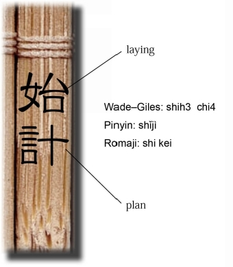
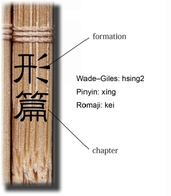
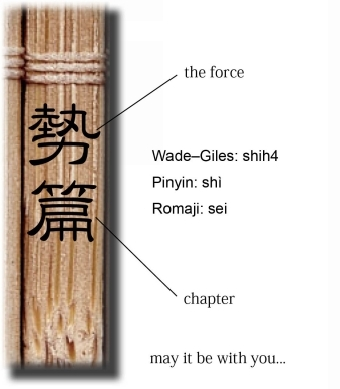
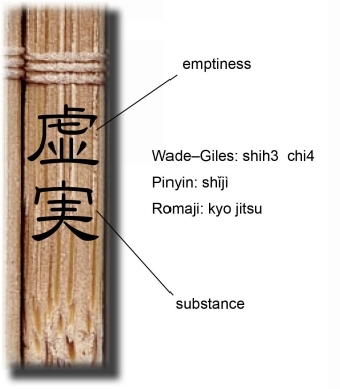
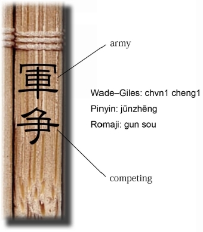
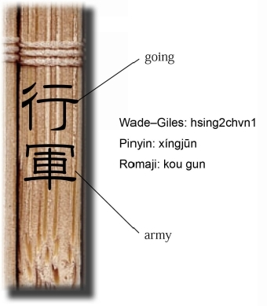
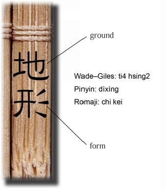
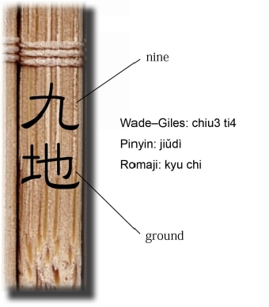
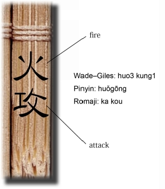
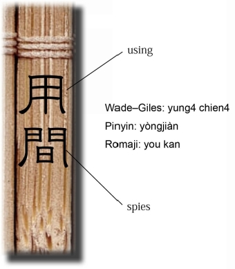

| Lionel Giles's The Art of War And its Rendering into Japanese: 英語で読む孫子兵法 日本版第三版 全篇版 | |
| 田中 淳璽 & 小豆 長光 | |
| KFF Publishing (2015) | |
目次
III. ATTACK BY STRATAGE M （謀攻）
IV. TACTICAL DISPOSITION S （形）
VI. WEAK POINTS AND STRON G （虚実）
VIII. VARIATION IN TACTIC S （九変）
IX. THE ARMY ON THE MARC H （行軍）
プロローグ
孫子評 ～いかに孫子を読むか？～
"The Art of War " の元となった孫子兵法書を紐解くにあたり、最初に心に留めるべきことは何か。私はまず、「孫子兵法は、２５００年前の孫武という人による書である」と言う。「なんだ。それだけのことか。孫子兵法が大昔の古典ということは誰でも知っている」と思うかもしれないが、これが孫子を大きく理解するための第１テーゼである。
２５００年という月日の長さについて考える。それは紀元前５００年のことであるから、イエズス・キリスト誕生の５００年前である。中近東でイエズスが１２人の弟子に人類史で最も影響力を持つ宗教の一つとなるキリスト教の元となる教えの種を蒔いていた頃、孫子兵法は、既に高貴な人の墳墓に納められた古典になっていた。
孫子兵法の著者とされる孫武と同じ頃に、インドには釈迦が、中国には孔子が出ていた。彼らが生きた時代が重なっている可能性もある。正確なところはわからない。史実を記録する技術の開発は、世界で最も早い中国でさえ、まだ少し後である。孫武については、４００年後に、司馬遷『史記』に、「孫武山東省の出で、呉の国の将軍として活躍した」とある。ただし、それだけである。したがって、孫子兵法については、その書物の成り立ちや、孫武という人物について、事実と伝説が入り混じり、ミステリアスな部分が多いのが特徴の一つとなっている。
そうではあるが、本書を古い時代の神話の棚に仕分けするのは早計である。文書による記録がないから重要でないと考えるのは、現代の証拠主義や科学への過剰配慮である。もし、たとえば釈迦やキリストの生涯や奇蹟には確固たる証拠が残っていないから、それが仏教やキリスト教の信頼性を損なっていると主張するなら、それは現実を無視しているに等しい。現代でも、人々はなお熱心に教会に通い、必死に神に祈りを捧げている。
一方で、確かに、科学が宗教の迷妄を決定的に明かす歴史的事件はいくつもあった。例えばガリレオの地動説は、文字通り当時のキリスト教世界の天地をひっくり返した。それまでのパラダイムを壊し、科学の力で中世的なヨーロッパの思想世界を打破した。しかし、それでも科学は、ある事象を「科学的ではない」と示せても、「真実ではない」とまで言えない。実際に、中世ヨーロッパにおいて地動説の登場で風穴を開けられたのは、キリスト教を土台にした権力の構造と、その周辺であり、決してキリスト思想の価値や、帰依する人々の生活が消え去った訳ではない。つまり、キリスト教に依る権力は断絶したが、キリスト教に依る文明には何の断絶も起きなかったのである。だから今日でも、キリスト教は人類思想の一つ（無論欧米で強い）として存在し続けるのである。このことは仏教についても大体同じである。
つまり、ここで何がいいたいのかというと、各文明の代表的な思想は、数千年の歳月に濾過されて、なお圧倒的に存在し続けている訳で、このような存在の影響力は、現代の科学主義や証拠主義に優越する価値基準の一つと考えざるを得ないということである。誤解を恐れずに言えば、１０００歳、２０００歳の「存在」の足元では、その大小や軽重を丁寧に測定して全てを理解した気になりがちな現代科学は、案外陳腐なツールに過ぎない。東洋に「亀の甲より年の功」という諺があるが、まさにその通りで、目方ではなく、存在そのものに畏敬の念を持ち、その智慧に触れよ、ということである。
孫子に絶対的な「オリジナル」はない。歴史上ずっとそうである。一体この世の中に「どうやら２５００年程前からの」代物がどれだけ存在するだろうか！？だから、われわれは「オリジナル」にこだわらず、先人たちと同じように孫子と向き合えばいい。悠久の時をくぐった一書は、山や川、空や大地といったものに近く、しかもわれわれに語りかけてくる稀有な存在である。この紐解ける奇蹟に対し、われわれは時に三国時代の曹操のように前のめりに挑む運命を負う。孫子は、これを紐解く者の「イニシアティブ」を拒まない。むしろ、孫子の兵法書は、「オリジナル」が遠く霞むほど、真実の光に近づいてきたのである。「亀の甲より歳の甲」―。それが、２５００年の孫子兵法が放つ第一の威光である。
孫子の書を紐解く第二の留意点として、孫子は、実は学問としては重要視されてこなかったということが重要である。冒頭で孫子の思想をキリスト教や仏教と比較したが、一般的にキリスト教やイスラム教に対置される古代の中国思想は、"儒教"である。この事実は西側のビジネススクールにおいて最も顕著に説明されている。あるＭＢＡのテキストには、仏教、イスラム教、キリスト教と、儒教との特徴的差異は、個人主義傾向と集団主義傾向だとし、それが西洋の個人主義的なビジネス構造、東洋の集団主義的なビジネス構造の背景となっているとある。現代アカデミズムでは、儒教や集団主義を東洋思想の大きな背景と捉えて、法家思想はその一部であり、孫子兵法はさらにそれを戦争という小さなジャンルに限定したものとして理解される。
しかし、ここで難しいのは、現代の歴史学の光の下では、中国の為政者は、ずっと儒と法を５０／５０（フィフティ・フィフティ）の関係で捉え、「陽儒陰法」などと言って、秘密裡にこれを一対の形で扱っていた事が明らかということである。つまり、結論はこうである。アカデミズム上は儒教の下位で、かつ歴史的には陰の存在であった孫子兵法が底流に持つ法家の思想を無視すると、東側の思想の理解は画竜点睛を欠くのである。
孫子について、こういう有名なエピソードがある。王が新参の孫子を試そうと言った。
「先生は素晴らしい戦略家ときく。朕の後宮には１８０人の美女がいる。先生ならば彼女たちでも訓練で、立派な軍隊に育てられるのではないか？」
その中には絶世の美女として名高い、二人の寵妃も含まれていた。
孫子は、
「軍の指揮権を預けてもらえるならやりましょう」
と、二軍を編成し、二人の王妃を隊長にした。それから軍律と賞罰を繰り返し明らかにし、
「右向け右！」
と、号令した。ところが、後宮の艶美な美女の群れは嬌声をあげて腰をくねらせるだけで誰も言うことをきかない。孫子は同じ命令を十回出した。が、嬌声は止まない。そこで孫子は、
「軍律が徹底し、命令が明らかであるのに軍がそれを守らないのは、隊長たる二人の王妃の責任である」
と言い、王の二人の寵妃の斬首を命じた。
王は、玉座を滑り落ちるように降り、慌てて、孫子のもとへ近寄って言った。
「孫先生、待ってくれ。今のは朕が悪かった。妃を失うことを惜しむわけではないが、今のは戯れじゃ。今回は、私に免じて許してやってくれ。儒教には君臣義ありというではないか」
と、執行官を手で制止しながら言った。しかし、孫子は、
「法を明らかにする時は君臣の義も及ばず」
ときっぱり言って、遂に王が寵愛する妃二人の死刑を執行した。
この後、その後宮の美女からなる軍隊が、一糸乱れぬ統制を持ち、王を守るようになったという下りもある。あくまでも付属的な話ではある。尤もこの極端なエピソード自体も逸話である可能性が強い。しかし、エピソードの真偽を超え、二つの象徴的な示唆が発見される。それは、私が述べる孫子を紐解く時の二つの留意点と同じである。まず、孫子の価値は、歴史の真か偽かではなく 、 250 0 年の歳月に研磨された叡智が残した逸話の中にも積極的に見出されるべき、ということである。次に、儒教世界は孫子などの法教の裏書があって初めて、実質的な存続が可能になっていること―すなわち、"陽儒陰法"のリアリティに、孫子の陰なる威力が見出されるのである。
まとめれば、孫子を紐解くにあたっては、三つの「行き止まり」があり、それらに注意しなくてはならない。
一つ目は、
「神話的な古代書で、戦争という部分的な世界に限定している」ととらえること、
二つ目は、
「神話的な古代書で、古代中国の思想背景である」ととらえること、
三つ目は、
「戦争というマニアックな世界に限り、現代的に応用できる」ととらえることである。
以上が、私が考える孫子の紐解き方である。古くて冷遇されてきた書はもっと日の目を見るべきだとだけ述べるつもりが、つきつめれば、自由な利用が難しい陰の思想であることに気づかされる。権力者も儒教を弾圧することはあったが、兵法を弾圧したということは聞いたことがない。日の当たるところには存在していないことが、孫子を世界最高の陰の書たらしめている理由であろう。
――――――――――――――――――――――――――――
田中惇 璽 , KFF, 2014
PROLOGUE
The Art of War' Evaluation:
How to appreciate 'Sun Tzu ' （孫子） ?
Junji Kamakura, KFF, 2014
When asked 'What in your opinion are the important elements in the reading and understanding of the Sun Tzu?' I would say, 'There are two points to remember while reading Sun Tzu'. The first point that the reader ought to keep in mind while reading the Sun Tzu (or 'The Art of War') is that the book was written some 2500 years ago by a man named Sun Bu. You may find this statement quite obvious---it states a fact that is known to everyone. However, I reiterate my contention that the above is the first important point in developing an appreciation of the value of the Sun Tzu.
Let us imagine how long a period of time 2500 years actually is. The time would have been 500 BC; Sun Tzu was written 500 years before Jesus Christ was born. Sun Tzu was already an ancient work lying in the tombs of kings by the time Jesus Christ lived in the Middle East, seeding his twelve apostles with new words of God which were to become the basis for one of the most influential thought systems of human history.
Buddha in India and Confucius in China are said to have lived in almost the same era as Sun Tzu. The truth, however, shall never be known. Even in China, techniques for accurately recording history were not established until many years later.
It is only in Sima-Qian's famous history book 'Shiji' ( 史 記 ) published 400 years after Sun Tzu's time---that we find a written account stating that Sun Tzu was a native of the Shan-Tung Province and had actively served Wu as a war general. Therefore, it is undeniable that many facets of Sun Tzu remain a mystery, both in terms of the conception of the book and the facts surrounding the author.
However, one should not arrive at the hasty decision of treating the Sun Tzu as a mythical classic which contains ideas that have diminished in importance simply because the book is too old for its chronological accuracy to be verifiable by external evidence. Such reactions are typical of readers who are excessively preoccupied with the trappings of modern science. For example, if it is asserted that the reliability of Christianity or Buddhism is suspect because the miracles attributed to Jesus or Buddha lack scientific credibility in the 21st century, such an assertion fails the reality check: people continue to go to church every Sunday and the Buddhist monasteries admit ever greater numbers of devotees and seekers into their midst.
Indeed, there were times in history when science decisively broke certain unrealistic religious beliefs that had devolved from ancient times. For instance, the heliocentric system literally turned the structure of the medieval Christian world upside down. The awakening of modern science played a significant role in destroying the old European paradigm of the Middle Ages. Nevertheless, although modern science can be an effective tool to prove that 'something is not scientific', it cannot be used as an instrument to refute the truth of a given conceptual entity. The emergence of the heliocentric system led to the dissolution of the power structure of the medieval Christian world; it did not, however, affect the value of Christ's thought and by no means disrupted the lives of people who were devoted to him. Thus, Christianity exists today as one of the most important religions in human history. The same is true of other religions such as Islam and Buddhism.
The point here is that the founding ideas of each civilization came through the filter of thousands of years and thus acquired something akin to an eternal value. Such value can sometimes be regarded as superior to contemporary values that put too much importance on numerical accuracy and factual evidence. It is possible that modern scientific methods fail to capture the essence of thousands of years of 'existence' because they accept only measurable facts and evidence. 'Years bring wisdom', as the proverb goes. It is the essence, the fundamental content, and not the size and the numbers that should be considered.
There is no perfect original copy of the Sun Tzu. Therefore, the book should be read today as it has been throughout its history. In other words, just as with Cao Cao in the later Han period, we owe it to ourselves to delve into this book with a certain degree of aggression. In his time, Sun Tzu never prevented anyone from questioning or participating in the development of the content of his book. It was rather, if I may venture to add, that the book was brought closer to the light of truth with every pulse that transformed it from its original shape. 'Years bring wisdom'. That is the foremost distinction of 'Sun Tzu'.
Secondly, it should be remembered that the Sun Tzu was seldom treated as a significant subject by the academic community. Even though I compared Sun Tzu with Christianity and Buddhism at the beginning of this essay, it is Confucianism which is generally accorded a status comparable with that of other major world ideas. Confucianism is often introduced in Western business school classes as the backbone of Eastern thought together with Taoism. Speaking of business schools in the West, a typical Asian business textbook of an MBA course explains that the basic difference between Buddhism, Islam, and Christianity on the one hand, and Confucianism on the other is that the former offers a path to individual salvation, whereas the latter promises mass salvation. It may be pointed out that Confucianism and groupism represent the grand backbone of the East. A strategist philosophy like the Sun Tzu, which resembles Chinese legalist philosophy in its core thought, is recognized as only a part of this backbone, limited to the narrower world of wars.
However, what is hard to understand here is the fact that during the course of actual Chinese history, Confucianism and Legalism, including their strategists and proponents, were never sorted into statures great and common or superior and inferior. It has been proven that over the course of Chinese history, emperors and bureaucrats used both ideas in complete harmony with each other to govern their vast estates. The way that Confucianism and Legalism were used in tandem is likened to the popular adherence to the 'Yin and Yang' ( 陰 陽 ) philosophy, a thought system that is referred to as 'Yang Ru Yin Fa' ( 陽儒陰 法 ). Confucianism is compared to 'Yang' (陽 ) which represents light and day, whereas Legalism is likened to 'Yin' (陰 ) which stands darkness and the night. It is therefore natural that the Sun Tzu may blend into and be glossed over in favour of the more distinguishable thought systems like Confucianism; however, historical facts tell us that this predisposition does not justify the acts of scholars who subordinate the Sun Tzu. 'Yang Ru Yin Fa' ( 陽儒陰 法 ) may thus be regarded as the second distinction of the Sun Tzu.
There is a famous incident that is often recounted when Sun Tzu is discussed. Once, the King wanted to try Sun Tzu, who was then a new recruit. He said, 'You are a great strategist. I wonder if your theory on managing soldiers can be tested on my concubines in the palace.' Sun Tzu answered, 'If you leave it to me', and proceeded to divide 180 women into two groups that were each led by two of the king's most favorite ladies, each of whom was known for her celestial beauty. Sun Tzu began training the women soldiers. Despite the fact that Sun Tzu had clarified his rules and commands, the women did not respond, reducing the two groups to a mass of coquettish voices and wriggling bodies. After ten failed attempts to train the women, and bereft of any support from the two group leaders, Sun Tzu said, 'By now, the discipline is known and the commands are clear, but the groups have not responded. It is the responsibility of the group leaders'; Sun Tzu then ordered the beheading of the two ladies. His order stunned the King who fell on his knees and implored Sun Tzu to take back his order. The King said, 'It was my fault that I tested my concubines. I had done so only in jest. Please obey my order to annul the death penalty my women have been sentenced to. Is not a king bound as well by a moral obligation toward his subjects?' However, Sun Tzu said, 'In a war, military discipline takes precedence over a king's order'. Accordingly, the king's favorite concubines were beheaded. After the execution, new leaders were chosen and the women turned out to be great soldiers who followed all commands without hesitation.
Although the veracity of this incident is suspect, it makes two symbolic suggestions that are in accordance with the two points I had earlier pointed out as being integral to the appreciation of the Sun Tzu. One, the value of the Sun Tzu should not be associated with the authenticity of the book but with the nature of the thought that was developed and crafted into stories that have now survived for two thousand five hundred years. Two, in such thought, one can see that the doctrines of Legalism, including strategic philosophy like the Sun Tzu, played as active a role as the tenets of Confucianism in administrating the estates and kingdoms of ancient China.
To conclude, the key to truly appreciating Sun Tzu lies in two sayings and three caveats.
The two sayings are 'Years bring wisdom' and 'Yang Ru Yin Fa'. The three caveats are as follows:
It is suggested that the Sun Tzu should not be regarded as an ancient mythical book which is limited to the narrow field of war;
It is suggested that the Sun Tzu should not be regarded as the entire spectrum of thought of the ancient Chinese rulers;
It is suggested that the Sun Tzu should not be regarded as a source of aggressive war tactics that can be implemented in the modern world.
This, according to me, is the way that 'Sun Tzu'--'The Art of War' may be read today.
Gile s 訳、和訳、書き下し文、解説
I. LAYING PLAN S （始計）

la y 準備する 案出する 工夫する。
Pla n 作戦
原文：第一篇「始計」
直訳：作戦準備
- Sun Tzu said: The art of war is of vital importance to the State.
Sun Tz u 『孫子』著者の孫武 （ B.C.53 5 ～）の敬称、孫子
The art of wa r 孫子の兵法書 戦争の方法
vita l 死活的
直訳：孫子は言う。国にとって戦争の方法は死活的に重要である。
- It is a matter of life and death, a road either to safety or to ruin. Hence it is a subject of inquiry which can on no account be neglected.
inquir y 質問 照会 研究 調査
on no accoun t 決して〇〇しない
neglec t 無視する 軽視する おろそかにする
原文：死生（しせい）の地、存亡の道、察せざるべからざるなり。
直訳：これは生死の問題であり、存亡のどちらへの道である。よって、決して軽視できない課題である。
- The art of war, then, is governed by five constant factors, to be taken into account in one's deliberations, when seeking to determine the conditions obtaining in the field.
gover n 支配する
constan t 普遍的な
take into accoun t 考慮に入れる
deliberatio n 熟慮、慎重
determin e 決定する
obtai n 得る
原文：故にこれを経（はか）るに五事を以てし、これを校（くら）ぶるに計をもってして、その情を索（もと）む。
直訳：兵法とは、それゆえ、五つの普遍的な要素によって支配される。それら要素は、戦場にて得られる情勢を決定するときに、必ず考慮に入れなければならないものである。
- These are: (1) The Moral Law; (2) Heaven; (3) Earth; (4) The Commander; (5) Method and discipline.
la w 法律、法則
metho d 方法、秩序
disciplin e しつけ、規律、懲罰
原文：一に曰く道、二に曰く天、三に曰く地、四に曰く将、五に曰く法
直訳：五つの要素とは、 （1 ）モラルに関する法則、 （2 ）天（例えば気象条件）、 （3 ）地（例えば地理条件）、 （4 ）指揮官（将軍）、 （5 ）秩序と規律、である。
- The Moral Law causes the people to be in complete accord with their ruler, so that they will follow him regardless of their lives, undismayed by any danger.
caus e 引き起こす
complet e 完全な
accor d 調和
ruler rule+ r 支配する者
so tha t 〇〇のために、結果として〇〇
（目的ないし結果を表す接続詞）
regardless o f ～ を省みず
cf. regard of ～ を考慮して
lives = lif e の複数形
cf. lif e 生命、人生、生活
dange r 危険
cf. dangerou s 危険な
原文：道とは民をして上と意を同じうし、これと死すべく、これと生くべくとして、危（うたが）わざらしむるなり。
直訳：モラルに関する法則（道）は、人々を、その統治者と完全に調和させる。結果として、人々は、自らの生命も省みず、いかなる危険にも動揺することなく、統治者に従うようになる。
- Heaven signifies night and day, cold and heat, times and seasons.
signif y 意味する 表す 前兆となる
直訳：天とは、夜と昼、寒さと暑さ、時や季節を意味する。
- Earth comprises distances, great and small; danger and security; open ground and narrow passes; the chances of life and death.
distanc e 距離
narro w 狭い
chanc e 機会、可能性、（良いことも悪いことも）
直訳：地とは、距離、大きさ、危険度、開けた土地か、狭い小道か、生死の機会、そういうもので構成される。
- The Commander stands for the virtues of wisdom, sincerely, benevolence, courage and strictness.
stand fo r 象徴する 表象する 表す 意味する
virtu e 美徳
直訳：将とは、智慧、誠実、仁愛、勇気、厳格という美徳を意味する。
※この順序がそのまま、将軍に必要な資質の優先度であると理解されている。
- By method and discipline are to be understood the marshaling of the army in its proper subdivisions, the graduations of rank among the officers, the maintenance of roads by which supplies may reach the army, and the control of military expenditure.
marsha l 部隊を整列させる 組織化する
prope r 適切な
office r 役人 将校
maintenanc e メンテナンス 維持補修
suppl y 供給品
直訳：適切な小隊に分割して軍隊を運用することや、将校を階級に分けること、部隊に補給を行う道路を補修すること、軍事支出をコントロールすることは、秩序と規律（法）によって理解されねばならない。
※英文は五文型といわれるように 、5 種類の文しか存在しないため、必ず主語述語という順である。ただし例外が２つあり、一つは倒置の場合、もう一つは「長いものは後ろ」のルールである。倒置は 、 MV S という明確な語順ルールがある 。M と は SVO C 以外の単なる修飾句のことである。この文章の頭の 、 By method and disciplin eもM で 、 are to be understoo d が述語、最後に主語の the marshaling of .. . が来る。主語は 、 the marshaling of ..., the graduations of ..., the maintenance of ..., and the control of .. . と文末まで続く４項目の並列である （ a, b, c, and d ）。なお、「長いものは後ろ」ルールには、特定のトリガーが無い。
※ be t o ：理解が難しいことで有名な熟語のひとつであるが 、 be supposed t o や shal l と同じく、「神の意志」と理解すれば良い 。 Wil l という「人の意志」に対する「神の意志」である。その結果、当然・予定・義務などの意味が生じる。
- These five heads should be familiar to every general: he who knows them will be victorious; he who knows them not will fail.
hea d ここでは「見出し」 （ 1-4 . で示す（１）～（５）の要素）
familia r 馴染んでいる 精通している
be victoriou s （叙述的用法で） 勝利者たる 勝つ
原文：凡（およ）そ此（こ）の五者、将は聞かざる莫かれ。
之を知る者は勝ち、知らざる者は勝たず。
直訳：これ ら5 つの表題に対し、すべての将軍は精通しておくべきである。これらを知る者は勝ち、知らない者はしくじる。
※ he who knows them no t は、古語的表現で 、 he who does not know them . と同じ意味。
- Therefore, in your deliberations, when seeking to determine the military conditions, let them be made the basis of a comparison, in this wise:--
therefor e したがって それゆえに
deliberat e 熟考する
see k 探す
determin e 決定する
militar y 軍隊
compariso n 比較
in this wis e 例えばこのように
原文：故に之を校（こう）するに計を以てして、其の情を索（もと）む。
直訳：したがって、軍隊の状態を策定する熟考において、それらを比較の基礎とせよ。例えばこのように
※ therefor e は、接続副詞。接続詞のように感じるが、あくまで副詞であるので、従位（従属）接続詞のように文中で（ ～ , therefore , ～）と繋げない。ピリオド、セミコロン（；） 、 an d と共に用い、位置は文頭を始めとし、至って自由である。
- Which of the two sovereigns is imbued with the Moral law? (2) Which of the two generals has most ability? (3) With whom lie the advantages derived from Heaven and Earth? (4) On which side is discipline most rigorously enforced? (5) Which army is stronger? (6) On which side are officers and men more highly trained? (7) In which army is there the greater constancy both in reward and punishment?
原文：主孰（いづ）れか有道なる、将孰れか有能なる、天地孰れか得たる、法令孰れか行はる、兵衆孰れか強かる、士卒孰れか練れたる、賞罰孰れか明らかなる。
derived fro m ～から生じる
office r 将校
me n 兵卒
constanc y 一定性
直訳 ： 1 . どちらの君主がより「道」に馴染んでいるか
2 . どちらの将軍がより能力があるか
3 . どちら側により天と地の利があるか
4 . どちら側がより厳格に規律が実施されているか
5 . どちらの軍がより強いか
6 . どちらの兵卒の錬度がより高いか
7 . どちらの軍において、賞罰いずれにおいてもより一定に行われているか
※ここに出てく る mos t は 、 mor e と同義で、程度はより強い。
※「道」は英文の " moral la w "にあたり、「君主と国民の相互信頼」という意味である。道教の「道（タオ）」や、儒教の「王道」の概念とも関連するが、孫子本文には「道」の定義は特にない。当時の中国社会にごく自然に存在する概念であったと考えられる。
- By means of these seven considerations I can forecast victory or defeat.
by means o f ～ 〇〇の手段によって
conside r 考慮する
defea t 敗北
直訳：これ ら7 つの考慮によって、私は勝利と敗北を予見することができる。
- The general that hearkens to my counsel and acts upon it, will conquer: let such a one be retained in command! The general that hearkens not to my counsel nor acts upon it, will suffer defeat:--let such a one be dismissed!
hearke n listen (hear ) の古語的表現 傾聴する
counse l 助言
such a on e そんな人
retai n 雇っておく 雇いとめる 留める
in comman d 指揮官である状態
suffe r 経験する 被る
dismis s 解雇する 解散させる 捨て去る
原文：将、吾が計を聴きて之を用ひば必ず勝たん、之に留まらん。将、吾が計を聴かずして之を用ひば必ず敗れん、之を去らん。
直訳：私の助言に耳を傾け、それを実行する将軍は、勝利を得るであろう。そんな人に指揮を執らせよ！私の助言を聞かず、それを行うこともない将軍は、敗北するであろう。そんな人は御免こうむる！
※ not A nor B は、 「A で もB でもない」という意味で二重否定ではなく 、 an d と同じ等位接続詞である。動詞の三人称単数現在 形s （三単現 のs ）から見分けられる。
※ - - は、ダッシュである。句や文を挿入し、思考の強調など著作物の背後の奥行を示す。同様にコロン（：）は、詳細の説明などで、文を区切りたい気持ちの存在などを示す 。 1 5 ではこれらが共に用いられ、しかも文末に！がある 。 Gile s の高い技術で、著者孫武の秘めた思いをも英文から再発見できる（※次コラム）。これら記号は訳上では死活問題にならない。むしろ、著作物の背景等を残して訳文や論文を制作したい時、一定の存在感を放つ。
＜コラム ～ 'such a one ' は、著者孫武その人か！～＞
世の通説的な解釈に合わせると、英文 の 'such a one ' に当たる部分は、「私（孫武）」を指し、「君主が私の助言を聞くなら私は留まり、聞かないのならば私は去る」という意味になる。英文の直訳をすれば、「そんな人」になるが、孫武本人が「私」を意図しているならば 、 'such a one ' にも多少「私」を含ませ、「そんな人は御免だ！」のように訳すことも妥当である。
というのも、プロローグで述べた通り、『孫子』を解く鍵の一つは 、 "Years bring wisdom " である。よく、「亀の甲より年の功」とか「老馬識途」などいわれるが、歳月の濾過を経た現在の『孫子』の姿を前に、錯簡や散逸、後世の加筆などについて、神経質な問題を提起する利益は小さいということである。
現在のありのままを受け入れて伝承を吟味すると、著者孫武は呉の軍師に就任するにあたり、呉王の闔閭（こうりょ）に様々に試されたという。『孫子』の内容ばかりか、孫武自身の技量についてもテストされた。いわば、『孫子』は、この就職試験の際に提出された補助資料や履歴書であり、そこには、「こんな君主は良くて、こんな君主なら厭だ」という主張は直には盛り込めない。したがって 、 'such a one ' が誰を指すかについても、あくまでも間接的である必要性が見られるのである。
中国（人）には、古くから "指桑罵槐" と表現される行動規範がある。喧嘩などで他人に好悪の感情を伝える局面でも、相手に直接的には言わず、第三者に内容を投影して訴えるのである。例えば、孫子にあてはめれば、呉王との雇用条件交渉で、本心では「私の言を聞かないなら、就職しません」というのが最重要事項であったとしても、そのことを伝えるのには、婉曲的に「例えばこんな武将ならば人は仕えるべきであり、呉王もそういう武将を採用するべきだ。絶対に。」という具合に言うのである。在野の士が呉の国王を相手に交渉しているのであるから、孫子も裸足である。
そして、ここからがプロローグで紹介している逸話と繋がる話である。このように一言一句に気を配っていた孫武であったが、やはりその新しすぎる戦争の思想は、周囲の不興を買った。特に呉王には大いに疑念を抱かせた。おそらく呉王は詐欺師まがいの孫武を笑いものにして追い出そうとでも考えていたのであろう。「そんなに偉い先生ならば、この娘たちを訓練して見せてはくれまいか？」と命じ、後宮を開けて数百人単位の女官と王妃を中庭に連れ出してきた。こうして孫武は最初の試練に立たされたのである。（※詳細は全編版プロローグ参照）
＜コラム ～ 'The Art of War ' 著 者 Gile s はスパイ！？＞
異なる文明間で著作を訳す時、直訳では難しい場面がある。中国語（漢文）、英語、日本語は、それぞれ中国文明、西側のそれ、そして日本文明という異なる文明下で発展しており、各言語が内包示唆する言外の意がある場合には、その親文明の影響を考慮する必要があるからである。究極の障害は、言葉ではなく文明の壁という訳である。著者の Lionel Gile s は英国屈指のシノロジストであった。シノロジストいえば、今日でも単なる学者を越えた意味合いを持つ。況や帝国主義が表通りを跋扈していた当時においてをや 。 Gile s はあらゆる知識と訳技を用いて、『孫子』原文を正確に西に伝えた。その出来栄えは正確無比で、信頼度は極めて高い。そもそも、『孫子』英訳の動機は、中華文明に対する憧れを原因とするものではなく、英国がアジア経営に乗り出していたという結果からくる。世界覇権の頂点に君臨していた英国の力の充実は文化面にまで漲っていたのである。この刺激的な試みは、決して意訳と誤訳に塗れた伝言ゲームではない。大英帝国の外交官であった Gile s の父と 、 Gile s ら超級のシノロジストたちが持ち帰ったものを、逆輸入して現代の日本で解きほぐし、再び原典と比較する時、グローバル化・地政学の新時代に新たな地平が見い出されよう。
Lionel Gile s は 、 Wade-Gile s 法により、マンダリンによる孫子原文発音まで忠実に残している 。 Wade-Gile s 法とは 、 Lionel Gile s の父でケンブリッジのシノロジストであった英 Herbert Gile sが 189 2 年に完成した発音表記システムである。いわゆるピンインの前身で、現在でも欧米の図書館の検索システムでは用いられている。ちなみに 、 Herbert Gile s は英国の外交官であも、中国総領事を務めた。外交官でシノロジストといえば、当時の世界情勢においては諜報機関員とほぼ同義である。また、一説には 、 Herbert Gile s は熱心なフリーメイソンリーでもあったといわれる。
Gile s 親子は、『孫子』を英訳するにあたり、あらゆる知識と経験、立場とマンパワーを動員できた。また、彼らが同時に新しい辞書や発音記号などを開発し、標準化することに成功していた点も重要である。このことだけでも 、 Lionel Gile sの 'The Art of War ' は、第一級品の作品であるとわかるのだが、当時世界覇権国家であった英国の世界政策に鑑みれば、シノロジスト の Gile s 、そして、中国総領事の父 、 Herber t らが、『孫子』を深く研究し、忠実に英訳する十分な動機があったこともうなづける 。 'The Art of Wa r ' は、その生い立ちからも、日本や中国における孫子研究本と互角か、あるいは、それ以上の精緻さを湛えていると見てよい。
- While heading the profit of my counsel, avail yourself also of any helpful circumstances over and beyond the ordinary rules.
hea d 〇〇に向かって進む
profi t 利益
avail oneself o f ～ 利用する 乗じる （ make use o f ）
over and beyon d 超越する
ordinar y 通常の
原文：計（けい）利として以て聴かるれば、乃（すなわ）ちこれが勢を為して、以てその外（そと）を佐（たす）く。
直訳：私のはかりごとの利に向かわれるならば、通常の法則の枠外の勢というものも利用すべきでしょう。
※原文との比較で 、 any helpful circumstance s が「勢」 、 over and beyond the ordinary rule s が「外」を指す。
- According as circumstances are favorable, one should modify one's plans.
according a s ～ 〇〇に従って 〇〇次第で
favorabl e 有利な 好都合の 順調な
modif y （部分を）修正する （一部を）変更する
直訳：勢の有利さに従って、作戦を練り直すべきである。
※「権」とは 'power ' である。原文「権を制す」は、力を制圧する、即ち勝利である。一方、「利」とは 'interest ' （利子）である。そして、権と利の元が「勢」である。原文を式で表すと、
'interest 1 ' （利１ ） + 'interest 2 ' （利２ ）+ ・・・ + 'interest n ' （利ｎ ） = 'victorious power ' （勝利）
となっている。つまり、 'interest ' （利）の元となる「勢」は式には組み込まれていない。
しかし、同じことを英文では次のように表現する。
'interest 1 with power Ⅰ' （元手Ⅰとその利１ ） + 'interest 2 with powe rⅡ' （元手Ⅱとその利２ ）+ ・・・ + 'interest n with power N ' （元 手N とその利ｎ ） = 'victorious power ' （勝利）
ここで、元手は式に組み込み済みである。そして、 'interest with power ' を「勢」とし、各勢の状況に従って作戦を練り直す、とある。この発想は、金融の「複利の概念」である。「複利の概念」 は 2 0 世紀最大の発見と言われる。孫子の「勢」の真意にまた一歩迫る訳である。
- All warfare is based on deception.
warfar e 戦争 戦闘行為
is based o n ～に基づく
原文：兵は詭道なり。
直訳：すべて戦争は、だますことが基本である。
- Hence, when able to attack, we must seem unable; when using our forces, we must seem inactive; when we are near, we must make the enemy believe we are far away; when far away, we must make him believe we are near.
forc e 力 軍事力
inactiv e 非活動的 動いていない （ activ e の反義語）
原文：故に能（よ）くして之（これ）に能くせざるを示し、用ひて之に用ひざるを示し、近くして之に遠きを示し、遠くして之に近きを示す。
直訳：故に、攻撃できるときは攻撃できないようにみせかけ、
軍を動かしているときは動いていないようにみせかけ、近づいているときは遠くにいるようにみせかけ、遠ざかっているときは近くにいるようにみせかける。
- Hold out baits to entice the enemy. Feign disorder, and crush him.
hold ou t 差し出す 提供する （口語）おあずけ
bait(s ) 餌（えさ）
entic e 誘惑する
feig n でっちあげる 装う
disorde r 無秩序
原文：利して之を誘ひ、乱して之を取り
直訳：餌を差し出して敵を誘え。混乱を作り出し、敵を潰せ。
※文脈や目的語によりさまざまな意味がある 。 hol d そのものは（手に）保持するという意味であり、むしろここでは 、 ou t に意味があり、保持する物を「放つ」の意味。
He softly holded fireflies out to her . （そっと火垂るを差し出す）と同じ。反対に 、 ou t が動詞を強め、明確化する場合、「与えない」になる。
※ラテン語：「形成、造形する」から
feign illnes s （病気をでっちあげる）→病気を装う
feign madnes s （狂気をでっちあげる）→狂気を装う
※ 'crush', 'crash', 'clash ' の使い分け （自動詞の場合）
'crash ' と 'clash ' は共に「がっちゃん」という衝突であり、スペル に Audi o （音） のA を含むと考えると覚えやすい 。 cras h は物と物の衝突であり 、 clas h は意見や文明など、音なき衝突である。例えば、関ヶ原で、両軍激突は 'clash ' 、武士の鎧がぶつかり合うのは 'crash ' 。残っ た 'crush ' は、質量や実力に大差があり片方が「ぺちゃんこ」になる状況で使う。暴れた馬が転がっている瓢箪を踏んで潰すような場合、 'crush ' である。ちなみに、関ヶ原の合戦では、結果的には、東軍が西軍を 'crush ' したといえる。
- If he is secure at all points, be prepared for him. If he is in superior strength, evade him.
secur e 安全である
at all point s すべての点において
prepar e 準備する
superio r より強い
strengt h 強さ
evad e 逃れる
原文：実（じつ）ならば之（これ）に備へ、強（きょう）ならば之を避け
直訳：もし敵がすべてにおいてしっかりしているなら、準備し、敵のほうが強いなら、避けよ
- If your opponent is of choleric temper, seek to irritate him. Pretend to be weak, that he may grow arrogant.
opponen t 敵
choleric tempe r 怒りやすい気質
seek to d o 〇〇しようと努力する （ tr y ）
irritat e 苛立たせる
preten d 装う
,tha t ～ 〇〇となるように 〇〇するために （ so tha t ）
arrogan t 傲慢な
原文：怒にして之を撓（みだ）し、卑にして之を驕らし
直訳：もし敵が怒りやすい気質ならば、苛立たせるように努力せよ。敵をおごらせるためにわざと弱いふりをせよ。
- If he is taking his ease, give him no rest. If his forces are united, separate them.
take one's eas e 安穏とする
unit e ひとつにする
separat e 分ける
原文：佚（いつ）にして之（これ）を労（ろう）し、親（しん）にして之を離（わか）つ
直訳：もし敵がくつろいでいるなら、休息を与えないようにし、団結しているなら分断せよ
- Attack him where he is unprepared, appear where you are not expected.
appea r 現れる
expec t 思う 予測する 期待する
直訳：敵が準備していない所を攻撃し、敵が想定していない所に現れよ。
- These military devices, leading to victory, must not be divulged beforehand.
devic e 装置 手段 意匠 策略
divulg e 秘密を打ち明ける
beforehan d 事前に
原文：此れ兵家の勢、先づ伝ふ可からざるなり。
直訳：これらの用兵は、勝利の結果をもたらす。事前に明かすことはできないものである。
※原文の「勢」を「勝」とする説もある。ちなみに、「勝利する」と「権を制す」は同じ意味（本 編 17 . を参照）で、「制権」は「勢」が生む「利」の積み重ねから成る。従って、「勢」が生む「利」の複利によって「勝利する」ことになる。つまり、「勢」は原因、「勝利する」は結果の関係に置かれている。
These military devices, leading to vicotry, ...
で、「これらの用兵は、勝利の"結果"に続く」とあるから、結果の勝利に対して原因は、「これらの用兵」と言っている。つまりは、「これらの用兵」とは「勢」に他ならない。
- Now the general who wins a battle makes many calculations in his temple ere the battle is fought. The general who loses a battle makes but few calculations beforehand. Thus do many calculations lead to victory, and few calculations to defeat: how much more no calculation at all! It is by attention to this point that I can foresee who is likely to win or lose.
no w ときに ところで そもそも
calculation(s ) 計算 見積もり 予想すること
templ e 寺院 宗廟
er e 事前に （ befor e と同じ）
thu s このように したがって
how much mor e まして いわんや
It i s ～ tha t 強調構文
attentio n 注意
forese e 予見する
likel y ありそうな 見込みがある
原文：夫（そ）れ未だ戦はずして廟算（びょうさん）するに勝つ者は、算を得ること多きなり。未だ戦はずして廟算するに勝たざる者は、算を得ること少なきなり。算多きは勝ち、算少なきは勝たず。而（しか）るを況（いわん）や算無きにおいてをや。吾（われ）此（これ）をもって之（これ）を観れば、勝負を見ゆ。
直訳：そもそも戦いで勝つ将軍は、戦闘が始まる以前に、宗廟（大本営）の中で、多くの見込みを立てる。戦いで負ける将軍は、事前に少ない見込みしか立てない。このように、多くの見積もりをすることは勝利へと繋がり、少ししか見積もりをしないことは敗北へと繋がる。ましてや全くの無策では！私は、この点について目を向けるから、どちらが勝ちそうか負けそうかを見通すことができるのである。
※ calculation s （「計算」）は、可算名詞の時には「注意深く計画して整えた手筈」の集合を指し、「見積もり」と訳せる。
※宗廟とは、古代中国の都城の中心的な建物で、歴代の天子
（皇帝）の位牌を祭っていたため、しばしば国家を象徴する。
第一篇「始計」 END
II. WAGING WA R （作戦）
wag e （戦争やキャンペーンを）遂行する まかなう
原文：第二篇「作戦」
直訳：戦争の遂行
- Sun Tzu said: In the operations of war, where there are in the field a thousand swift chariots, as many heavy chariots, and a hundred thousand mail-clad soldiers, with provisions enough to carry them a thousand li, the expenditure at home and at the front, including entertainment of guests, small items such as glue and paint, and sums spent on chariots and armor, will reach the total of a thousand ounces of silver per day. Such is the cost of raising an army of 100,000 men.
operation s （複数形）軍事作戦 軍事行動 作戦本部
in the fiel d 出征中で 戦場で 試合や戦闘に投入されて
chario t （古代の）戦車
mail-cla d 甲冑を着こんだ状態の
provisio n 準備 補給
expenditur e 出費
armo r 甲冑 装甲 プロテクター
直訳：孫子はいう。軍事作戦では、軽戦 車 100 0 台と、それと同数の重戦車に、武装した兵 士 1 0 万人が投入されており、これら を 100 0 里先に派遣して必要な補給を行うには、本国および前線での出費は、賓客への接待費、接着剤（膠）や塗料（漆）などの小さな費目、戦車や装甲に費やした合計分を含めて、総額で一日あたり千金にも達する。それ が 1 0 万の軍を起こすことの費用である。
※ In the operations of wa r～ to carry them a thousand li . まで副詞句。主語は the expenditur e 。その説明 は and sums spent on chariots and armo r までで 、 will reac h ～と運ぶ。
- When you engage in actual fighting, if victory is long in coming, then men's weapons will grow dull and their ardor will be damped. If you lay siege to a town, you will exhaust your strength.
engage i n 従事する
actua l 実際の
weapo n 武器
gro w 〇〇になる （ ge tや becom e と同じ用法）
ardo r 熱意
dam p 弱める 湿らせる
sieg e 包囲
exhaus t 消耗する
原文：其（そ）れ戦を用ひて勝つや、久しければ則（すなわ）ち兵を鈍くし鋭（えい）を挫き、城を攻むれば則ち力屈す。
直訳：実際の戦闘に突入したとすると、もし戦争が長引けば、武器はなまくらになり、士気は弱まるだろう。城攻めともなれば、力を使い果たすだろう。
※ dam p に似 た dum p は「全て捨てる」の意味。
- Again, if the campaign is protracted, the resources of the State will not be equal to the strain.
campaig n 軍事行動
protrac t 長引かせる
resource(s ) 資源 財源 権謀術数 工夫
strai n 緊張 負担
原文：久しく師を暴（さら）さば、則ち国用（こくよう）足らず。
直訳：また、戦争が長引けば、国家の資力は負担に耐えられなくなるだろう。
- Now, when your weapons are dulled, your ardor damped, your strength exhausted and your treasure spent, other chieftains will spring up to take advantage of your extremity. Then no man, however wise, will be able to avert the consequences that must ensue.
treasur e 宝 貴重なもの（ここでは国の財産の意味）
spring u p 生じる
take advantage o f つけこむ
extremit y 先端 窮地
aver t 回避する
consequenc e 結果
ensu e 後に起きる
則ち諸侯其の弊に乗じて起る、智者有りと雖も、其の後を善くする能はず。
直訳：武器が鈍り、士気が鈍り、力を消耗し、宝を消費し尽くしたとすると、他の諸侯があなたの窮地につけこんで兵を挙げるだろう。そうなると、どんな賢者でも、その後に起きるにちがいないことを回避することはできないだろう。
- Thus, though we have heard of stupid haste in war, cleverness has never been seen associated with long delays.
stupid hast e 拙速（速くて拙いこと）
clevernes s 器用 利口 賢さ
associated wit h ～ 〇〇に関連する 伴う
dela y 遅延
原文：故に兵は拙速を聞くも未だ巧の久しきを覩（み）ざるなり。
直訳：だから、戦争において拙速（せっそく）というのは聞いたことがあるが、大きな遅延を伴う賢明さというのは見られたためしがないのである。
- There is no instance of a country having benefited from prolonged warfare.
instanc e 事例
prolon g 長くする
原文：夫（そ）れ兵（へい）久（ひさ）しくして国に利（り）なる者は、未（いま）だ之（こ）れ有（あ）らざるなり。
直訳：長引いた戦争から利益を得たという国の事例は無いのである。
- It is only one who is thoroughly acquainted with the evils of war that can thoroughly understand the profitable way of carrying it on.
thoroughl y 徹底的に
evi l 悪
acquainte d 精通している 知り合いの
profi t 利益
carry o n 続行する
原文：故に尽く兵を用ふるの害を知らざる者は、則ち尽く兵を用ふるの利を知る能（あた）はざるなり。
直訳：戦争の害悪を徹底的に知る者こそ、戦争の有益な遂行方法を完全に知っている。
- The skillful soldier does not raise a second levy, neither are his supply-wagons loaded more than twice.
skillfu l 熟練した
lev y 召集
supply-wago n 補給を行う輜重（しちょう）車・輸送車
loade d 装填された 兵糧が積み込まれている
原文：善く兵を用ふる者は、役を再び籍（しる）さず、糧を三たび載せず。
直訳：戦争に精通した人は、兵役を二度課すことはなく、補給を三度行うこともない。
※ neither are his supply-wagon s は 、 MV S の倒置。次と同じ。
His supply-wagons are not loaded more than twice, either . このような文は倒置させるものと決まっている。
- Bring war material with you from home, but forage on the enemy. Thus the army will have food enough for its needs.
materia l 物質 材料
forag e 餌 食料 略奪
直訳：戦争に必要な装備は、自国から持っていくが、食料は敵から略奪する。そうして、必要なだけの食料を得ることになる。
- Poverty of the State exchequer causes an army to be maintained by contributions from a distance. Contributing to maintain an army at a distance causes the people to be impoverished .
povert y 貧困 不足 不毛
the (State) excheque r 国庫
caus e ～ to d o ＜人・物＞に〇〇させる
maintai n 維持する 支える 養う
contribution s （複数形）拠出金 寄付金 寄贈物
contribut e 貢献する 寄付する 提供する
from a distanc e 遠くから 遠目には
impoveris h 貧しくする
遠く輸（いた）さば則ち百姓（ひゃくせい）貧（まず）し
直訳：遠くからの補給により支えられる軍は、国庫を逼迫させる。遠くにある軍を補給し支えることは、国民を貧窮させる。
[ （第一文の倒置構文を反映させた場合）国庫が、軍の維持で逼迫するのは、遠くからの補給によらせるからである 。 ]
※上下の二文 は cause s ～ to d o の構文で揃えられており、上下で国も民も共に「貧しくなる」状況を説明する展開である。ところで、上の文は、主語と目的語を倒置している。その目的は、上下で動詞 （ impoveris h ）の重複を避けるためと、原文そのものが倒置である点を忠実に反映するためである。
したがって、上の文は、倒置を外せば、
An army (to be) maintained by contributions from a distance
causes poverty of the State exchequer.
となる。さらに、下の文と cause s ～ to d o の形で揃えると、
An army (to be) maintained by contributions from a distance
causes the State exchequer to be impoverished.
になる。この文だと、動詞 （ impoveris h ）が重複してしまい、結局総合的な判断で現在の語順になっているのであろう。ただし、わかりづらい文であることは否めない。
- On the other hand, the proximity of an army causes prices to go up; and high prices cause the people's substance to be drained away.
on the other han d 他方
proximit y 近いこと
price(s ) 価格 相場 物価
substanc e 物質 財産
drain awa y 流出させる
原文：師に近き者は貴（たか）く売る、貴（たか）く売らば則ち百姓、財竭（つ）く。
直訳：他方、近い場所での戦争は、物価の高騰を招く。そして、物価の高騰は、国民の蓄えを失わせる。
- When their substance is drained away, the peasantry will be afflicted by heavy exactions.
peasantr y 農民
afflic t 苦しませる
exaction(s ) 取り立て 重税
直訳：国民の蓄えが失われれば、農民は重い賦役に苦しむことになる。
※賦役とは、戦争のための人夫の徴用などを指している。
- With this loss of substance and exhaustion of strength, the homes of the people will be stripped bare, and three-tenths of their income will be dissipated; while government expenses for broken chariots, worn-out horses, breast-plates and helmets, bows and arrows, spears and shields, protective mantles, draught-oxen and heavy wagons, will amount to four-tenths of its total revenue.
strengt h 体力 人手 兵力 国力
stri p はぐ むく 丸裸にする （ strip naked; strip bar e ）
bar e 裸の 空っぽの 素手の
incom e 収入 所得
dissipat e 散らす 浪費する 雲散霧消させる
expens e 費用
worn ou t 使い尽くされた すり切れた 疲れ果てた
mantl e 覆い隠すもの マントル 外套
draugh t 牽引用の 樽抜きの 草案の （米語 ： draf t ）
oxe n （ o x 複数形）雄牛
amount t o ～の量に達する
revenu e 収入 総所得 歳入
直訳：この財産の逸失と、戦力の消耗により、国民の家々は丸裸にされ、国民の収入の１０分の３が雲散霧消する。そして、壊れた戦車や、疲れた馬、鎧兜、弓矢、槍盾、大楯、荷牛、大型輸送車のための出費は、国家の歳入 の 1 0 分 の4 に相当するようになる。
＜コラム ～「十去其七」で損失７割か！？～＞
「十去其七」や「十去其六」は、現代中国語にも残るややトリッキーな表現である。人は、病気や経済的な危機に遭うと、財産や生命を失う場合がある。これは仮に元の状態 を 1 0 割とすれば、全損のケースである。しかし、全損以外の場合には、危機が峠を越せば、回復がはじまる。全快までは無理でも、「三歩進んで二歩下がる」を繰り返しながら、やがてショック前の６、７割にまで戻し、その後はさらに長い年月をかけ、安定的に快方に向かうという具合である。
このような回復の過程の性質を踏まえ、中国の医療の現場では現在も患者への投薬のタイミングなどを指し、「十去其六」や「十去其七」と表現する場合がある。例えば、効き目が強いが副作用も強いような薬は「十去其六」で投与終了、或は、風邪薬など弱い薬は「十去其八」まで服用しても良い、など。
以上から、「十去其六」の状態で確定される損失は、１０－６＝４割となり、「十去其七」は、１０－７＝３割である。世に出ているほとんどの孫子日本語訳は、この部分を損害６割や７割とし、高確率で誤訳である。したがって、この部分は 、 Lionel Gile sの 'The Art of War ' （本書英文）に軍配が上がる。
- Hence a wise general makes a point of foraging on the enemy. One cartload of the enemy's provisions is equivalent to twenty of one's own, and likewise a single picul of his provender is equivalent to twenty from one's own store.
make a point o f ～ 〇〇するように心がけている
provisio n 蓄え
be equivalent t o ～ 〇〇と等価である
likewis e 同様に
picu l 担 ＝ 10 0 斤 ＝ 0.833.. . 石
provende r 飼料 食料
stor e 蓄え
原文：故に智将は食を敵に務む、敵に一を食むは、吾が二十鍾に当たり、一石、吾が二十石に当たる。
直訳：したがって、賢明な将軍は、食料は敵国にて確保する。
1 台分の敵の食料は、自国 の 2 0 台分に相当し、同様に、１単位分の馬の飼料は、自らの蓄え の 2 0 単位分に相当する。
※ １ picu l は 、1 担 ＝ 10 0 斤。人夫が一度に担く重さだという。時代や地域により異なるが、例えば敦煌で発見された木簡（敦煌漢簡）から漢代 の1 斤 は 25 8 グラム程度 、1 担 ＝ 10 0 斤 は 25. 8 キロ相当とわかっている。したがって、三国志の老将黄忠が、 「 7 0 歳越え 肉 1 0 斤を食べる」とは、 肉 2.5k g 強を食べる事である。
- Now in order to kill the enemy, our men must be roused to anger; that there may be advantage from defeating the enemy, they must have their rewards.
rous e 起こさせる かき立てる 奮起させる 覚醒させる
advantag e 有利 利点
原文：故に敵を殺す者は、怒ればなり。 敵の利を取る者は、貨すればなり。
直訳：さて、敵を殺すためには、兵を怒りにかき立てなくてはならず、敵を粉砕することに利益を感じさせるには、報奨を得させねばならない。
- Therefore in chariot fighting, when ten or more chariots have been taken, those should be rewarded who took the first. Our own flags should be substituted for those of the enemy, and the chariots mingled and used in conjunction with ours. The captured soldiers should be kindly treated and kept.
rewar d 報酬 報いる
substitut e ～ fo r ～ 〇〇と〇〇とを取り替える
mingl e 混ぜる
in conjunction wit h ～ 〇〇とあわせて
captur e 捕まえる 理解する
trea t 扱う 歓待する
kee p 取っておく 守る 引き留める 養う 続ける 保つ
其の旌旗（せいき）を更（か）ふ。車は雑（まじ）へて之に乗り、卒は善（よみ）して之を養ふ。
直訳：したがって、戦車戦 で 1 0 台以上の戦車が捕獲された場合には、最初に獲った者にほうびをとらせるべきである。自軍の旗を敵の旗の代わりにし、戦車を我々の部隊に混ぜ、自軍の戦車と合わせて使うべきである。捕虜は、手厚く扱い、養うべきである。
※ those should be rewarded who took the firs t の wh o 以下は
関係代名詞であるが、先行詞 は thos e である。先行詞がだいぶ前にあり文法的ではないが、これも修辞法の一つである。
※指示文等では 、 an d で繋がる文の後ろの重複 （ should b e ）を省く場合がある。
i.e. All test methods should be fully described, validated, and the results provided. ("Guidance for Industry", p.12, U.S. FDA, March 1999)
- This is called, using the conquered foe to augment one's own strength.
conque r 制圧する
fo e 敵
augmen t 増やす
直訳：これはすなわち、制圧した敵を用いて勢力を増やすことという。
- In war, then, let your great object be victory, not lengthy campaigns.
objec t 対象 目的 目標
length y 長々しい 冗長な
campaing(s ) 戦役 作戦 キャンペーン
直訳：したがって、戦争では、最大の目的を勝利に置くべきである。長々とした作戦にではなく。
- Thus it may be known that the leader of armies is the arbiter of the people's fate, the man on whom it depends whether the nation shall be in peace or in peril.
arbite r 決定権者 仲裁人
the ma n 大物 その人 適役
peri l 危機
直訳：だから、軍に長たる者は、人民の運命の決定者であり、
国家が平和に存するか危地に陥るか（国家の存亡）が掛かった人物なのである。
第二編「作戦 」 END
III. ATTACK BY STRATAGE M （謀攻）

stratage m 策略
原文：第三篇「謀攻」
直訳：謀略で攻める
- Sun Tzu said: In the practical art of war, the best thing of all is to take the enemy's country whole and intact; to shatter and destroy it is not so good. So, too, it is better to recapture an army entire than to destroy it, to capture a regiment, a detachment or a company entire than to destroy them.
ar t 手法 様式 芸術
whol e 全部の まるごと
intac t 無傷で そのままで
shatte r 粉砕する
captur e 捕える 捕虜にする ぶんどる 占領する
regimen t 連隊（軍団よりも小さい軍組織）
detachmen t 支隊 差遣隊（非正規編成で通常連隊以下）
compan y 歩兵中隊
原文：凡そ兵を用ふるの法、国を全うするを上と為し、国を破るは之に次ぐ。
軍を全うするを上と為し、軍を破るは之に次ぐ。
旅を全うするを上と為し、旅を破るは之に次ぐ。
卒を全うするを上と為し、卒を破るは之に次ぐ。
伍を全うするを上と為し、伍を破るは之に次ぐ。
直訳：孫子は言う。戦争の実際的な手法において、もっとも良いのは、敵の領土をそっくりそのままいただくことである。敵を粉砕し破壊するするのは、あまり良くない。だから、軍も全滅させるより、軍を無傷で取り戻すほうが良い。
連隊も無傷で捕えるほうが、連隊を全滅させるよりも良い。
支隊も無傷で捕えるほうが、支隊を全滅させるよりも良い。
中隊も無傷で捕えるほうが、中隊を全滅させるよりも良い。
（文を切らずに訳す場合）：だから、軍もまた全滅させるより無傷で取り戻すほうが良く、連隊も、支隊も、中隊も、いずれであれ無傷で捕えるほうが、それらを撃破するよりも良い。
- Hence to fight and conquer in all your battles is not supreme excellence; supreme excellence consists in breaking the enemy's resistance without fighting.
suprem e 最高の
consist i n ～ ○○に存在する
resistanc e 抵抗
原文：是の故に百戦百勝は、善の善なる者に非ざるなり。戦はずして人の兵を屈するは、善の善なる者なり。
直訳：したがって、すべての戦いを制圧することは、最高にすごいことではない。最高にすごいのは、戦わずに敵を制圧することである。
- Thus the highest form of generalship is to balk the enemy's plans; the next best is to prevent the junction of the enemy's forces; the next in order is to attack the enemy's army in the field; and the worst policy of all is to besiege walled cities.
the next in orde r その次の順番のもの
bal k 妨げる
preven t 妨げる
原文：故に上兵は謀を伐つ、其の次は交を伐つ、其の次は兵を伐つ、其の下は城を攻む
直訳：最高の将軍は、敵の謀略を妨害する。次に良い将軍は、敵の同盟を妨害する。その次が、野戦で敵と戦う。最悪なのが、城攻めである。
- The rule is, not to besiege walled cities if it can possibly be avoided. The preparation of mantlets, movable shelters, and various implements of war, will take up three whole months; and the piling up of mounds over against the walls will take three months more.
besieg e 攻囲する 包囲する
mantle t （持ち運べる）防盾
movabl e 動くことのできる
implemen t 道具 用具 器具
pile u p 積み重ねる
moun d 山 土手 マウンド
原文：城を攻むるの法、已むを得ずと為す。櫓（ろ）・轒轀（ふんおん）を修め器械を具（そな）う、三月にして後に成る。
距闉（きょいん）、又た三月にして後に已む。
直訳：避けられるならば、城攻めはしないというのが法（きまり）である。攻城用の大盾、可動式のシェルター（装甲車）、
いろいろな戦争の機具を準備するには丸三か月かかる。城壁を見下ろす土山を盛るのに、さらに三か月かかる。
＜コラム ～「櫓」は"やぐら"のことではない！？～＞
4 . の原文にある「櫓」は、一般的には「大盾」のことである。英文で も 'mantlet ' （大盾）と訳されている。しかし、「櫓」には"やぐら"という意味もある。日本語の「物見櫓（ものみぐら）」と同じ、偵察用の高楼のことである。原文の「櫓」は、この「物見櫓」 （ 'watchtower ' ）の意味である可能性が高い。
古代中国の攻城戦では、この物見櫓の櫓と土山がセットで用いられていた。例えば、『三国志・魏書・袁紹伝』には、「官渡の戦いの中、袁紹は高い櫓を作り、土山を起こし営中の曹操を射た」という文章があり、他の文献には、「司馬懿は襄平攻囲戦の中、土山を起こし櫓を修めた」とある。「櫓を修めた」部分は孫子と全く同じ表現で、偵察用の櫓を作ったという意味である。物見櫓を建てて城内を伺い、城壁に対抗して盛り上げた後方の土山から攻撃したのである。謀攻編の原文でも孫子は、攻城兵器の製作と道具の準備に３カ月、土山の建設にはさらに３カ月要すると述べている。ここには、「櫓と土山の準備は一セット」の認識が見られる。とすれば、孫子の中でも「櫓」はやはり「物見櫓」のことであった可能性が高い。
ちなみに、櫓は、車に載せて動かす可動型（攻城車）があり、守備側の櫓は、基本的に固定化され、城壁と一体化していた。各種攻城車の見分け方は、屋根の有無であり、謀攻編との関係では、櫓は屋根が無い攻城車、轒轀（ふんおん）は屋根がある攻城車として例示されている。
のっぽで目立つ外見と、城内をのぞきみて後方に司令を出すという重要な役割から、櫓は敵の攻撃の標的にされやすかった。また、バランスの問題で、櫓上に載る兵数は少なく、かつ、頭上を覆う屋根がないため、攻撃に対しては脆弱であった。そこで、櫓を防御する道具も開発された。例えば、「木幌」は、木製の盾で、櫓車の周辺の兵士を城壁から降る矢石から庇い、「布幌」は、木の棒に大きな布を張った携帯式のシールドで、櫓車の上の兵に飛んで来る弓矢の勢いを止めた。本来的には、この「幌」こそ、「櫓」の英訳にあてられてい る 'mantlet ' の一語に近い。
結局のところ櫓は、時代を追うごとに進化し、その攻撃力や防御力を高めていった。櫓は攻撃においては土山とセットになり、防御においては幌とセットとの組み合わせで用いられた。やがて、櫓そのものが、戦場における「大盾」となっていった。このような経緯から、「櫓」に対する「大盾」という訳が一般化したと考えられる。
- The general, unable to control his irritation, will launch his men to the assault like swarming ants, with the result that one-third of his men are slain, while the town still remains untaken. Such are the disastrous effects of a siege.
irritatio n 苛立ち
launc h 発射する
assaul t 猛攻する
swar m 群れる
one-thir d 三分の一 ※三分の二は two-thirds
slai n sla y の過去分詞、殺された状態
remai n 残る
disaste r 災害
原文：将、其の忿（いか）りに勝（た）えずして之に蟻附（ぎふ）し、士卒の三分の一を殺して、城を抜けざる者は、此れ攻の災なり
直訳：苛立ちをコントロールできない将軍は、自分の軍隊をまるでアリの群れのように城を攻めたてさせ、兵の三分の一を失いながら、あげく城を落とせない。これは城攻めの悲惨な結果である。
- Therefore the skillful leader subdues the enemy's troops without any fighting; he captures their cities without laying siege to them; he overthrows their kingdom without lengthy operations in the field.
subdu e 制圧する
overthro w 屈服させる
kingdo m 王国
原文：故に善く兵を用うる者は、人の兵を屈して、戦うに非ざるなり。人の城を抜きて、攻むるに非ざるなり。人の国を毀（やぶ）りて、久しきに非ざるなり。
直訳：したがって、熟練のリーダーは、戦わずして敵の軍隊を制圧する。城攻めをすることなく、城を手に入れる。長期の野戦によらずに、敵の王国を屈服させる。
- With his forces intact he will dispute the mastery of the Empire, and thus, without losing a man, his triumph will be complete. This is the method of attacking by stratagem.
intac t 無傷な
disput e 争う 論争する
master y 支配 専門性
empir e 帝国
triump h 勝利
complet e 完全な
原文：必ず全を以て天下に争ふ、故に兵頓（やぶ）れずして、利全かる可し。 此れ謀攻の法なり。
直訳：軍が無傷な状態のままでこそ、リーダーは帝国の覇権を世に争うことができる。そうして、一兵も失わずに勝利は完全なものとなろう。これが、謀略で攻めるという法である。
※英文では、原文の「利」を「勝利」と解しているが、通常は「利益」と解する。さらに、「頓」を「消耗」と解すれば、「軍隊を消耗しないことで、利益をまるまる得ることができる」という意味になる。
- It is the rule in war, if our forces are ten to the enemy's one, to surround him; if five to one, to attack him; if twice as numerous, to divide our army into two.
ten to on e 1 0対 1
five to on e 5対 1
numerou s 多い 数の
原文：故に兵を用ふるの法、十ならば則ち之を圍（かこ）み、
五ならば則ち之を攻め、倍ならば則ち之を分ち
直訳：以下が戦争のルールである。もしこちらが敵 の 1 0 倍なら、囲め 。5 倍なら、攻撃しろ 。2 倍なら、軍をふたつに分けろ。
※「倍ならば則ち之を分ち」は、「倍の敵は分断せよ」とも解し得るが、それについては、後の「虚実」の中に詳しい。
- If equally matched, we can offer battle; if slightly inferior in numbers, we can avoid the enemy; if quite unequal in every way, we can flee from him.
equall y 等しく
matc h マッチする 合致する
offe r 申し出る 提供する
slightl y かすかに
inferio r 劣る
avoi d 避ける
quit e まったく かなり
unequa l 等しくない 及ばない
in every wa y あらゆる点で
fle e 逃げる
原文：敵せば則ち能く之と戦ひ、少ならば則ち能く之を逃れ、
若（し）かざれば則ち能く之を避く。
直訳：敵と同数なら、戦ってよい。若干少ないなら、敵を避けよ。まったく劣勢なら、逃げよ。
※ will can ma y の基本はすべて未来を表しているところである。それぞれ、意志、可能性、推量などである。
- Hence, though an obstinate fight may be made by a small force, in the end it must be captured by the larger force.
obstinat e 強情な
原文：故に小敵の堅きは、大敵の擒なり。
直訳：だから、少勢なのに強情な攻撃は、結局、大軍に捕えられてしまう。
- Now the general is the bulwark of the State; if the bulwark is complete at all points; the State will be strong; if the bulwark is defective, the State will be weak.
bulwar k 防護壁
defectiv e 欠陥がある
原文：夫れ将なる者は、国の輔なり、輔、周（あまね）ければ則ち国必ず強し、輔、隙あらば則ち国必ず弱し。
直訳：だから、将軍があらゆる点で完璧であるなら、彼は国の守護神である。その国は強い。その防壁が欠陥だらけなら、国は弱い。
※将軍と君主の関係についても孫子は多くを述べている。その趣旨から「将軍は国の輔弼であり、将軍が君主と和しているなら国は強く反目しているなら必ず弱い」とも解しうる。
- There are three ways in which a ruler can bring misfortune upon his army:--
brin g 持っていく もたらす
misfortun e 不幸
原文：故に君の軍に患ふる所の者は三。
直訳：王が軍隊にもたら す3 つの不幸がある。それは、
※ in whic h を独立文に戻すと、
A ruler can bring misfortune upon his army in three ways.
- --(1) By commanding the army to advance or to retreat, being ignorant of the fact that it cannot obey. This is called hobbling the army.
advanc e 進む
retrea t 退く
ignoran t 無知な
obe y 従う
hobbl e 足枷せをはめる 邪魔をする
this is calle d いわゆる
原文：軍の以て進む可からざるを知らずして、之に進めと謂ひ、
軍の以て退く可からざるを知らずして、之に退けと謂ふ、是を軍を縻（び）すと謂ふ。
直訳：（１）従うべき命令でないことを分からないままに、軍に、進め！、退け！と命令すること。いわゆる、軍に足枷を架すである。
※最初の文が、主 語S 述 語V という文になっていないのは 、 3-1 2 から続く内容（名詞句）になっているからである。
- --(2) By attempting to govern an army in the same way as he administers a kingdom, being ignorant of the conditions which obtain in an army. This causes restlessness in the soldier's minds.
attemp t 試みる
gover n 支配する
cf. governmen t 政府
administe r 行政を行う
res t 休息
restles s 休みない状態
原文：三軍の事を知らずして、三軍の政を同じうすれば、則ち軍士惑ふ。
直訳：（２）王国を統治するのと同じように軍を統治しようとすれば、軍に実際に起こる実情を無視することである。これは、兵士の心に戸惑いを生じさせる。
- --(3) By employing the officers of his army without discrimination, through ignorance of the military principle of adaptation to circumstances. This shakes the confidence of the soldiers.
discriminatio n 区別 差別
emplo y 雇う 使う 採用する
principl e 原理 法則
adapttio n 適用 適応
shak e 揺さぶる
confidenc e 自信 確信
原文：三軍の権を知らずして、三軍の任を同じうすれば、則ち軍士疑ふ。
直訳：（３）臨機応変の法を知らないことで、自軍の将や役人の任命の差別化ができないことである。これは、兵士の自信を揺るがす。
- But when the army is restless and distrustful, trouble is sure to come from the other feudal princes. This is simply bringing anarchy into the army, and flinging victory away.
distrus t 不信
feuda l 封建的な
anarch y 無政府状態
flin g 投げ捨てる
原文：三軍既に惑ひ且つ疑はば、則ち諸侯の難至る、是を軍を乱して引いて勝たしむと謂ふ。
直訳：しかし、軍隊が疲れ切って不信に陥っていれば、他の封建的君主が攻めてくる。軍の統制がとれず、勝利を逃してしまう。
※三軍のまとめとして、ここまで国王がやってはいけない事が述べられてきた。しかし、尋常ではない ！ 2 0 世紀の英訳者が、 当時の王を 'feudal princes ' （封建的な）と書くのはわかるが、孫武にとっては国王に対して意見することは大変であった。しかし、『孫子』全編にわたり、孫子の法思想は王権を制約する法を説く。あくまでも兵法を装いながら。
- Thus we may know that there are five essentials for victory:
(1) He will win who knows when to fight and when not to fight.
(2) He will win who knows how to handle both superior and inferior forces.
(3) He will win whose army is animated by the same spirit throughout all its ranks.
(4) He will win who, prepared himself, waits to take the enemy unprepared.
(5) He will win who has military capacity and is not interfered with by the sovereign
essentia l 必須要素
handl e 扱う
animat e 生き生きとさせる ※アニメの原語
interfer e 干渉する 邪魔する
原文：故に勝を知るに五有り。 以て与（とも）に戦ふ可く、以て与に戦ふ可からざるを知る者は勝つ。 衆寡の用を識る者は勝つ。 上下の欲を同じうする者は勝つ。 虞を以て不虞を待つ者は勝つ。将は能にして君の御せざる者は勝つ。
直訳：勝利に必須 な5 要素をわきまえる者は勝つ。（知るべ き5 要素がある）
（１）いつ戦うべきで戦うべきでないかを知る者は勝つ
（２）優勢と劣勢それぞれの用法を知る者は勝つ
（３）階級に拘わらず心を同じくさせる者は勝つ
（４）自らは備え、敵の不備を待てる者は勝つ
（５）用兵の能を備え、かつ、国王に邪魔されなければ勝つ
- Hence the saying: If you know the enemy and know yourself, you need not fear the result of a hundred battles. If you know yourself but not the enemy, for every victory gained you will also suffer a defeat. If you know neither the enemy nor yourself, you will succumb in every battle.
sayin g いわば ことわざ
succum b 負ける
原文：故に曰く、彼を知りて己を知らば、百戦して殆（あや）ふからず、彼を知らずして己を知らば一勝一負す、彼を知らず己を知らざれば、戦ふ毎ごとに必ず敗る、と。
直訳：したがって、古くから言うところの、敵を知り己を知る者は、百戦あやうからず。己を知りながら敵を知らない者は、勝利を得ても、敗北の恐怖におびえるだろう。己も敵も知らない者は、もちろん負けるだろう。
第三編「謀攻」 ＥＮＤ
IV. TACTICAL DISPOSITION S （形）

tactica l 戦術的な
dispositio n （軍隊の）配置
原文：第四篇「形」
直訳：戦術的な軍形
- Sun Tzu said: The good fighters of old first pu t themselves beyond the possibility of defeat, and then waited for an opportunity of defeating the enemy.
Sun Tz u 孫子
of ol d いにしえの
beyon d ～ 〇〇を超える
possibilit y 可能性
defea t 敗北
and the n それから
opportunit y 機会 （日本語的な）チャンス
原文：孫子曰く、 昔の善く戦ふ者は、先づ勝つ可からざるを為し、以て敵の勝つ可きを待つ。
直訳：孫子は言った。古の戦上手は、まず自らを負けの可能性がないところに配し、それから敵を破るチャンスを待った。
- To secure ourselves against defeat lies in our own hands, but the opportunity of defeating the enemy is provided by the enemy himself.
secur e 守る
agains t ～に対して
li e 存在している （ =b e ）
ow n 自身の
原文：勝つ可からざるは己に在り、勝つ可きは敵に在り。
直訳：こちらを敗北させない態勢をとるのは自らの手の内にあるが、敵を敗北させるチャンスは敵自身から与えられる。
- Thus the good fighter is able to secure himself against defeat, but cannot make certain of defeating the enemy.
原文：故に善く戦ふ者は、能く勝つ可からざるを為し、敵をして必ず勝つ可からざらしむる能はず。
直訳：このように、戦上手でも、敗北させない態勢はとれるが、敵の敗北を確実にすることはできないのである。
- Hence the saying: One may know how to conquer without being able to do it.
原文：故に曰く、勝は知る可くして、為す可からず、と。
直訳：だから、昔から言われるように、勝つ方法を知ることはできるが、勝つことはできない。
- Security against defeat implies defensive tactics; ability to defeat the enemy means taking the offensive.
impl y 含む 暗示する ほのめかす
tactic s 戦術
cf . 戦略 strategy
abilit y 能力
offensiv e 攻撃的な
原文：勝つ可からざる者は守ればなり、勝つ可き者は攻むればなり。
直訳：不敗の態勢は守備的な戦術を意味し、必勝の態勢は、攻撃的な戦術の採用を意味する。
- Standing on the defensive indicates insufficient strength; attacking, a superabundance of strength.
indicat e 示す 意味する
insufficien t 不十分な
superabundanc e 過剰な
原文：守るは則ち足らず、攻むるは則ち餘（あま）り有り。
直訳：守備に立っているのは、兵力の不足をし示唆し、攻撃は、兵力の過剰を示唆する。
- The general who is skilled in defense hides in the most secret recesses of the earth; he who is skilled in attack flashes forth from the topmost heights of heaven. Thus on the one hand we have ability to protect ourselves; on the other, a victory that is complete.
skille d 熟練した
recess(es ) 奥まった場所 奥座敷
eart h 地面
cf. the Eart h 地球
flas h 閃光を放つ
fort h 前にあらわれる
topmos t 最上位の 最高級の
the height(s ) 高台 頂上 真っ最中
原文：善く守る者は、九地の下に蔵し、善く攻むる者は、九天の上に動く。故に自保して全く勝つなり。
直訳：巧みに守る将は、地中最も目の届かない奥深くに隠れる。攻め巧者は、天の絶頂よりぱっと放たれる。このようにして、一方では自身を保全でき、他方には完全勝利を得る。
- To see victory only when it is within the ken of the common herd is not the acme of excellence.
ke n 理解 知力の範囲
common her d 一般民衆
cf. her d 群れ
acm e 極致
原文：勝つを見るに衆人の知る所に過ぎざるは、善の善なる者に非ざるなり。
直訳：勝利を見通すに、それが一般大衆の理解の範疇を越えない場合だけなのは、卓越の極みとはいえない。
※訳が難しい時は前後の文脈から。例えば 、8と9 は両方と も 'the acme of the excellence ' の説明である 。9 は戦争の後の場面についてであるから 、8 は戦争の前についてではないかと予想する。
- Neither is it the acme of excellence if you fight and conquer and the whole Empire says, "Well done!"
well don e ！ お見事！ よくやった！
原文：戦ひ勝ちて天下善と曰ふとも、善の善なる者に非ざるなり。
直訳：国全体が「お見事！」と言うような戦勝もまた、卓越の極みではない。
※ 8 .と 9 . では、庶民にもわかる、華やかな作戦や、奇跡的な大勝利というのは、素晴らしいとはいえず、そういう戦いのデザインばかりではまずいと指摘する。まるで袋の中の物を取り出すかのように当然に勝利を導く、それが名将であり、常に喝采を浴びるようなものではないことを説いていく。
- To lift an autumn hair is no sign of great strength; to see the sun and moon is no sign of sharp sight; to hear the noise of thunder is no sign of a quick ear.
lif t 持ち上げる
shar p 鋭い 賢い
sigh t se e の名詞 見ること 見る能力 景色
thunde r 雷鳴 cf. lightnin g 稲光
quic k 素早い
原文：故に秋毫（しゅうごう）を挙ぐるを多力と為さず、日月を見るを明目（めいもく）と為さず、雷霆（らいてい）を聞くを聡耳（そうじ）と為さず。
直訳：軽くて細い毛を持ち上げても力持ちの証ではないし、太陽や月が見えたとしても眼の鋭さを表さない。雷鳴を聞くことは耳が優れていることを意味しない。
※ autumn hai r 毫毛（ごうもう）。漢字の意味をそのまま英語で並べただけのもの。英語にはない。原文「秋毫（しゅうごう）」は、秋に生える細くて軽い毛のことだが 、 Gile s はなぜ、これ を 'animal fur ' （うぶげ）や 'feathur ' （一本の羽毛）と訳さなかったのだろうか？非常に興味深い。
- What the ancients called a clever fighter is one who not only wins, but excels in winning with ease.
the ancient s いにしえの人たち
cleve r 賢い
not only A but B A だけでな くB （文法的に はB が本体）
exce l 優れる
with eas e 容易に
原文：古の謂ふ所の善く戦ふ者は、勝ち易きに勝つ者なり。
直訳：昔の人が戦上手と呼んだのは、勝つだけではなく、易々と勝つ者のことである。
※つまり、武力や能力があるから勝つのではなく、勝つべくして勝つことがもっとも優れているということである。
- Hence his victories bring him neither reputation for wisdom nor credit for courage.
reputatio n 評判
wisdo m 英知
credi t 信用 名声
courag e 勇気
neither A nor B AもB もない
原文：故に善く戦ふ者の勝つや、智名無く勇功無し。
直訳：だから、それらの勝利が、彼に知恵者という評判や勇敢だという名声をもたらすことはない。
- He wins his battles by making no mistakes. Making no mistakes is what establishes the certainty of victory, for it means conquering an enemy that is already defeated.
establis h 設立する 確立する
certaint y 確かなこと
原文：故に其の戦ひ勝ちて忒（たが）はず、忒はざる者は、其の勝ちを措（お）く所、已（すで）に敗るる者に勝つなり。
直訳：戦上手は、全くミスを犯さずに戦争に勝つ。ミスを犯さないということが、勝利を確実なものにする。なぜなら、それは既に破れている敵に勝つことを意味するからである。
※「おまえはすでに死んでいる」の、北斗の拳のようである。
- Hence the skillful fighter puts himself into a position which makes defeat impossible, and does not miss the moment for defeating the enemy.
positio n 位置
mis s 逃す
momen t 瞬間
原文：故に善く戦ふ者は、不敗の地に立ちて、敵の敗を失はざるなり。
直訳：だから、戦巧者は、敗北の可能性がなくなる場所に自らを置く。そして敵を打ち負かす瞬間を逃さない。
- Thus it is that in war the victorious strategist only seeks battle after the victory has been won, whereas he who is destined to defeat first fights and afterwards looks for victory.
only do afte r ～ 〇〇してはじめて、〇〇する
seek battl e 戦闘につく 戦いを求める
victoriou s 戦勝者たる 勝利を得た
strategis t 戦略家 兵家
wherea s 一方
destin e 運命づける
cf. destin y 運命
afterward s その後に
look fo r ～ 〇〇を探す 〇〇を得ようと求める
原文：是の故に勝兵は先づ勝ちて然る後に戦を求め、敗兵は先づ戦ひて然る後に勝ちを求む。
直訳：したがって、戦勝者たる兵家は、勝利を得てからはじめて戦いにつく。対して、敗北を運命づけられた者は、まず戦い、その後に戦勝を得ようと求める。
- The consummate leader cultivates the moral law, and strictly adheres to method and discipline; thus it is in his power to control success.
consummat e 熟練した
cultivat e 耕す 養う 高める
cf. cultur e の仲間
strictl y 厳密に 厳格に
adher e 粘着する 固守する
metho d 方法 規律
disciplin e 規律 しつけ 懲罰
in one's powe r 〇〇の権限により
原文：善く兵を用ふる者は道を修めて法を保つ、故に能く勝敗の政を為す。
直訳：熟達した指揮官は、「道」（人心掌握）を涵養し、「法」（軍制；軍規軍律）を厳格に固守する。だから、彼の権限において勝利を制することができるのである。
※Ⅰ章で説明されあ た5 大要素の「道」と「法」の２項目がここで説明された。「権を制す」という言葉を覚えているだろうか。同じⅠ章 （ 17 . ）において、「勢とは利によりて権を制するなり」とあった。そこで、「権 」 = 'power ' のことと説明した。つまり、「権を制する」とは、勝利のことで 、 'control power ' （パワーコントロール）のことである。 本文の 'it is in his power to control ... ' を見ると、まさに 'control ' や 'power ' という語を用いてこのことを表現している。Ⅰ章の５大要素は、Ⅰ章の勢の概念でしっかり説明できているのである。ただし、この部分、原文は、「故に能く勝敗の政を為す」と、Ⅰ章の文言を繰り返しはしていない。ここから、英訳者である Lionel Gile s は、『孫子』の全編を相当研究し、要諦を把握していたことがうかがえる。
- In respect of military method, we have, firstly, Measurement; secondly, Estimation of quantity; thirdly, Calculation; fourthly, Balancing of chances; fifthly, Victory.
in respect o f ～に関して
military metho d 兵法
measur e 測る
estimat e 見積もる
quantit y 量
calculat e 計算する
balanc e 比較する バランスを取る
chance s 可能性
原文：兵法は、一に曰く度、二に曰く量、三に曰く数、四に曰く称、五に曰く勝。
直訳：兵法に関しては、第一に「測定」（「度」）、第二に「推量」（「量」）、第三に「試算」（「数」）、第四に「可能性比較」（「称」）、第五に「勝敗」（「勝」）である。
- Measurement owes its existence to Earth; Estimation of quantity to Measurement; Calculation to Estimation of quantity; Balancing of chances to Calculation; and Victory to Balancing of chances.
ow e 負う
existenc e 存在
Eart h 5 大要素の「地」
原文：地は度を生じ、度は量を生じ、量は数を生じ、数は称を生じ、称は勝を生ず。
直訳： （5 大要素の一つ）「地」は、「度」を生み、「度」は「量」を、「量」は「数」を、「数」は「称」を、「称」は「勝」を生む。
※例えば、「地」を測定すれば、物資量や兵士数が推測でき、次に利益の試算、作戦の可能性の比較ができる。そうすれば、おのずと勝敗は決まっていくという具合である。
- A victorious army opposed to a routed one, is as a pound's weight placed in the scale against a single grain.
route d 敗走した
poun d ポンド（常 用 454 g ；金・銀・薬 用 374.25 g ）
weigh t 重さ
scal e 秤（はかり）
grai n グレーン（衡量の最小単位 ： 0.0648 g ）
原文：故に勝兵は鎰（いつ）を以て銖（しゅ）を称（はか）るが若く、敗兵は銖（しゅ）を以て鎰（しゅ）を称るが若し。
直訳：勝利する軍と潰走する軍との関係は、秤の上 で1 ポンドの重りを１グレーンの反対側に置くようなものである。
※現在では、１ポンド ＝ 1 6 オンス ＝ 700 0 グレーン
- The onrush of a conquering force is like the bursting of pent-up waters into a chasm a thousand fathoms deep.
onrus h 突撃 突進
burs t 決壊する 破裂する
pent-u p 鬱積した 閉じ込められた 貯めこまれた
water s 積水 洪水
chas m 地面の深い裂け目 亀裂
fatho m 水深の単位 で6 フィート（ 約 11 M ）相当
原文：勝者の戦、積水を千仞の谿（たに）より決するが若き者は、形なり。
直訳：勝利軍の突進は、堤を壊して積水が千尋の谷へと落ちていくかのようである。
※水は不可算名詞である。但し積水や大水は water s になる。
第４編「形」ＥＮＤ
V. ENERG Y （勢）

原文：第五篇「勢」
直訳：勢い
- Sun Tzu said: The control of a large force is the same principle as the control of a few men: it is merely a question of dividing up their numbers.
principl e 原理 法則 道義
merel y 単に
divid e 分ける
原文：孫子曰く、凡そ衆を治むるは寡を治むるが如し、分数是れなり。
直訳：孫子は言った。大きな軍隊の統率も、少人数の統率と同じ原理であると。単にどのくらいの規模に分割するかという問題にすぎない。
※ principl e は principa l と似ている。共によく使われ発音も同じだが別である。 （ cf. principal : 主要な、重要な、校長）
- Fighting with a large army under your command is nowise different from fighting with a small one: it is merely a question of instituting signs and signals.
nowis e 全くそのようでない
different fro m 異なる
institut e 設ける 制定する 始める
原文：衆を闘はしむるは寡を闘はしむるが如し、形名是れなり。
直訳：大軍を指揮しても、小軍を動かすのと同じように動かせるのは、単に目印や合図を用いるからである。
※英文 は 5- 1 と同じ構造だが、ここでは原文に寄せて訳してみた。ここで言う目印 （ sig n ）は目に見える旗指し物などを、合図 （ signa l ）は音として聞こえる銅鑼（ドラ）などの鳴り物のことを指している。
- To ensure that your whole host may withstand the brunt of the enemy's attack and remain unshaken-- this is effected by maneuvers direct and indirect.
原文：三軍の衆、必ず敵を受けて敗るる無からしむ可き者は、奇正是れなり。
直訳：自軍全軍が敵の攻撃の矢面に立って耐え、必ず不動を手にいれるのは、正法および奇法の策による。
ensur e 確かにする
hos t 主人 集団 軍隊
withstan d 耐える 持ちこたえる
the brunt o f ～ 〇〇の攻撃の矛先
remai n ～のままでいる 存在している 残る
unshake n 不動の 確固たる 揺るぎない
effec t 効果 もたらす
maneuve r 軍事工作 策略
indirec t 間接的
※ちなみに、こ の direct and indirec t も 、 maneuve r を修飾する単なる形容詞。「長いものは後ろ」ルール。
- That the impact of your army may be like a grindstone dashed against an egg--this is effected by the science of weak points and strong.
grindston e 砥石
das h 叩きつける
the science o f ～ 〇〇術 〇〇策 〇〇学
原文：兵の加ふる所、碬（たん）を以て卵に投ずるが如き者は、虚実是れなり。
直訳：こちらの軍隊が敵にぶつかる衝撃は、まるで砥石を卵に打ちつけるようである。それは、虚と実のなせる業である。
※原文「 碬」 （たん）は、小石ではなくしっかりと地面に置かれた石の意味である。
- In all fighting, the direct method may be used for joining battle, but indirect methods will be needed in order to secure victory.
secur e 守る 確保する
原文：凡そ戦なる者は、正を以て合ひ、奇を以て勝つ。
直訳：おそよ戦いにおいては、戦闘を開始するときには正法を用い、勝利を確保するときに奇法を用いる。
- Indirect tactics, efficiently applied, are inexhaustible as Heaven and Earth, unending as the flow of rivers and streams; like the sun and moon, they end but to begin anew; like the four seasons, they pass away to return once more.
efficientl y 効果的に
appl y 適用する 応用する 応募する
inexhaustibl e 使い尽くすことができない
unen d 終わらない
end to begin ane w 仕切り直す
pass awa y 過ぎる
原文：故に善く奇を出だす者は、窮まり無きこと天地の如く、竭（つ）きざること江海の如し。終はりて復た始まるは、日月是れなり、死して復た生ずるは、四時是れなり。
直訳：奇法は、効果的に使えば、天地のように無限である。大河の流れのように尽きることが無い。太陽や月のように、沈んでは昇ってくる。四季のように、過ぎては再び訪れる。
※動詞 'end ' は 、 'begin ' と異なり、「〇〇は終わる、マル」なので 、 'to do ' を伴うことが極端に少ない。しかし、なくはない。 'end to begin anew ' は、「新しく始めるために終わる」ということで、「仕切り直す（めぐる）」を意味する。
上の 、 They end but to begin anew . は、本来は以下である。
They end, but they end to begin anew.
文中で 'they end ' は省略されている。それで 、 'but to do ' の形に見えるが、この言い方はない。ただ、類似の言い方に 、 'yet to do ' があり、節回しや意味を取る上での違和感は少ない。 本文を 'yet to do ' で表すと次のようになる。
They have yet to end; They are yet to begin.
（それらは、終りもなく始まりもない。）
- There are not more than five musical notes, yet the combinations of these five give rise to more melodies than can ever be heard.
give rise t o ～ 〇〇のもとである 〇〇を起こす
melod y ふし 旋律 メロディー
more than eve r いよいよ多くの
原文：声は五に過ぎず、五声の変、勝（あ）げて聴く可からざるなり。
直訳：音階は５つまでだが、そ の5 つの組み合わせは、いよいよ聴きつくせない数の旋律のもととなる。
- There are not more than five primary colors (blue, yellow, red, white, and black), yet in combination they produce more hues than can ever been seen.
not more tha n より多くない 多くて せいぜい
primar y 主要な 重要な 最初の
cf. principa l （前出）と似た意味
hu e 色合い 色
原文：色は五に過ぎず、五色の変、勝げて観る可からざるなり。
直訳：基本色（青、黄、赤、白、黒）は５つまでしかないが、それ ら5 色の組み合わせは、見尽くせない程の色合いを生む。
- There are not more than five cardinal tastes (sour, acrid, salt, sweet, bitter), yet combinations of them yield more flavors than can ever be tasted.
cardina l 主要な 基本的な
yiel d 生じる
flavo r 味わい 風味 香り 趣き
tast e 味わう
原文：味は五に過ぎず、五味の変、勝あげて甞（な）む可からざるなり。
直訳 ：5 味以上の基本的な味覚（酸、辛、塩、甘、苦）はないが、組み合わせは無限である。
※以上 、5 種の音、色、味の組合せの無限性など、古代中国の五行の思想に基づいて、戦争の説明を行っている。
- In battle, there are not more than two methods of attack --the direct and the indirect; yet these two in combination give rise to an endless series of maneuvers.
give rise t o ～ 〇〇のもとになる 〇〇を起こす
serie s シリーズ 一連のもの
原文：戦の勢は奇正に過ぎず、奇正の変、勝げて窮む可からざるなり。
直訳：戦闘着手においては、正法と奇法の二つの方法しかないが、それら二つを組み合わせると、無限に連なる策略のもとになる。
- The direct and the indirect lead on to each other in turn. It is like moving in a circle--you never come to an end. Who can exhaust the possibilities of their combination?
lead o n 引き続く
Who ca n ～ ? 誰にもできない（反語）
原文：奇正の相ひ生ずる、循環の端無きが如し、孰（いづ）れか能く之を窮めんや。
直訳：正と奇は、順番にかわるがわる入れ替わる。それはまるで円の中で端を探すようである。決して終わることがない。正と奇の組み合わせを誰が使いつくすことができようか？（いや、誰にもそれらを使い尽くせない。）
- The onset of troops is like the rush of a torrent which will even roll stones along in its course.
onse t 襲撃 攻撃 着手 発病
rus h 突進 突撃 激発 殺到 あわただしい活動
torren t 急流 激流 奔流 ほとばしり
rol l 転がす 勢いよく押し進める
原文：激水の疾き、石を漂（ただ）はすに至る者は、勢なり。
直訳：軍の攻撃は奔流のようであり、流れの中の石でさえも激しく押し進める勢いである。
※本章で孫武は非常に例え話を多用しているのが特徴である。例え話を多用するのは、当時の環境下で自著をより多くの人に読んでもらう必要があったからである。そして、それがおそらく『孫子』が普遍性を獲得していった理由であろう。
- The quality of decision is like the well-timed swoop of a falcon which enables it to strike and destroy its victim.
well-time d 時宜を得た
swoo p ハヤブサ等の急降下 急襲
falco n ハヤブサ
victi m えじき
原文：鷲鳥（しちょう）の 疾[撃] 、毀折（きせつ）に至る者は節（せつ）なり。
直訳：その決定（的瞬間における意思決定能）力の高さは、猛禽類がよくはかった間合いで急降下し、その獲物を襲って砕くことができるのと同じである。
※原文の「疾」は、「撃」という説もあるが、どちらでも十分に問題なく本旨が説明できる。英文は「疾」と「撃」の両方を含む訳になっており、非常に訳のレベルが高い。
※科学では、エネルギー（勢）＝質量×速度である。ある重さのハヤブサが最大限の力を発揮できるのは、速さに乗じた「間合い（節）」の質が高いからである。用兵も同じである。東洋の「間合い」という言葉には、元から哲学や達人という意味合いを含むが、西洋では、それはまずは単なる時間軸の話である。そこに、 'well-timed ' や 、 'quality of decision ' などと、意思決定の要素を付けて東洋と同じ「間合い」を説明する。もっとも、西洋に「間合い」の概念がないということはない。東洋の空手の王者が、西洋のキックボクサーに倒されるのを見たことがあるだろう。プロが技を競い合う時、勝敗を分けるのは「間合い」の差である。レベルの高い格闘技の試合は、訓練を受けた者同士が決死の覚悟で戦うので、戦場における闘いに自ずと似る。「間合い」は人類共通の要素ということがわかる。
- Therefore the good fighter will be terrible in his onset, and prompt in his decision.
terribl e ひどい つらい 恐ろしい 怖い ものすごい
onse t 襲撃 着手
promp t 機敏な 迅速な
原文：故に善く戦ふ者は、其（そ）の勢は險（けん）に、其の節（せつ）は短く
直訳：ゆえに、良い戦士は、ものすごい攻撃をなし、決断において迅速である。
※原文では、その勢いは険しく、その間合いは短いとある。パワーが凄く、決定機を逃さない。サッカーや格闘技などで考えても勝つ側のことを言っている。
- Energy may be likened to the bending of a crossbow; decision, to the releasing of a trigger.
like n なぞらえる
ben d 曲げる
crossbo w 石弓
releas e 離す 放つ
trigge r トリガー きっかけ 引き金
原文：勢は弩を彍（は）るが如く、節は機を発つが如し。
直訳：エネルギー（勢）は、引き絞る石弓に例えられる。決定力（節）は、その引き金を引くがごとくである。
- Amid the turmoil and tumult of battle, there may be seeming disorder and yet no real disorder at all; amid confusion and chaos, your array may be without head or tail, yet it will be proof against defeat.
turmoi l 混乱
tumul t 騒乱
see m のようにみえる
ye t しかし
confusio n 混乱
arra y 配列
proo f 証拠
原文：紛紛紜紜、闘乱して乱る可からず、渾渾沌沌、形円にして敗る可からず。
直訳：混乱の最中にあっても、本当には混乱してはいない。
前後も分からない状況にあっても、決して負けはしない。
- Simulated disorder postulates perfect discipline, simulated fear postulates courage; simulated weakness postulates strength.
simulate d 装った
postulat e 要求する 前提とする
原文：乱は治に生じ、怯は勇に生じ、弱は強に生ず。
直訳：みせかけの混乱は、完全な秩序が前提となり、恐れているふりは勇敢から生まれており、弱さを装うには強さを要する。
- Hiding order beneath the cloak of disorder is simply a question of subdivision; concealing courage under a show of timidity presupposes a fund of latent energy; masking strength with weakness is to be effected by tactical dispositions.
cloa k クローク 覆い 隠すも
subdivisio n 下位分類
concea l 隠す
timidit y 臆病 怯懦
presuppos e 前提とする
cf. pr e （前に ） -suppos e （思う）
fun d 蓄え
laten t 潜在的な
mas k マスク（仮面）を被る 隠す マスキング処理
tactica l 戦術的な
dispositio n （軍の）配列
原文：治乱は数なり、勇怯は勢なり、強弱は形なり。
直訳：混乱に隠れた秩序をもたらすのは、軍の統制である。おびえに見える勇敢は、潜在的に勢のエネルギーを秘めている。弱く見せながら強さを発揮するのは、軍の配置である。
- Thus one who is skillful at keeping the enemy on the move maintains deceitful appearances, according to which the enemy will act. He sacrifices something, that the enemy may snatch at it.
原文：故に善く敵を動かす者は、之に形すれば、敵必ず之に従ひ、之に予（あた）ふれば、敵必ず之を取り
直訳：ゆえに、敵をきちんと動かす者は、詭道に沿った動きをする。これにより、敵を思うままに動かす。彼は、敵がまんまと食いつく餌をきちんと与える。
- By holding out baits, he keeps him on the march; then with a body of picked men he lies in wait for him.
on the marc h （軍が）展開中の状態
picke d 選ばれた
原文：利を以て之を動かし、本を以て之を待つ。
直訳：餌を捲くことで、敵を動かし、敵をやすやすと迎え撃つ。
※ここの h e はこちら側の有能な将軍を指し 、 hi m はあちら側を指す。同一ならば himsel f となっているはずである。
- The clever combatant looks to the effect of combined energy, and does not require too much from individuals. Hence his ability to pick out the right men and utilize combined energy.
原文：故に善く戦ふ者は、之を勢に求めて、之を人に責めず。
故に能く人を擇（えら）びて、勢に任ず。
直訳：有能な将軍は、勢の効果を求める。個人にはそんなに求めない。ゆえに、適正に人選したら、あとは勢に任せる。
- When he utilizes combined energy, his fighting men become as it were like unto rolling logs or stones. For it is the nature of a log or stone to remain motionless on level ground, and to move when on a slope; if four-cornered, to come to a standstill, but if round-shaped, to go rolling down.
as it were lik e まるで〇〇のように
natur e 本質
motionles s 動きのない状態
leve l 釣り合った
four-corner d 四隅のある 立方体の
standstil l 静止した状態で立つ
round-shape d 丸い形の
roll dow n 転がり落ちる
原文：勢に任ずる者、其の人を戦はしむるや、木石を転ずるが如し。 木石の性、安ければ則ち静に、危ければ則ち動き、方ならば則ち止まり、円ならば則ち行く。
直訳：勢を利用すれば、まるでその軍は転がる丸太や石のようである。平らなところならば静止し、坂であれば転げ落ちる。四角なら止まるが、丸ければ転がり続ける。
- Thus the energy developed by good fighting men is as the momentum of a round stone rolled down a mountain thousands of feet in height. So much on the subject of energy.
develo p 発展させる 発展する
momentu m 勢い 気運 モーメント 慣性 男女の勢い
subjec t 主題 ことがら
原文：故に善く人を戦はしむるの勢ひ、円石を千仞の山に転ずるが如き者は、勢なり。
直訳：ゆえに、有能な将軍の引き起こす勢は、まるで千尋の谷に石を転がすようなものである。それが勢である。
＜コラム ～孫子はマックス・ウェーバー！？～＞
マックス・ウェーバー（Max Weber）は、人間行動（human behaviour）を、以下の4種類に分類している。
①目的合理的行為（goal-oriented rationality; zweckrational）：行為がある目的の手段として、最も効率的な形で組織されること。
②価値合理的行為（value-oriented rationality; wertrational）：行為がある価値観の実現に相応しいように組織されること。
③感情的行為（affectional action; affectual）：
ある感情を充足するために選択される行為。
④伝統的行為：（traditional action）：固定化習慣に従う行為。
「詭道」や「軍制（法）」は、４分類の①型である。両方とも、勝つ目的のため効率的な手段と目的合理的行為を追及させる。但し、「軍制」は「信賞必罰」など負けないための合理化で、「詭道」は敵の裏をかき自軍の目的合理的行為を成す。敗けた側は、目的合理的行為をとったはずが敵の詭道に嵌ったことになる。目的合理的行為の裏には、このように目的合理的行為の錯誤がある。ゼロサムゲームとは、かくありきである。
第五編「勢」ＥＮＤ
VI. WEAK POINTS AND STRON G （虚実）

原文：第六篇「虚実」
直訳：強みと弱み
- Sun Tzu said: Whoever is first in the field and awaits the coming of the enemy, will be fresh for the fight; whoever is second in the field and has to hasten to battle will arrive exhausted.
fres h 生き生きした 作り立ての 塗り立ての さわやか
hasten to d o 取りあえず〇〇する 急いで〇〇する
原文：孫子曰く、およそ先に戦地に処（お）りて敵を待つ者は佚（いっ）し、後（おく）れて戦地に処りて戦いに趨（おもむ）く者は労す。
直訳：孫子は言う。戦場に一番乗りして敵が来るのを待つ者は、戦いに備えて元気だが、先を越されて戦場に到着し急いで戦わねばならない者は、つかれきっている。
- Therefore the clever combatant imposes his will on the enemy, but does not allow the enemy's will to be imposed on him.
combatan t 戦闘員
impos e 押し付ける
wil l 意志 意向
原文：ゆえに善く戦う者は、人を致（いた）して人に致（いた）されず。
直訳：だからゆえに、賢い戦士は、相手を意のままにするが、相手の意のままにはさせない。
- By holding out advantages to him, he can cause the enemy to approach of his own accord; or, by inflicting damage, he can make it impossible for the enemy to draw near.
ownaccor d 自発的
inflic t 負わせる 課す
dra w やってくる 近づく 寄り集まる
原文：よく敵人をしてみずから至（いた）らしむるは、これを利すればなり。よく敵人をして至るを得ざらしむるは、これを害すればなり。
直訳：敵に利益を与えることにより、敵に自発的に進ませることができる。あるいは、敵に損害を負わせることにより、敵が近づけないようにすることができる。
- If the enemy is taking his ease, he can harass him; if well supplied with food, he can starve him out; if quietly encamped, he can force him to move.
take one's eas e 休む 寛ぐ
haras s 悩ませる 苦しめる うるさがらせる
starv e 飢える ひもじい思いをする
quietl y 静かに 平穏に 落ち着いて 地味に 内密に
原文：ゆえに敵佚すればよくこれを労し、飽けばよくこれを饑（う）えしめ、安ければよくこれを動かす。
直訳：敵が休んでいるならばこれを悩ませ、敵の食料が十分補われている時はこれをひもじくさせ、敵が落ち着いて布陣している所を動かざる得なくすることができる。
- Appear at points which the enemy must hasten to defend; march swiftly to places where you are not expected.
swiftl y 迅速に
原文：その必ず趨（おもむ）く所に出で、その意（おも）わざる所に趨き
直訳：敵が急遽守備に追われる地点に出現せよ。敵が予想だにしない場所に素早く進め。
- An army may march great distances without distress, if it marches through country where the enemy is not.
distres s 苦痛 困窮 悩みの種
原文：千里を行（ゆ）いて労（つか）れざるは、無人の地を行けばなり。
直訳：軍が苦も無く長距離を進めるのは、無人の境を行けばこそである。
- You can be sure of succeeding in your attacks if you only attack places which are undefended. You can ensure the safety of your defense if you only hold positions that cannot be attacked.
ensur e 確実にする 確保する 保証する 守る
hold positio n 陣地を固く守る 布陣を保つ
原文：攻めて必ず取るは、その守らざる所を攻むればなり。守りて必ず固きは、その攻めざる所を守ればなり。
直訳：ただ守られていない場所を攻めれば、攻撃の成功を確かにできる。攻めることができない陣地を保ちさえすれば、守備の安全を確保できる。
- Hence that general is skillful in attack whose opponent does not know what to defend; and he is skillful in defense whose opponent does not know what to attack.
原文：ゆえに善く攻むる者には、敵、その守る所を知らず。善く守る者には、敵、その攻むる所を知らず。
直訳：よって攻撃が巧みな将にかかれば、敵は何を守るかわからず、守備が巧みな将には、何を攻めれば良いかわからない。
- O divine art of subtlety and secrecy! Through you we learn to be invisible, through you inaudible; and hence we can hold the enemy's fate in our hands.
O ああ！ おお！
divin e 神の
subtlet y 微妙
secrec y 秘密
learn t o 成る
henc e このゆえに 今後
原文：微なるかな微なるかな、無形に至る。神なるかな神なるかな、無声に至る。ゆえによく敵の司命をなす。
直訳：ああ！機微と機密の法よ、神性なり。汝により我らの姿は見えなく成り、聞こえなくなる。そしてこのゆえに我らは敵の運命をこの手に握ることができるのである。
- You may advance and be absolutely irresistible, if you make for the enemy's weak points; you may retire and be safe from pursuit if your movements are more rapid than those of the enemy.
irresistibl e 抵抗できない
pursui t 追撃 追及
rapi d 速い 迅速な 敏速な
原文：進みて禦（ふせ）ぐべからざるは、その虚を衝（つ）けばなり。退きて追うべからざるは、速かにして及ぶべからざればなり。
直訳：進んで、完全に抵抗不可能であるのは、敵の弱みに向かうからである。退いて、追っ手から無事であるのは、敵よりも敏速に動くからである。
- If we wish to fight, the enemy can be forced to an engagement even though he be sheltered behind a high rampart and a deep ditch. All we need do is attack some other place that he will be obliged to relieve.
rampar t 塁壁 城壁 守備
ditc h 排水溝 溝渠 お堀 水面に不時着すること
be obliged t o 〇〇することを余儀なくされる
reliev e 苦痛を取り除く 危機から救出する
原文：ゆえにわれ戦わんと欲すれば、敵、塁（るい）を高くし溝（こう）を深くすといえども、われと戦わざるを得（え）ざるは、その必ず救う所を攻（せ）むればなり。
直訳：こちらが戦いたいと思えば、敵は、たとえ高い城壁や深い堀の内に守られていても交戦を強いられる。あちらの必ず救わなくてはならなくなる他の場所を攻撃するだけでよいからである。
- If we do not wish to fight, we can prevent the enemy from engaging us even though the lines of our encampment be merely traced out on the ground. All we need do is to throw something odd and unaccountable in his way.
trac e 線を引く 見取り図を描く なぞる
preven t ～ from doin g 防ぐ 妨げる
od d 変な 妙な 思いがけない 乖離した
unaccountabl e 説明できない わけのわからない 奇妙な
原文：われ戦いを欲せざれば、地を画（かく）してこれを守るも、敵、われと戦うを得（え）ざるは、その之（ゆ）く所に乖（たが）うればなり。
直訳：こちらが戦いたくないと思うのならば、たとえ地面に線を引いただけの陣でも、敵がこちらと交戦するのを妨げることができる。あちらの進路上に奇妙で思いがけない何かを投入するだけでよいからである。
- By discovering the enemy's dispositions and remaining invisible ourselves, we can keep our forces concentrated, while the enemy's must be divided.
dispositio n 配置 配備 作戦計画
force s 軍 兵
原文：ゆえに人を形せしめてわれに形なければ、すなわちわれは専（あつ）まりて敵は分かる。
直訳：敵の配備を悟り、こちらは見えないままでいることによって、敵は軍を分けねばならないと同時に、こちらは力を集中させておけるのである。
- We can form a single united body, while the enemy must split up into fractions. Hence there will be a whole pitted against separate parts of a whole, which means that we shall be many to the enemy's few.
fraction(s ) 破片 小部分 わずかな量の
pitte d 凹陣形（鶴翼）
原文：われは専（あつ）まりて一となり、敵は分かれて十とならば、これ十をもってその一を攻むるなり。すなわちわれは衆（おお）くして敵は寡（すくな）し。
直訳：敵は細かく分かれねばならない状況で味方は一丸となることができる。このゆえに、全軍対小分隊になる。つまり、少ない敵に対し味方は多くなることを意味する。
※ pitte d は本来「種を抜いた」という意味で 、 'pitted olive ' （種抜きオリーブの実）の瓶詰などが一般には馴染み深い。
- And if we are able thus to attack an inferior force with a superior one, our opponents will be in dire straits.
inferio r 劣った
superio r 優った
dir e おそろしい 悲惨な
in strait s 困難にある 難局にある 窮境にある
原文：よく衆（しゅう）をもって寡（か）を撃たば、すなわちわれの与（とも）に戦うところの者は約（やく）なり。
直訳：そして、このように優勢でもって劣勢にあたれば、敵はおそろしく難しい状況に陥ることであろう。
- The spot where we intend to fight must not be made known; for then the enemy will have to prepare against a possible attack at several different points; and his forces being thus distributed in many directions, the numbers we shall have to face at any given point will be proportionately few.
proportionatel y 比例して
原文：われの与に戦うところの地は知るべからず。知るべからざれば、すなわち敵の備うるところの者多し。敵の備うるところの者多ければ、すなわちわれのともに戦うところの者は寡し。
直訳：こちらが戦おうとしている場所は、知られてはならない。そうすれば、敵はあり得るべき攻撃に対して、複数箇所で準備しなくてはならなくなるからである。そして、敵の勢力があちこちの方面に分けられているから、味方がどこか目的とする地で出会う敵の数は準じて少なくなるのである。
- For should the enemy strengthen his van, he will weaken his rear; should he strengthen his rear, he will weaken his van; should he strengthen his left, he will weaken his right; should he strengthen his right, he will weaken his left. If he sends reinforcements everywhere, he will everywhere be weak.
va n 前
rea r 後ろ
原文：ゆえに前に備うればすなわち後ろ寡（すくな）く、後に備うればすなわち前寡く、左に備うればすなわち右寡く、右に備うればすなわち左寡く、備えざるところなければすなわち寡からざるところなし。
直訳：だから、敵が前の備えを厚くすれば、後ろが弱くなり、後ろを強化すれば、前が弱くなり、左を強くすれば右が弱まり、右を強めれば左を弱めることになる。もし全部に援軍を送れば、どこもかしこも弱くなる。
- Numerical weakness comes from having to prepare against possible attacks; numerical strength, from compelling our adversary to make these preparations against us.
numerica l 数的な 数字で表した
compe l 強いる
adversar y 敵
原文：寡（すくな）きは人に備うるものなり。衆（おお）き者は人をしておのれに備えしむるものなり。
直訳：数的な不利は、ありそうな攻撃に対して準備せねばならないことから来る。数的優位は、敵にこれらの準備を強いることから来る。
- Knowing the place and the time of the coming battle, we may concentrate from the greatest distances in order to fight.
原文：ゆえに戦いの地を知り、戦いの日を知れば、すなわち千里にして会戦すべし。
直訳：戦いの地と時を知っていれば、どんなに遠く離れたところからでも兵を集め戦ってよいのである。
- But if neither time nor place be known, then the left wing will be impotent to succor the right, the right equally impotent to succor the left, the van unable to relieve the rear, or the rear to support the van. How much more so if the furthest portions of the army are anything under a hundred LI apart, and even the nearest are separated by several LI!
impoten t 無力な 能力がなくて
succo r 救援する 援助する
how much mor e いわんや
原文：戦いの地を知らず、戦いの日を知らざれば、すなわち左は右を救うことあたわず、右は左を救うことあたわず、前は後を救うことあたわず、後は前を救うことあたわず。しかるをいわんや遠きは数十里、近きは数里なるをや。
直訳：しかし、場所も時も知らないなら、左翼は右翼を救援する力が無く、右も同じく左を救援する力が無く、前は後ろを救えず、あるいは、後ろが前を支えることもできない。いわんや、最も遠い部隊は最大 で 10 0 里向こう、最も近いものでも数里も離れていたら、救えるはずがない！
- Though according to my estimate the soldiers of Yueh exceed our own in number, that shall advantage them nothing in the matter of victory. I say then that victory can be achieved.
advantag e 利する
原文：われをもってこれを度（はか）るに、越人の兵は多しといえども、またなんぞ勝敗に益せんや。ゆえに曰く、勝はなすべきなり。
直訳：私の推計では越軍はこちらを数で上回りますが、それは、勝ち負けの問題においては、彼らを利することはないでしょう。だから言います。勝つことができます。
※『孫子』全編を通じて、孫武本人が「孫子曰く」以外で、当時の国際情勢を踏まえた具体的意見を述べる部分は珍しい。他の箇所とは少し語調を変えて訳した。
- Though the enemy be stronger in numbers, we may prevent him from fighting. Scheme so as to discover his plans and the likelihood of their success.
schem e 策動する
so as to d o 〇〇するために
likelihood o f ～ 〇〇の可能性
原文：敵は衆（おお）しといえども、闘うことなからしむべし。 ゆえにこれを策（はか）りて得失の計を知り
直訳：敵が数で勝っていても、こちらは戦わせないようにすることができる。あちらの計画と成功の可能性を知るために策動せよ。
※ thoug h 以下の文では 、 ma y が省略されている。
Though the enemy (may) be stronger in numbers, we may ...
- Rouse him, and learn the principle of his activity or inactivity. Force him to reveal himself, so as to find out his vulnerable spots.
rous e 目覚めさせる 奮起させる かき立てる
principle o f ～ 〇〇の根本的な行動方針
activit y 活動 活発
inactivit y 無活動 不活発
reveal onesel f 正体を表す 本性を示す
vulnerabl e 脆い 脆弱な すきだらけで 攻撃されやすい
原文：これを作（おこ）して動静の理を知り、これを形（あらわ）して死生の地を知り
直訳：敵を刺激すれば、あちらの動や静の活動方針を知るであろう。攻撃に弱い箇所を見つけ出すために、あちらに正体を現せさせよ。
- Carefully compare the opposing army with your own, so that you may know where strength is superabundant and where it is deficient.
superabundan t 有り余る
deficien t 不足している
原文：これに角（ふ）れて有余不足のところを知る。
直訳：敵軍と自軍を慎重に比較せよ。そうすれば、どこに力が有り余っているのか、またどこに不足しているかを知ることができる。
- I n making tactical dispositions, the highest pitch you can attain is to conceal them; conceal your dispositions, and you will be safe from the prying of the subtlest spies, from the machinations of the wisest brains.
tactica l 戦術的な 用兵上の
dispositio n 性質 傾向 軍の配置 軍の配備 作戦計画
pitc h 程度 勾配 ピッチング サッカーのピッチ
attai n 達成する 到達する
concea l すっかり隠す 秘密にする
pr y 詮索する のぞきこむ
subtles t とらえがたい 微細な 敏感な 巧妙な 薄い
machinatio n 陰謀
the brain s ブレーン
原文：ゆえに兵を形（あらわ）すの極は、無形に至る。無形なれば、すなわち深間（しんかん）も窺（うかが）うことあたわず、智者も謀ることあたわず。
直訳：戦術的な軍形や作戦計画を練る時に、到達し得る最高の水準はそれらを見えなくしてしまう事である。作戦を不可視にすれば、最も巧妙なスパイたちの詮索を免れ、最も賢い智謀者たちの陰謀からも安全であろう。
- How victory may be produced for them out of the enemy's own tactics--that is what the multitude cannot comprehend.
the multitud e 大衆 庶民
comprehen d 理解する
原文：形に因（よ）りて勝を衆に錯（お）くも、衆は知ることあたわず。
直訳：敵固有の戦術からどのように勝利が引き出されるのかは、庶民には理解できないことである。
※原文は「錯勝於衆、衆不能知」と、「衆」を二度繰り返す。日本における孫子解釈には、この部分重複と推測され、削られているものが多い 。 Gile s は、前後 を - - で二文に分け、それぞれの中で「衆」 を 'them 'と 'the multitude ' という形で残している。この訳出技法は、後世振り返った時 に Gile s 孫子の元本が『宋本十一家孫子』など、「衆」が二度出る文献だったことを判じ易くし、よっ て Gile s 孫子の科学性を高めている。尤も、アカデミックな英文においても重複は ' redundanc y 'として嫌われる。従って、最終的には各翻訳家のさじ加減である。
※ちなみに、「錯（お）く」の意味は、「措（お）く」である。現代中国語でも、「錯」と「措」は全く同じ発音だが、ここでの「錯」には、「まちがえる」という意味はない。
例：直きを挙げて諸（これ）を枉（まが）れるに錯けば、則ち民服せん（論語）
訳：真っ直ぐな者を曲がった者の上位に置けば、民は従おう。
- All men can see the tactics whereby I conquer, but what none can see is the strategy out of which victory is evolved.
conque r 征服する 勝利を得る 勝つ
evolv e 展開する 進展する 進化する
原文：人みなわが勝つゆえんの形を知るも、わが勝を制するゆえんの形を知ることなし。
直訳：人はみな勝利を得るのに従った戦術こそわかるが、どの戦術から勝利を展開させるかについては、誰にもわからない。
※「制勝」は「制権」と同じであるから、ここでは「勢」について触れると考えられる（ Ⅰ -17 . を参照）。戦争の結果は、後講釈は誰もが出来るが、その結果を生み出す「勢」について知る者はいない、という趣旨である。
- Do not repeat the tactics which have gained you one victory, but let your methods be regulated by the infinite variety of circumstances.
原文：ゆえにその戦い勝つや復（くりかえ）さずして、形に無窮に応ず。
直訳：一回の勝利をもたらした戦法を繰り返さず、状況の無限の変化に方法を従わせよ。
- Military tactics are like unto water; for water in its natural course runs away from high places and hastens downwards.
原文：それ兵の形は水に象（かたど）る。水の形は高きを避けて下（ひく）きに趨（おもむ）く。
直訳：軍略は水のようである。なぜならば、水はそれの自然な姿においては、高きから低きに流れるからである。
like unt o ～ 〇〇に等しい
natural cours e 自然のなりゆき
haste n 急ぐ 速く移動する 移動する
- So in war, the way is to avoid what is strong and to strike at what is weak.
原文：兵の形は実を避けて虚を撃つ。
直訳：戦争も、強きを避け、弱きを撃つのがその道である。
- Water shapes its course according to the nature of the ground over which it flows; the soldier works out his victory in relation to the foe whom he is facing.
原文：水は地に因（よ）りて流れを制し、兵は敵に因りて勝ちを制す。
直訳：水は、流れる地面の性質に従い、その経路を決める。
兵も、向き合っている敵に関連して勝ちを成就させる。
shap e 形づくる 決める 定める
work ou t 成就する
in relation t o 〇〇に関して
- Therefore, just as water retains no constant shape, so in warfare there are no constant conditions.
原文：ゆえに兵に常勢なく、水に常形なし。
直訳：したがって、水が一定の形を持たないように戦争における状況（勢）にも、定まった形はないのである。
- He who can modify his tactics in relation to his opponent and thereby succeed in winning, may be called a heaven-born captain.
原文：よく敵に因りて変化して勝を取る者、これを神と謂う。
直訳：敵に関連して戦術を変え、それによって勝つことを得られる将は、戦争の申し子と呼べる。
heaven-bor n 申し子
- The five elements (water, fire, wood, metal, earth) are not always equally predominant; the four seasons make way for each other in turn. There are short days and long; the moon has its periods of waning and waxing.
原文：ゆえに五行に常勝なく、四時（しじ）に常位（じょうい）なく、日に短長あり、月に死生あり。
直訳：五行の要素（水、火、木、金、土）は、いつも均しく優位ではない。四季は順番に入れ替わり。日には長短がある。月には満ちていったり、欠けていったりする期間がある。
predominan t 優勢な
wan e 月が欠ける
wa x 月が満ちる
第６編「虚実」ＥＮＤ
VII. MANEUVERIN G （軍争）

maneuve r 戦術的展開を行う 工作する 機先を制す
原文：第七篇「軍争」
直訳：先制
- Sun Tzu said: In war, the general receives his commands from the sovereign.
sovereig n 主権者 元首 君主 国王
原文：孫子曰く、 凡（およ）そ兵を用ふるの法、将、君に命を受け
直訳：孫子は言う。戦争においては指揮官は君命を受ける。
- Having collected an army and concentrated his forces, he must blend and harmonize the different elements thereof before pitching his camp.
harmoniz e 調和させる 一致させる
thereo f そこから それから
pitc h テントを張る
原文：兵を合はせ衆を聚（あつ）め、和を交えて舎（とど）まる。
直訳：兵を集め、勢力を結集してから布陣をするまでに、異なる要素を混ぜ合わせ一致させねばならない。
- After that, comes tactical maneuvering, than which there is nothing more difficult. The difficulty of tactical maneuvering consists in turning the devious into the direct, and misfortune into gain.
consist i n ～ 〇〇にある 〇〇に存在する
the deviou s 曲がりくねっていること 遠回りなこと
the direc t 直行的であること
原文：軍争より難きはなし。軍争の難きは、迂（う）をもって直（ちょく）となし、患（かん）をもって利（り）となす。
直訳：そうやって先制に至ることが他の何よりも難しい。機先を制すことのむずかしさは、回り道を最短距離に変え、禍を転じて福となすことにある。
- Thus, to take a long and circuitous route, after enticing the enemy out of the way, and though starting after him, to contrive to reach the goal before him, shows knowledge of the artifice of DEVIATION.
circuitou s 回り道の
entic e そそのかす
contrive to d o どうにかこうにかうまく〇〇する
artific e 術策 狡猾 工夫
the artifice of DEVIATIO N 迂直の計
原文：ゆえにその途を迂にして、これを誘うに利をもってし、人に後（おく）れて発し、人に先んじて至る。これ迂直の計を知る者なり。
直訳：こうして、敵をそそのかしてルートから外し、遠く回り道をして、敵よりも後から出発しているにも関わらず、何とか敵よりも先に目的地に到達できることが、「迂直の計」を知っているということである。
- Maneuvering with an army is advantageous; with an undisciplined multitude, most dangerous.
undiscipline d 規律の無い 躾の悪い
multitud e 多数 大衆
原文：ゆえに軍争は利たり、軍争は危（き）たり。
直訳：軍で機先を制することは有利なことであるが、練度の低い烏合の衆で先制に出ることは非常に危険が高い。
- If you set a fully equipped army in march in order to snatch an advantage, the chances are that you will be too late. On the other hand, to detach a flying column for the purpose involves the sacrifice of its baggage and stores.
equi p 装備する 授ける
snatc h ひったくる 強奪する
chances are tha t ～ おそらく〇〇であろう
detac h 引き離す 切り離す
flying colum n 遊撃隊 （騎馬隊による）機動部隊
colum n 軍における縦の列 縦隊 縦に長く並んだ隊形
involv e 伴う 必要とする 巻き込む 影響を及ぼす
baggage and store s 軍用品や軍用の行李（輜重）
原文：軍を挙げて利を争えばすなわち及ばず、軍を委（す）てて利を争えばすなわち輜重（しちょう）捐（す）てらる。
直訳：先制を奪うため完全装備で行軍をするならば、おそらく遅過ぎになるだろう。他方、先制の目的のために機動部隊を切り離す事は、その輜重を棄てざる得なくする。
- Thus, if you order your men to roll up their buff-coats, and make forced marches without halting day or night, covering double the usual distance at a stretch, doing a hundred LI in order to wrest an advantage, the leaders of all your three divisions will fall into the hands of the enemy.
roll u p くるくると巻く 包み込む
buff-coa t （淡い黄色の）甲冑
cove r ある距離を行く 踏破する 渡る 覆う
at a stretc h 休まずに 一気に 一息で 精一杯
L I 一里
wres t 無理にもぎとる （法や事実を）無理に曲げる
原文：このゆえに甲（こう）を巻きて趨（はし）り、曰夜処（お）らず、道を倍（ばい）して兼行（けんこう）し、百里にして利を争うときは、すなわち三将軍を擒（とりこ）にせらる。
直訳：であるから、兵士に甲冑を巻いてたたませて昼夜をおかずに進軍することを命じ、何としても機先を制するため に 10 0 里、通常一度に行ける２倍の距離を行かせれば、三軍全ての将が敵の手に落ちることになろう。
※春秋時代の１里 は 40 5 ｍ 。 10 0 里は 約 4 0 ｋｍ 。 9 .の 5 0 里は 約 2 0 ｋｍ 、 10 .の 3 0 里は 約 1 2 ｋｍ。因みに三国時代 の1 里は 約 43 4 ｍ（「中国度量衡史 」, 呉承 洛 , 193 7 ）。当時 は 1 5 ｋｍ程度が標準的で 、 10 0里 4 0 ｋｍはその倍速以上の急行軍といえる。
- The stronger men will be in front, the jaded ones will fall behind, and on this plan only one-tenth of your army will reach its destination.
jade d 疲れ切った すさんだ 退廃した
原文：勁（つよ）き者は先だち、疲るる者は後れ、その法、十にして一至（いた）る。
直訳：強い者たちが前に出て、疲れ切った者たちは後ろに脱落する。この作戦だと、軍 の 1 0 分 の1 だけ目的地にたどり着くだろう。
- If you march fifty LI in order to outmaneuver the enemy, you will lose the leader of your first division, and only half your force will reach the goal.
outmaneuve r 策略で勝つ 裏をかくこと
原文：五十里にして利を争うときは、すなわち上将軍を蹶（たお）す。その法、半ば至る。
直訳 ： 5 0 里のむこうで敵の機先を制すために進めば、軍の半数だけが目的地にたどり着き、先鋒の大将を失うであろう。
- If you march thirty LI with the same object, two-thirds of your army will arrive.
object 物 物体 目的 目標
原文：三十里にして利を争うときは、すなわち三分の二至る。
直訳：同じ目的 で 3 0里 進むならば、到着するのは軍の三分の二であろう。
- We may take it then that an army without its baggage-train is lost; without provisions it is lost; without bases of supply it is lost.
take it tha t ～ 一応〇〇と解釈される
baggage-trai n 輜重車列 輸送隊
provision(s ) 糧食 食糧 兵糧
bases of suppl y 供給拠点
原文：このゆえに軍に輜重なければすなわち亡び、糧食なければすなわち亡び、委積（いし）なければすなわち亡ぶ。
直訳：であれば、輜重車なき軍は負け、糧食なき軍は負け、供給の拠点なき軍は負けるであろうことがわかる。
- We cannot enter into alliances until we are acquainted with the designs of our neighbors.
designs [ 複数 形] 下心 陰謀
原文：ゆえに諸候の謀（ぼう）を知らざる者は、予め交（まじ）わることあたわず。
直訳：近隣諸国の企てを知るまでは同盟関係を結ぶことはできない。
※この部分の英訳は興味深い。本 編 12 .～ 14 . は第十一編「九地 」 51 . と重複し、漢字が一字異なるだけ（「不能予交」と「不能預交」）であるのだが 、 Gile s の訳でも、
We cannot enter into alliance with neighboring princes until we are acquainted with their designs.
と、わずかに変化をつけ一字分の差異を表現している。
- We are not fit to lead an army on the march unless we are familiar with the face of the country--its mountains and forests, its pitfalls and precipices, its marshes and swamps.
fi t 適当な ふさわしい
be acquainted wit h ～ 〇〇に精通して ○○と知り合う
pitfall s 落し穴
precipice(s ) 絶壁 危機
原文：山林・険阻（けんそ）・沮沢（そたく）の形を知らざる者は、軍を行（や）ることあたわず。
直訳：山林、谷や絶壁、沢地や沼地など、その国の地形に通じていないうちは、進軍させるのは適当ではない。
- We shall be unable to turn natural advantage to account unless we make use of local guides.
accoun t 占める 説明する 利する
原文：郷導（きょうどう）を用いざる者は、地の利を得ることあたわず。
直訳：地元の案内人を使わない限り地の利を占められない。
- In war, practice dissimulation, and you will succeed.
dissimulatio n 偽装 猫かぶり 空とぼけ
原文：ゆえに兵は詐（さ）をもって立ち
直訳：戦争においては偽装を実行せよ。そうすれば成功するであろう。
- Whether to concentrate or to divide your troops, must be decided by circumstances.
原文：利をもって動き、分合（ぶんごう）をもって変をなすものなり。
直訳：兵を集中させるか分割するかを状況によって決めよ。
- Let your rapidity be that of the wind, your compactness that of the forest.
rapidit y 敏捷性
compactnes s 緊密性 簡潔性 密集度
fores t 小さい森 林立するもの
原文：ゆえにその疾（はや）きこと風のごとく、その徐（しず）かなること林のごとく
直訳：ゆえに風のように敏捷で、林のように緊密であれ。
- In raiding and plundering be like fire, is immovability like a mountain.
rai d 奇襲
plunde r 奪う
immovabilit y 不動性
原文：侵掠（しんりゃく）すること火のごとく、動かざること山のごとく
直訳：奇襲をかけ略奪を行うにあたっては火の如く、動かざることは山の如くあれ。
※ ,is immovability like a mountain . は倒置。本来の文は、
Immovability is like a mountain .
文中の（，）は（；）と同じく文の区切りの意味だが、原文に合わせて倒置を用いる意図からコンマ（，）が採用される。
＜コラム ～風林火山：「林」は「静かなる」か！？～＞
「風林火山」の一句は誰もが知っている。「疾如風、徐如林．．．」を全て知る人も多いだろう。しかし、「疾如風」の「疾」が「速い」ことはわかるが、「徐如林」の「徐」がなぜ「静か」かは案外疑問に思っている人が居るのではないだろうか。
Gile s による孫子英訳には、この謎に迫るヒントが隠れている。ま ず Gile s 訳には「徐か」を「静か」と解釈する日本人とは異なる視点がある。「徐か」は 、 'compactness ' と表現されている。兵が林のように緊密なことを指す。つまり、精兵の「視覚的」印象である。もし、この兵を「聴覚的」に捉えれば、静かであろう。つまり、日英の「徐如林」訳は、同じことを異なる感性から指しているのである。
また、原文の「徐」は、「おもむろ。ゆったり」である。道路標識の「徐行」の意であり、「速い」を表す「疾」の反義語である。つまり、「静か」は直訳ではない。ただし、林がゆったりとしている様子を日本人は聴覚的に「静けさや」と捉え得る。「おもむろな兵」よりも「しずかなる兵」の方が、兵法の趣旨に迫る。ならば、孫子を実践的に読むために漢文の読みを工夫することも読み方である。実践派大名の武田の影響があるのかもしれず面白い。
- Let your plans be dark and impenetrable as night, and when you move, fall like a thunderbolt.
dar k わかりにくい 陰険な 暗愚な 隠した
impenetrabl e 見通せない 不可解な
thunderbol t 雷電 落雷 青天の霹靂
原文：知り難きこと陰（いん）のごとく、動くこと雷震（らいしん）のごとし。
直訳：計画は秘して不可解であること夜陰の如くし、いざ動く時には、落ちること雷電の如くあれ。
- When you plunder a countryside, let the spoil be divided amongst your men; when you capture new territory, cut it up into allotments for the benefit of the soldiery.
spoi l 略奪品 戦利品 利権
captur e ぶんどる 捕虜にする 占領する 獲得する
allotment(s ) 分け前 分担額 割り当ての土地
the benefit o f ～
soldier y 軍隊
原文：郷（きょう）を掠（かす）むるには衆を分かち、地を廓（ひろ）むるには利を分かち
直訳：一地方を略奪する時には戦利品を兵達で分け、新しい領土を獲得するときは、軍のために各所領に分割せよ。
- Ponder and deliberate before you make a move.
ponde r 熟慮する
deliberat e 熟談する
原文：権を懸けて動く。
直訳：動く前に再三再四考えよ。
- He will conquer who has learnt the artifice of deviation. Such is the art of maneuvering.
原文：迂直の計を先知（せんち）する者は勝つ。
直訳：迂直の計を知るものは勝つ。これが先制（軍争）の法についてである。
※原文「軍争」 （ maneuvorin g ）は、直訳で「先制」である。
※迂直の計とは、遠回りをして早く到達する策のことである。
- The Book of Army Management says: On the field of battle, the spoken word does not carry far enough: hence the institution of gongs and drums. Nor can ordinary objects be seen clearly enough: hence the institution of banners and flags.
institutio n 設立 設定 制定
原文：軍政（ぐんせい）に曰く、「言うともあい聞えず、ゆえに金鼓（きんこ）を為（つく）る。視（しめ）すともあい見えず、ゆえに旌旗（せいき）を為る」と。
直訳：兵法書は言っている。「戦場では、口では遠くまで十分伝わらない。だから、鐘や太鼓を設定する。普通の物も、十分はっきりと見えない。だから、旗や指物を設定する」
※ henc e は名詞だけ伴い「故に～である」という文を作れる。
- Gongs and drums, banners and flags, are means whereby the ears and eyes of the host may be focused on one particular point.
hos t 大勢の
原文：それ金鼓・旌旗は人の耳目を一にするゆえんなり。
直訳：鐘鼓（しょうこ）、旗指物（はたさしもの）は、それによって多数の耳目が特定の一点に集中することができるようになる手段である。
- The host thus forming a single united body, is it impossible either for the brave to advance alone, or for the cowardly to retreat alone. This is the art of handling large masses of men.
the cowardl y 卑怯者 臆病者
mas s 集団 大部分 多量
原文：人すでに専一（せんいつ）なれば、すなわち勇者もひとり進むことを得ず、怯者（きょうじゃ）もひとり退くことを得ず。これ衆を用うるの法なり。
直訳：多数がこのように一体になれば、勇者が一人で進むこともできなければ、臆病者が一人で逃げることもできない。これが人の大集団を扱う法である。
- In night-fighting, then, make much use of signal-fires and drums, and in fighting by day, of flags and banners, as a means of influencing the ears and eyes of your army.
signal-fir e （昼に使えば）狼煙 （夜に使えば）かがり火
influenc e 影響を与える 行動を左右する
原文：ゆえに夜戦に火鼓（かこ）多く、昼戦に旌旗多きは、人の耳目を変うるゆえんなり。
直訳：そして、夜戦では、かがり火や太鼓を、昼間の戦いでは、旗指物を多く使い、自軍の耳や目に影響を与える手段にするのである。
- A whole army may be robbed of its spirit; a commander-in-chief may be robbed of his presence of mind.
presence of min d 平静 魂が入っていること
原文：ゆえに三軍には気を奪うべく、将軍には心を奪うべし。
直訳：一軍まるごとの士気を喪失させることができ、総大将の落ち着きを奪ってしまうこともできる。
- Now a soldier's spirit is keenest in the morning; by noonday it has begun to flag; and in the evening, his mind is bent only on returning to camp.
fla g 衰える だれる
bent o n 目的の中に定着している
原文：このゆえに朝の気は鋭（えい）、昼の気は惰（だ）、暮れの気は帰（き）。
直訳：さて、兵士の士気は朝が最も高い。日中までにだれは始まり、夜には営舎に戻りたい一心だけである。
- A clever general, therefore, avoids an army when its spirit is keen, but attacks it when it is sluggish and inclined to return. This is the art of studying moods.
sluggis h のろい 怠惰な
inclined to d o 〇〇したい気持ちになっている
stud y （学ぶ以外に）相手の気持ちを量る
mood s 気持ち 心的状態 雰囲気 士気
原文：ゆえに善く兵を用うる者は、その鋭気を避けてその惰帰を撃つ。これ気を治むる者なり。
直訳：したがって、名将は士気が高い敵は避け、だれていたり、戻りたくなっていたりする敵を攻撃する。これが、士気を量る法である。
- Disciplined and calm, to await the appearance of disorder and hubbub amongst the enemy:-this is the art of retaining self-possession.
hubhu b がや がやがやという音 ざわめき
self-possessio n 冷静沈着
原文：治をもって乱を待ち、静をもって譁（か）を待つ。これ心を治むる者なり。
直訳：統制がとれ冷静に、敵中に騒乱が生じるのを待つこと、これが冷静沈着の心得である。
- To be near the goal while the enemy is still far from it, to wait at ease while the enemy is toiling and struggling, to be well-fed while the enemy is famished:--this is the art of husbanding one's strength.
at eas e 寛いで 気楽に
toi l 骨を折って進む
struggl e もがく あがく 努力する
famis h 飢えさせる
well-fe d 十分に食料を与えられる
husban d 倹約する 大事に使う （名詞）夫
原文：近きをもって遠きを待ち、佚（いつ）をもって労を待ち、飽（ほう）をもって饑（き）を待つ。これ力を治むる者なり。
直訳：敵がまだ遠いうちに目的地に近づき、敵がも骨を折り、苦労しながら進んでいる間、休んで待ち、敵が飢えている間に十分に食べさせる。これが、力を節約する法である。
- To refrain from intercepting an enemy whose banners are in perfect order, to refrain from attacking an army drawn up in calm and confident array:--this is the art of studying circumstances.
intercep t 迎撃する 横取りする
draw u p 整列させる
arra y 陣立て
原文：正々（せいせい）の旗を邀（むか）うることなく、堂々の陳（じん）を撃つことなし。これ変を治むるものなり。
直訳：旌旗（せいき）堂々たる敵軍を迎え撃つことを控え、威風堂々の陣立てを攻めることも避ける、これが戦況を量る上の心得である。
- It is a military axiom not to advance uphill against the enemy, nor to oppose him when he comes downhill.
axio m 公理 原理 自明の理
uphil l 上り坂 丘を登って
downhil l 下り坂 丘を降りて
oppos e 対抗する 反対する 争う
原文：ゆえに兵を用うるの法は、高陵（こうりょう）には向かうことなかれ、丘を背にするには逆（むか）うことなかれ。
直訳：坂の上の敵に向かって進んではいけないし、丘を降りて来る敵を阻むのもいけない。これは軍事的な原理である。
- Do not pursue an enemy who simulates flight; do not attack soldiers whose temper is keen.
stimulat e 刺激する 促す
fligh t 逃走 脱走
tempe r 気質
原文：佯（いつわ）り北（に）ぐるには従うことなかれ、鋭卒には攻むることなかれ
直訳：偽って逃げる敵を追ってはならない。士気が鋭い兵を攻撃してはならない。
- Do not swallow bait offered by the enemy. Do not interfere with an army that is returning home.
原文：餌兵（じへい）には食らうことなかれ、帰師（きし）には遏（とど）むることなかれ
直訳：敵が提供する餌に喰らいついてはならない。帰国の途についている軍を妨害してはならない。
- When you surround an army, leave an outlet free. Do not press a desperate foe too hard.
outle t 出口 はけ口
原文：囲師（いし）には必ず闕（か）き、窮寇（きゅうこう）には追（せま）ることなかれ。
直訳：敵を包囲したら、一方の出口を開けよ。窮地の敵を激しく追い詰め過ぎてはならない。
- Such is the art of warfare.
warfar e 戦争 戦闘 戦闘行為
原文：これ兵を用うるの法なり。
直訳：これが実戦の心得である。
第七篇「軍争」 ＥＮＤ
VIII. VARIATION IN TACTIC S （九変）

variatio n 変動 変化
原文：第八篇「九変」
直訳：戦術の変幻
- Sun Tzu said: In war, the general receives his commands from the sovereign, collects his army and concentrates his forces.
sovereig n 主権者 元首 君主 国王
原文：孫子曰く、 凡（およ）そ兵を用ふるの法、将、君に命を受け、兵を合はせ衆を聚（あつ）む。
直訳：孫子は言う。戦争において指揮官は君命を受けて兵を集め、勢力を結集する。
※本 編 1 . は、前の「軍争」や後ろの「九地」と重複する。特に「九変」と「九地」は混同を生みやすい。「九」は「全て」という意味をも表す。便宜的に本文にある「囲地」や「死地」の分類表を次に載せる。本表について詳しくは「九地」を参照して下さい。
＜九地の分類表＞
|
|
原文 |
英文 |
直訳 |
|
１ |
散地 |
dispersive ground |
散らばりがちな場所 |
|
２ |
軽地 |
facile ground |
うすっぺらな場所 |
|
３ |
争地 |
contentious ground |
係争地 |
|
４ |
交地 |
open ground |
オープンな場所 |
|
５☆ |
衢地 |
ground of intersecting highways |
交通の要衝 |
|
６ |
重地 |
serious ground |
重たい場所 |
|
７☆ |
圮地 |
difficult ground |
難所 |
|
８☆ |
囲地 |
hemmed-in ground |
囲まれた場所 |
|
９☆ |
死地 |
desperate ground |
絶体絶命の場所 |
（※「九地」分類には含まれないが本編に在るもの）
|
枠外☆ |
絶地 |
dangerously isolated positions |
危険に孤立した場所 |
- When in difficult country, do not encamp. In country where high roads intersect, join hands with your allies. Do not linger in dangerously isolated positions. In hemmed-in situations, you must resort to stratagem. In desperate position, you must fight.
linge r 居残っている
resort t o ～ 〇〇に訴える 頼る 助けを求める
stratage m 計略 謀略 軍略 策略
原文：圮地（ひち）には舎する勿れ、衢地（くち）には交（こう）を合（か）はし、絶地（ぜっち）には留まる無かれ、囲地（いち）には則（すなわ）ち謀（はか）り、死地には則ち戦ふ。
直訳：難所では設営してはならない。交通の要衝では同盟国と手を結ばなくてはならない。危険なほど孤立している場所にいつまでも居てはいけない。囲まれた場所では軍略にたのまなくてはならない。絶体絶命の場所では、戦わなくてはいけない。
- There are roads which must not be followed, armies which must be not attacked, towns which must not be besieged, positions which must not be contested, commands of the sovereign which must not be obeyed.
contes t 争う 論争する 結果に異議を唱える
原文：塗（みち）に由（よ）らざる所あり。軍に撃たざる所あり。城に攻めざる所あり。地に争わざる所あり。君命に受けざる所あり。
直訳：辿ってはいけない道、攻撃してはいけない軍、攻囲してはいけない城、争ってはいけない場所、従ってはいけない君命というものがある。
- The general who thoroughly understands the advantages that accompany variation of tactics knows how to handle his troops.
thoroughl y 完全に 包括的に
accompan y 伴う 同時に発生する
原文：ゆえに将、九変（きゅうへん）の利に通ずれば、兵を用うることを知る。
直訳：包括的に戦術変幻を理解する指揮官は、自軍を自在に操る方法を知る。
- The general who does not understand these, may be well acquainted with the configuration of the country, yet he will not be able to turn his knowledge to practical account.
acquainted wit h ～ 〇〇と知り合う
configuratio n 形状 外形 輪郭
accoun t 利益 口座 考慮 重要さ 説明
原文：将、九変の利に通ぜざれば、地形を知るといえども、地の利を得ることあたわず。
直訳：それらを理解しない指揮官は、土地の地形をよく知っているかもしれないが、知識を実際の利益に替えることができないであろう。
- So, the student of war who is unversed in the art of war of varying his plans, even though he be acquainted with the Five Advantages, will fail to make the best use of his men.
unverse d 不慣れな
原文：兵を治めて九変の術を知らざれば、五利（ごり）を知るといえども、人の用（よう）を得ることあたわず
直訳：従って兵学者で戦術変幻に不慣れな者は、たとえ５つ（ ３. の、辿るな、撃つな、囲むな、争うな、従うな）の利点を知っていたとしても、自軍を十分に活かせないであろう。
- Hence in the wise leader's plans, considerations of advantage and of disadvantage will be blended together.
直訳：だから、賢い将の計の中で、利益と不利益は一緒に合わさって考慮されるのである。
- If our expectation of advantage be tempered in this way, we may succeed in accomplishing the essential part of our schemes.
expectatio n 予想 予期 期待
tempe r 練る 鍛える 調律する
schem e 計画 仕組み 策動
直訳：このように優位性の期待を練られるのならば、作戦の非常に重要な部分を成し遂げることができる。
- If, on the other hand, in the midst of difficulties we are always ready to seize an advantage, we may extricate ourselves from misfortune.
extricat e 救い出す
misfortun e 不幸 災難
直訳：もう一方の（不利益が予期される）場合でも、難局の中において常に有利なことを掴む準備をしていれば、自らを災難から救い出すこともできる。
- Reduce the hostile chiefs by inflicting damage on them; and make trouble for them, and keep them constantly engaged; hold out specious allurements, and make them rush to any given point.
reduc e 征服する 減らす
inflic t 課す 負わせる
make trouble fo r ～ 〇〇に嫌がらせをする
engage d 忙しくして 時間がふさがって 婚約中の
speciou s 見かけ倒しの もっともらしい
allurement(s ) 誘惑 魅惑するもの
原文：このゆえに諸侯を屈するものは害をもってし、諸侯を役（えき）するものは業（ぎょう）をもってし、諸侯を趨（はし）らすものは利をもってす。
直訳：敵対する国には害を与え屈服し、嫌がらせをし、間断なく忙しくさせよ。もっともらしい餌を差し出して釣り、目標地点に駈け付けさせよ。
- The art of war teaches us to rely not on the likelihood of the enemy's not coming, but on our own readiness to receive him; not on the chance of his not attacking, but rather on the fact that we have made our position unassailable.
unassailabl e 難攻不落 議論の余地がない
原文：ゆえに兵を用うるの法は、その来たらざるを恃むなく、われのもって待つあるを恃むなり。その攻めざるを恃むなく、われの攻むべからざるところあるを恃むなり。
直訳：兵法は、敵が来ないかもしれないということを当てにせず、自分たちが敵を迎え撃つ準備ができていることを頼りにせよと説く。敵が攻撃してこないかもしれないということを恃むのではなく、むしろ、自分たちの場所を難攻不落とすることを恃めと教える。
- There are five dangerous faults which may affect a general:
(1) Recklessness, which leads to destruction;
(2) cowardice, which leads to capture;
(3) a hasty temper, which can be provoked by insults;
(4) a delicacy of honor which is sensitive to shame;
(5) over-solicitude for his men, which exposes him to worry and trouble.
affec t 影響を及ぼす 作用する
recklessnes s むこうみずさ 無鉄砲さ
cowardic e 臆病
hast y いらいらした 短気な 軽率な あわただしい
provok e いらいらさせる 扇動する
delicac y 虚弱 華奢 優雅 精緻
over-solicitud e 取り越し苦労
expos e 暴露する さらす 露出させる
原文：ゆえに将に五危（ごき）あり。必死は殺さるべきなり、必生は虜（とりこ）にさるべきなり、忿速（ふんそく）は侮らるべきなり、廉潔は辱めらるべきなり、愛民（あいみん）は煩わさるべきなり。
直訳：指揮官が陥りがちな５つの危険な欠点は、
（１）無鉄砲。それは、破滅につながる。
（２）臆病。それは、捕虜になることにつながる。
（３）短気。それは、侮辱により扇動されかねない。
（４）清廉潔白。恥辱に敏感過ぎる。
（５）配下への過度な不安症。心配と悩みに曝される。
- These are the five besetting sins of a general, ruinous to the conduct of war.
besettin g 逃れることのできない
ruinou s 破滅をもたらす
直訳：これらは指揮官が逃れることのできない５つの罪であり、戦争指揮に破滅をもたらす。
- When an army is overthrown and its leader slain, the cause will surely be found among these five dangerous faults. Let them be a subject of meditation.
overthro w 転覆する 倒す 打ち破る
sla y 殺害する
subject of meditatio n 沈思黙考の題
原文：軍を覆し将を殺すは必ず五危をもってす。察せざるべからざるなり。
直訳：軍が破られ、大将が殺されるような場合の原因は、必ずこれらの５つの危険な欠点のうちから見つかる。よくよく内観して考察したい。
第八編 「九変」 ＥＮＤ
IX. THE ARMY ON THE MARC H （行軍）

原文：第九篇「行軍」
直訳：行軍
- Sun Tzu said: We come now to the question of encamping the army, and observing signs of the enemy. Pass quickly over mountains, and keep in the neighborhood of valleys.
encam p 野営する 幕営する 陣を敷く
observ e 観察する 監視する
neighborhoo d 近所 近隣 界隈 周囲
原文：孫子曰く、およそ軍を処（お）き敵を相（み）るに、山を越ゆれば谷に依り
直訳：孫子は言う。幕営し敵情を監視するという命題に移る。山は素早く越すこと、また、谷間近くを保つことである。
- Camp in high places, facing the sun. Do not climb heights in order to fight. So much for mountain warfare.
warfar e 戦争 戦闘
原文：生を視て高きに処（お）り、隆（たか）きに戦うに登ることなかれ。これ山に処るの軍なり。
直訳：日の当たる高台に陣を敷くこと。高所を攻め上ってはいけない。これが山岳戦についてである。
- After crossing a river, you should get far away from it.
原文：水を絶（わた）れば必ず水に遠ざかり、
直訳：河を渡った後はそこから遠く離れるべきである。
- When an invading force crosses a river in its onward march, do not advance to meet it in mid-stream. It will be best to let half the army get across, and then deliver your attack.
invading forc e 侵攻勢力 寄せ手
onwar d 前方への 前進的な
midstrea m 流れの中ほど （物事の）途中
delive r （打撃や攻撃などを）加える
原文：客、水を絶（わた）りて来たらば、これを水の内に迎うるなく、半ば済（わた）らしめてこれを撃つは利あり。
直訳：寄せ手が前進で渡河してきたら、これに出会うのに流れの中ほどに進んではならない。敵軍の半分を渡らせてから、攻撃を加えるのが最善であろう。
- If you are anxious to fight, you should not go to meet the invader near a river which he has to cross.
anxiou s 切望して
invade r 侵入者 侵略軍 寄せ手
原文：戦わんと欲する者は、水に附（つ）きて客を迎うることなかれ。
直訳：もしどうしても戦いたいのならば、寄せ手が渡るべき河の近くまで行って相手を迎えてはならない。
- Moor your craft higher up than the enemy, and facing the sun. Do not move up-stream to meet the enemy. So much for river warfare.
higher u p より高い場所へ
moo r 停泊する
craf t 小型の船舶
原文：生を視て高きに処（お）り、水流を迎うることなかれ。これ水上に処るの軍なり。
直訳：敵よりも高く、日当たりに舟を繋ぐこと。敵に遭うために遡上しないこと。これが、水上戦についてである。
- In crossing salt-marshes, your sole concern should be to get over them quickly, without any delay.
salt-mars h 塩性沼沢 潟湿地（海岸に近い湿地帯）
sol e ただ一つの
concer n 関心事 重要事項 懸念 心配
get ove r 乗り越える 通り越す
without (any) dela y 速やかに 遅滞なく
原文：斥沢（せきたく）を絶（こ）ゆれば、ただ亟（すみや）かに去って留まることなかれ。
直訳：潟を通る際の重要事項はただ一つ、猶予なく速やかに通り越すことである。
- If forced to fight in a salt-marsh, you should have water and grass near you, and get your back to a clump of trees. So much for operations in salt-marches.
clump o f ～ 〇〇の塊、群れ
原文：もし軍を斥沢の中に交うれば、必ず水草に依りて衆樹（しゅうじゅ）を背にせよ。これ斥沢に処るの軍なり。
直訳：潟湿地で戦わなくてはならなくなったら、飲み水と馬草の場所を近くに確保し、木の茂みを背にせよ。これが、沼沢戦についてである。
- In dry, level country, take up an easily accessible position with rising ground to your right and on your rear, so that the danger may be in front, and safety lie behind. So much for campaigning in flat country.
原文：平陸（へいりく）には易きに処りて高きを右背にし、死を前にして生を後ろにせよ。これ平陸に処るの軍なり。
直訳：乾いた平坦な土地では、右手と後方が高くなっている行き来しやすい場所に位置を取れ。そうすれば、前方が危地になり、後方は安全となろう。これが平地戦についてである。
※三国時代、蜀の諸葛亮孔明が北伐で布陣した五丈原は好例である。渭水南岸の緩やかな丘陵地であり、東西に動きやすい。敵の西安（下流）の方角に向かい、右手 は 3000 m 級の秦嶺山脈、後方は六盤山や祁山を擁して守りが固い。魏軍が五丈原を攻めるためには、下流からやってきた上に渭水を渡河せねばならなかった。
- These are the four useful branches of military knowledge which enabled the Yellow Emperor to vanquish four several sovereigns.
vanquis h 完全に征服する
several sovereign s 帝王（複数地方の王や太守に君臨する）
原文：およそこの四軍の利は、黄帝の四帝に勝ちしゆえんなり。
直訳：これらは、黄帝をして四海を制することを可能させた、四通りの軍事知識である。
※例えば、三国志の魏、呉、蜀 も three several sovereign s と表せる。結局全部併せれば「天下」だから 、 four several sovereign s と同じく「四海」と訳せる。
- All armies prefer high ground to low and sunny places to dark.
原文：およそ軍は高きを好みて下（ひく）きを悪（にく）み、陽（よう）を貴びて陰を賎（いや）しむ。
直訳：軍は全て高い所を好み、低地を嫌う。また、日当たり良好な場所を好み、暗い場所を嫌う。
- If you are careful of your men, and camp on hard ground, the army will be free from disease of every kind, and this will spell victory.
spel l ～ 〇〇という結果をもたらす
原文：生を養いて実に処り、軍に百疾（ひゃくしつ）なし。これを必勝と謂う。
直訳：兵を大切に扱い、しっかりとした土地に駐屯させるのならば、軍は全ての疾病から免れられる。そして、それは勝利という結果をもたらす。
- When you come to a hill or a bank, occupy the sunny side, with the slope on your right rear. Thus you will at once act for the benefit of your soldiers and utilize the natural advantages of the ground.
benefi t 利益
utiliz e 役立たせる 利用する
原文：丘陵隄防には必ずその陽（よう）に処りてこれを右背にす。これ兵の利、地の助けなり。
直訳：丘陵や堤に来たら、右手後方に斜面を擁する日当たりの良い側を占拠せよ。そうすればただちに自軍の兵に恩恵をもたらし、地の利をいかすであろう。
- When, in consequence of heavy rains up-country, a river which you wish to ford is swollen and flecked with foam, you must wait until it subsides.
up-countr y 上流地域
for d 渡渉する
swollen (swell ) かさが増す
flecke d (fleck ) 点々をつける
foa m 泡
subsid e 沈む 鎮まる 静まる
原文：上に雨ふりて水沫（すいまつ）至らば、渉らんと欲する者は、その定まるを待て。
直訳：上流地域での豪雨の結果、渡りろうとしている河の水嵩が増して至るところ泡立っている時は、それが鎮まるまでまたなくてはならない。
- Country in which there are precipitous cliffs with torrents running between, deep natural hollows, confined places, tangled thickets, quagmires and crevasses, should be left with all possible speed and not approached.
countr y 土地 地域 地方 国 農村地帯
precipitou s 切り立った 断崖絶壁の 無謀な
torrent(s ) 激流 急流 奔流
hollow(s ) へこみ 窪み 穴 うつろ うろ穴
confine d 狭い
tangle d もつれた 絡み合った
thicket(s ) 藪 茂み
quagmire(s ) 泥沼 苦境
crevass(es ) クレバス 裂け目
原文：およそ地に絶澗（ぜっかん）、天井（てんせい）、天牢、天羅（てんら）、天陥（てんかん）、天隙（てんげき）あらば、必ず亟（すみや）かにこれを去りて近づくことなかれ。
直訳：切り立った崖とその間をぬう激流、天然の深い穴、狭まった場所、絡み合う茂み、泥沼やクレバスなどがある地域では、可能な限りすみやかに立ち去り、近づくべきでない。
- While we keep away from such places, we should get the enemy to approach them; while we face them, we should let the enemy have them on his rear.
原文：われはこれに遠ざかり、敵はこれに近づかせ、われはこれを迎え、敵はこれに背（うしろ）にせしめよ。
直訳：これらの土地に、自軍は離れ、敵は接近するようにすべきである。自軍はこれらの土地に対面し、敵にはこれらを背面に負わせよ。
- If in the neighborhood of your camp there should be any hilly country, ponds surrounded by aquatic grass, hollow basins filled with reeds, or woods with thick undergrowth, they must be carefully routed out and searched; for these are places where men in ambush or insidious spies are likely to be lurking.
basin(s ) 水たまり 洗面器の形の盆地（雨が降れば湖に）
reed s （複） 葦 干した葦
undergrowt h 下生え 藪
route ou t たたき出す 捜し出す
ambus h 伏兵 待ち伏せ攻撃 待ち伏せ場所
insidiou s 狡猾な 潜行の
lur k 潜伏する
原文：軍行に険阻（けんそ）、溝井（こうせい）、葭葦（かい）、山林、翳薈（えいわい）あらば、必ず謹んでこれを覆索（ふくさく）せよ。これ伏姦（ふくかん）の処る所なり。
直訳：陣の近隣に丘陵地があり、水草に囲まれた池、干した葦が敷き詰められた窪地、あるいは下草が生い茂った林があれば、丹念に叩いて探り、捜索しなくてはいけない。なぜならば、これらの場所に伏兵やスパイが潜みやすいからである。
※ reed s （複数形）の場合、植生としての葦（あし）ではなく屋根や工作用として持ち込まれたものを指すケースもある（窪地に爆薬などを隠して覆うため）。
- When the enemy is close at hand and remains quiet, he is relying on the natural strength of his position.
原文：敵近くして静かなるはその険を恃めばなり。
直訳：敵がすぐそばにいるのに静かにしたままの時は、彼の位置が自然の地勢に恃むところがあるためである。
- When he keeps aloof and tries to provoke a battle, he is anxious for the other side to advance.
aloo f 遠ざかって
provok e 扇動する
anxiou s 気にして 切望して
原文：遠くして戦いを挑むは、人の進むを欲するなり。
直訳：遠くの距離を保ちながら戦いをもちかけようと煽る場合は、相手側を進ませたいと願っているからである。
- If his place of encampment is easy of access, he is tendering a bait.
tende r 差し出す 支払う
原文：その居る所の易（い）なるは、利なればなり。
直訳：敵陣が簡単に行ける場所に敷かれる時は、誘っている。
- Movement amongst the trees of a forest shows that the enemy is advancing. The appearance of a number of screens in the midst of thick grass means that the enemy wants to make us suspicious.
scree n 覆い
suspiciou s 疑い深い 疑っている
原文：衆樹（しゅうじゅ）の動くは、来たるなり。衆草（しゅうそう）の障（さわり）多きは、疑（ぎ）なり。
直訳：森の木々の間のざわめきは、敵軍襲来である。濃い草叢に無数の覆いが見えるのは、敵軍が我々に疑いの心を持たせたいのである。
- The rising of birds in their flight is the sign of an ambuscade. Startled beasts indicate that a sudden attack is coming.
ambuscad e （ ambus h と同じ）伏兵
startl e びっくり驚かす
原文：鳥の起つは、伏（ふく）なり。獣の駭（おどろ）くは、覆（ふく）なり。
直訳：鳥が飛び立つのは伏兵の兆候である。獣が跳び上がるのは、奇襲が迫っていることを示す。
- When there is dust rising in a high column, it is the sign of chariots advancing; when the dust is low, but spread over a wide area, it betokens the approach of infantry. When it branches out in different directions, it shows that parties have been sent to collect firewood. A few clouds of dust moving to and fro signify that the army is encamping.
chariot(s ) （本来は古代ギリシャ・ローマの二輪の）戦車
betoke n 前兆となる 知らせる 示す
infantr y 歩兵隊
原文：塵（ちり）高くして鋭きは、車の来たるなり。卑（ひく）くして広きは、徒（と）の来たるなり。散じて条達（じょうたつ）するは、樵採（しょうさい）するなり。少なくして往来するは、軍を営むなり。
直訳：砂塵が高い柱となって舞い上がっているのは戦車隊が進軍してきている兆候である。ほこりが低く広い範囲に渡っている時は、歩兵隊の進軍を意味する。それがバラバラと枝分かれしている時は、隊が薪集めに出されたことを示す。少ないほこりのかたまりが行き来して動いているのは、軍が設営中であることを示す。
- Humble words and increased preparations are signs that the enemy is about to advance. Violent language and driving forward as if to the attack are signs that he will retreat.
humbl e 控え目な 地味な 謙遜な 身分が卑しい
retrea t 退却する
原文：辞（ことば）卑（ひく）くして備えを益（ま）すは、進むなり。辞（ことば）疆（つよ）くして進駆（しんく）するは、退くなり。
直訳：言葉が謙虚で準備を増強しているのは、今にも進撃する兆候である。言葉が乱暴であたかも攻撃するかのように前掛かりになっているのは、退却の兆候である。
- When the light chariots come out first and take up a position on the wings, it is a sign that the enemy is forming for battle.
原文：軽車まず出でてその側（かたわら）に居るは、陳（じん）するなり。
直訳：軽戦車が先に出てきて両翼に展開するのは、敵が戦闘態勢に入っているサインである。
- Peace proposals unaccompanied by a sworn covenant indicate a plot.
unaccompanied b y ～ 〇〇に伴われないで
sworn (v. swear ) 誓い合った 宣誓した
covenan t 契約 盟約
plo t 陰謀 策略
原文：約なくして和を請うは、謀るなり。
直訳：宣誓なく和平を結ぼうと提案するのは、陰謀を示す。
- When there is much running about and the soldiers fall into rank, it means that the critical moment has come.
running abou t 奔走 馳走
fall int o 分類される 収まる
ran k 社会階級 隊列 チェスの横の目 タクシー乗り場
critical momen t 決定的な瞬間
原文：奔走して兵車を陳（つら）ぬるは、期するなり。
直訳：ずいぶんと慌ただしさがあり、兵隊が列に収まっていく様子は、決戦の時が来ていることを意味する。
- When some are seen advancing and some retreating, it is a lure.
lur e 疑似餌 おとり
原文：半進半退するは、誘うなり。
直訳：ある者は進み、ある者は退くのは、囮である。
- When the soldiers stand leaning on their spears, they are faint from want of food.
lea n もたれかかる 傾く 上体を反る
spea r 槍
fain t 弱々しい 気が遠くなる 失神
want o f ～ 〇〇が無い状態
原文：杖つきて立つは、飢（う）うるなり。
直訳：兵士が槍にもたれかかっているのは、食糧が無いために弱っているからである。
- If those who are sent to draw water begin by drinking themselves, the army is suffering from thirst.
dra w 描く 引く 引き抜く 取り出す
suffer fro m 悩まされる
原文：汲みてまず飲むは、渇（かつ）するなり。
直訳：水汲みに派遣された者たちが、まず自分たちから飲んでいるとすれば、その軍は水不足に悩まされている。
- If the enemy sees an advantage to be gained and makes no effort to secure it, the soldiers are exhausted.
secur e 守る 保証する 獲得する 確保する
exhaus t 使い尽くす へとへとに疲れさせる
原文：利を見て進まざるは、労（つか）るるなり。
直訳：敵が得るべき利益を見て全く取ろうとしないならば、その兵は疲れ切っている。
- If birds gather on any spot, it is unoccupied. Clamor by night betokens nervousness.
clamo r 喧騒 どよめき やかましく要求する
nervousnes s 神経質
原文：鳥の集まるは、虚しきなり。夜呼ぶは、恐るるなり。
直訳：鳥が処々に集まっているならば、誰も居なくなっているからである。夜になれば騒がしいのは神経過敏な兆候である。
- If there is disturbance in the camp, the general's authority is weak. If the banners and flags are shifted about, sedition is afoot. If the officers are angry, it means that the men are weary.
disturbanc e 騒ぎ 騒動 騒ぎの種 邪魔 障害
seditio n 反乱の扇動 騒乱 治安の妨害
afoo t 起きている 進行中で
wear y 疲れた うんざりする
原文：軍の擾（みだ）るるは、将の重からざるなり。旌旗（せいき）の動くは、乱るるなり。吏（り）の怒るは、倦（う）みたるなり。
直訳：陣営が騒がしいならば、指揮官の権威が弱いのである。旗指物が揺れ回るのは、騒乱が起こっているのである。役人が怒り回るのは、軍が倦んでいる証拠である。
- When an army feeds its horses with grain and kills its cattle for food, and when the men do not hang their cooking-pots over the camp-fires, showing that they will not return to their tents, you may know that they are determined to fight to the death.
grai n 小麦 穀物
cooking-pot(s ) 焼鍋 飯盒
原文：馬を粟（ぞく）して肉食するは、軍に糧（かて）なきなり。缻（かん）を懸けてその舎に返らざるは、窮寇（きゅうこう）なり。
直訳：ある軍が馬の餌に（栄養価が高い）穀物を与え、（荷運びの）牛を屠って食べ、その兵が飯盒を焚火に掛けず、自分のテントに戻る様子もない時は、敵が決死の戦いをする覚悟だと解る。
- The sight of men whispering together in small knots or speaking in subdued tones points to disaffection amongst the rank and file.
kno t 結び目 小さなグループ
subdu e 抑制する 征服する
disaffectio n 不平・不満
rank and fil e 平社員の 一兵卒の
原文：諄諄翕翕（じゅんじゅんきゅうきゅう）として、徐（おもむろ）に人と言うは、衆を失うなり。
直訳：将が小さなグループでひそひそと話をしていたり、声の調子を抑えて話していたりする光景は、士卒間の不平不満を指し示す。
- Too frequent rewards signify that the enemy is at the end of his resources; too many punishments betray a condition of dire distress.
resource s 資源 機略
betra y 表す 示す 裏切る
dir e 恐ろしいほどの
distres s 苦悩 悲嘆 難事
原文：しばしば賞するは、窘（くる）しむなり。しばしば罰するは、困（くる）しむなり。
直訳：あまりに頻繁な褒賞は、敵軍になす術がなくなってきた兆候である。懲罰が多すぎるのは、相当酷い状況にあることを表す。
- To begin by bluster, but afterwards to take fright at the enemy's numbers, shows a supreme lack of intelligence.
bluste r からいばり
frigh t 恐慌
suprem e 最高権威の 最高の この上ない
intelligenc e 知能 諜報機関 機密情報
原文：先に暴にして後にその衆を畏るるは、不精（ふせい）の至りなり。
直訳：最初は空威張りしていたが、後になって敵の数にぎょっとして恐れをなすのは、この上ない知性の欠如を示す。
- When envoys are sent with compliments in their mouths, it is a sign that the enemy wishes for a truce.
envo y 使節
compliment(s ) 賛辞 お世辞 敬意 ごあいさつ
truc e 停戦協定
原文：来たりて委謝（いしゃ）するは、休息を欲するなり。
直訳：使節団が派遣されてきて、賛辞を口にするのは、敵が休戦を願っていることを示す。
- If the enemy's troops march up angrily and remain facing ours for a long time without either joining battle or taking themselves off again, the situation is one that demands great vigilance and circumspection.
vigilanc e 刮目した状態 覚醒した状態 不眠症
circumspectio n 細心の注意 用意周到
原文：兵怒りて相（あい）迎え、久しくして合（がっ）せず、また相去らざるは、必ず謹みてこれを察せよ。
直訳：敵が居丈高に前進し、長い時間対峙するが、戦闘に入ることもまた立ち去りもしない場合、その状況は、目を大きく見開き細心の注意を払うことを要するものになる。
- If our troops are no more in number than the enemy, that is amply sufficient; it only means that no direct attack can be made. What we can do is simply to concentrate all our available strength, keep a close watch on the enemy, and obtain reinforcements.
ampl y 十分に
sufficien t 十分な
reinforcemen t 増援 補強
原文：兵は多きを益とするにあらざるなり。ただ武進（ぶしん）することなく、もって力を併せて敵を料（はか）るに足らば、人を取らんのみ。
直訳：自軍が敵軍よりも数の上で勝っていなくとも十二分に足りる。それはただ、直接攻撃できないということだけを意味している。単純に、可能な全戦力を集め、敵から注意深く目を離さず、援軍を待つのみである。
- He who exercises no forethought but makes light of his opponents is sure to be captured by them.
make light o f ～ 〇〇を軽く見る
原文：それただ慮りなくして敵を易（あなど）る者は、必ず人に擒（とりこ）にせらる。
直訳：敵を軽視するばかりで、あとさきを全く考えない者は、必ず敵に捕らえられる。
- If soldiers are punished before they have grown attached to you, they will not prove submissive; and, unless submissive, then will be practically useless. If, when the soldiers have become attached to you, punishments are not enforced, they will still be useless.
submissiv e 服従する
enforc e 実施する 強要する
※文 末 useles sを unles s とするネット文献が多いが出版物では前者が多く、原文（「用う」）や英文構造から も useles s である。
原文：卒（そつ）、いまだ親附（しんぷ）せざるにしかもこれを罰すれば、すなわち服せず。服せざればすなわち用い難きなり。卒すでに親附して罰（ばつ）行はれざれば、すなわち用うべからざるなり。
直訳：懐いてきていないうちに罰を与えれば、兵は服従しないであろう。そうなれば、実用に耐えない。既に懐いているが懲罰を実施できないなら、なお実用に耐えないであろう。
- Therefore soldiers must be treated in the first instance with humanity, but kept under control by means of iron discipline. This is a certain road to victory.
the first instanc e 第一義的に 第一審
humanit y 人間性
disciplin e 統制 規律 懲戒 訓練
原文：ゆえにこれに令するに文をもってし、これを斉（ととの）うるに武をもってす。これを必取（ひっしゅ）と謂う。
直訳：したがって兵士は第一に人間性をもって扱わねばならないが、鉄の規律によって統制下に置かなくてはならない。これが、勝利への確かな道である。
- If in training soldiers commands are habitually enforced, the army will be well-disciplined; if not, its discipline will be bad.
habituall y 習慣的に いつも
原文：令、素（もと）より行なわれて、もってその民を教うれば、すなわち民服す。令、素より行なわれずして、もってその民を教うれば、すなわち民服せず。
直訳：兵士たちの訓練において、命令が繰り返し行われていれば、良く統制された軍になるであろう。そうでなければ、軍の統制は悪いであろう。
- If a general shows confidence in his men but always insists on his orders being obeyed, the gain will be mutual.
confidence i n 信用すること 信頼 信任 自信
原文：令、素より行はるる者は、衆と相（あい）得るなり。
直訳：将軍が部下を信用し、しかし、命令の絶対性を強調すれば、相互に得るものがあろう。
第九篇「行軍」 ＥＮＤ
X. TERRAI N （地形）

原文：第十篇「地形」
直訳：地勢
- Sun Tzu said: We may distinguish six kinds of terrain, to wit: (1) Accessible ground; (2) entangling ground; (3) temporizing ground; (4) narrow passes; (5) precipitous heights; (6) positions at a great distance from the enemy.
distinguis h 識別する
terrai n 天然の地形 地勢
to wi t すなわち
accessibl e 近づきやすい
entangl e からまる まきこむ もつれる
temporizin g 弥縫 日和見
precipitou s 切り立った 断崖絶壁の 急勾配の
原文：孫子曰く、地形には、通（つう）なる者あり、挂（かい）なる者あり、支（し）なる者あり、隘（あい）なる者あり、険（けん）なる者あり、遠（えん）なる者あり。
直訳：孫子は言う。地勢には６種類ある。即ち、
（１）通（つう ）― 近づきやすい所
（２）掛（かい ）― 引っ掛かる地勢
（３）支（し ）― 日和見の地勢
（４）隘（あい ）― 狭まった地勢
（５）険（けん ）― 切り立った高所
（６）遠（えん ）― 敵から遠く離れた位置
- Ground which can be freely traversed by both sides is called accessible.
travers e 通過する 横切る
原文：われもって往くべく、彼もって来たるべきを通という。
直訳：どちらからも自由に通過できる場所を、「近づきやすい所」（「」は便宜上付す）という。
- With regard to ground of this nature, be before the enemy in occupying the raised and sunny spots, and carefully guard your line of supplies. Then you will be able to fight with advantage.
原文：通なる形には、まず高陽（こうよう）に居り、糧道（りょうどう）を利してもって戦わば、すなわち利あり。
直訳：この性質の地では、敵よりも先に高く日当たり良好な位置を占め、補給路を慎重に護れば、有利に戦うことができる。
- Ground which can be abandoned but is hard to re-occupy is called entangling.
abando n 放棄する
原文：もって往くべく、もって返り難きを挂（かい）という。
直訳：容易に放棄できるが、再占拠が難しい場所が、「引っ掛かる地勢」である。
※例えば、草がおい茂る谷底は、飛び込み易く出て来づらい。英訳では、そのような場所に臨む陣は、「出発し易く帰還し難い」と、軍の設営者の目線から説明しているのである。
- From a position of this sort, if the enemy is unprepared, you may sally forth and defeat him. But if the enemy is prepared for your coming, and you fail to defeat him, then, return being impossible, disaster will ensue.
sall y 打って出る 出撃する
原文：挂（かい）なる形には、敵に備えなければ出でてこれに勝ち、敵もし備えあらば出でて勝たず。もって返り難くして、不利なり。
直訳：この種の陣地からは、敵に備えがなければ、打って出て、敵を負かすことができる。しかし、敵が準備して待ち構えており、負かすことができなければ、帰れなくなり大惨事が確実になる。
- When the position is such that neither side will gain by making the first move, it is called temporizing ground.
原文：われ出でて不利、彼も出でて不利なるを支という。
直訳：どちらの側にとっても先に動くことによって得るものがない地勢を、「日和見の地勢」という。
※原文では「枝分かれした地形」を指すが、英文では結論部の「即決せずに状況から手段を選べ」から「日和見」の訳をあてていると見られる。
- In a position of this sort, even though the enemy should offer us an attractive bait, it will be advisable not to stir forth, but rather to retreat, thus enticing the enemy in his turn; then, when part of his army has come out, we may deliver our attack with advantage.
bai t 餌
advisabl e 賢明である
sti r 動かす
fort h 前へ
retrea t 退く
entic e そそのかす
in one's tur n 〇〇の順番になって
原文：支なる形には、敵、われを利すといえども、われ出ずることなかれ。引きてこれを去り、敵をして半ば出でしめてこれを撃つは利なり。
直訳：この種類の地勢にあっては、もし敵が魅力的な餌を提示したとしても、前進させない事が賢明で、むしろ、退くことで、次に敵をそそのかす番である。そして、敵軍の一部が出てきたら、有利に攻撃することができる。
- With regard to narrow passes, if you can occupy them first, let them be strongly garrisoned and await the advent of the enemy.
with regard t o ～ 〇〇に関係して
garriso n 駐屯させる
adven t 出現 到来
原文：。隘（あい）なる形には、われまずこれに居らば、必ずこれを盈（み）たしてもって敵を待つ。
直訳：「狭まった地勢」については、先に占拠できれば、しっかりと守備隊を置き、敵の出現を待たせよ。
- Should the army forestall you in occupying a pass, do not go after him if the pass is fully garrisoned, but only if it is weakly garrisoned.
forestal l 出し抜く 機先を制する
pas s 狭い通路 合格
原文：もし敵まずこれに居り、盈（み）つればすなわち従うことなかれ、盈（み）たざればすなわちこれに従え。
直訳：もし敵に出し抜かれ先に通路を占拠されたら、その守備が手薄ならばまだしも、がっちりと守られている場合、敵を追ってはいけない。
- With regard to precipitous heights, if you are beforehand with your adversary, you should occupy the raised and sunny spots, and there wait for him to come up.
beforehan d あらかじめ 先んじて
adversar y 相手 敵
原文：険なる形には、われまずこれに居らば、必ず高陽（こうよう）に居りてもって敵を待つ。
直訳：「切り立った高所」に関しては、敵の機先を制した場合は、日当たりの良い丘を占拠し、そこで敵の到来を待つべきである。
- If the enemy has occupied them before you, do not follow him, but retreat and try to entice him away.
entice awa y 誘い出す 釣り出す
原文：もし敵まずこれに居らば、引きてこれを去りて従うことなかれ。
直訳：もし敵が先に占拠していたら、追わずに退いて、敵を誘い出してみよ。
- If you are situated at a great distance from the enemy, and the strength of the two armies is equal, it is not easy to provoke a battle, and fighting will be to your disadvantage.
provok e 挑発する
原文：遠なる形には、勢い均（ひと）しければもって戦いを挑み難く、戦えばすなわち不利なり。
直訳：敵から遠く離れた所に居り、実力伯仲の場合、戦いをしかけるのは簡単ではなく、戦えば不利になる。
- These six are the principles connected with Earth. The general who has attained a responsible post must be careful to study them.
attai n 達成する 獲得する
原文：およそこの六者（ろくしゃ）は地の道なり。将の至任（しにん）、察せざるべからず。
直訳：この６種類は「地」に通じた原則である。責任ある地位を得た将は、これらをよく考察しなくてはならない。
- Now an army is exposed to six calamities, not arising from natural causes, but from faults for which the general is responsible. These are: (1) Flight; (2) insubordination; (3) collapse; (4) ruin; (5) disorganization; (6) rout.
calamit y 惨禍
fligh t 逃走 敗走 飛行
insubordinatio n 不従順 反抗
rou t 潰走 大敗北
原文：ゆえに兵には、走（そう）なるものあり、弛（し）なるものあり、陥（かん）なるものあり、崩（ほう）なるものあり、乱なるものあり、北（ほく）なるものあり。およそこの六者は、天地の災いにあらず、将の過ちなり。
直訳：さて、軍隊は、自然の原因からではなく将軍の過失から、６つの惨事に曝される。それは、（１）逃走、（２）反抗、（３）陥没、（４）破滅、（５）混乱、（６）大敗である。
※「汚職の、腐敗した」 は "corrupt " である。ここでいわれ る "collapse " は、ボッコリとへっこむことを指す。兵卒が弱すぎるのに、指揮官が鬼神のように強いと、組織がボッコリと陥没し、軍として機能しなくなることを言う。
（１）（６）は寡兵対敵、（２）（３）は下級兵対上官、（４）は上官対指揮官、（５）は組織全部の失敗を描いている。
- Other conditions being equal, if one force is hurled against another ten times its size, the result will be the flight of the former.
hur l 強く投げつける
原文：それ勢い均（ひと）しきとき、一をもって十を撃つを走（そう）という。
直訳：他の条件が均一で、兵が十倍の兵にぶつけられれば、その結果は先の「逃走」（「」は便宜上付す）になる。
- When the common soldiers are too strong and their officers too weak, the result is insubordination. When the officers are too strong and the common soldiers too weak, the result is collapse.
原文：卒（そつ）強くして吏（り）弱きを弛（し）という。吏強くして卒弱きを陥（かん）という。
直訳：一般兵士が強すぎて彼らの将官が弱すぎる時、結果は「反抗」である。将官が強すぎて一般兵士が弱すぎる時、その結果は「陥没」である。
- When the higher officers are angry and insubordinate, and on meeting the enemy give battle on their own account from a feeling of resentment, before the commander-in-chief can tell whether or no he is in a position to fight, the result is ruin.
on one's own accoun t 自分の責任で 自分の利益のために
resentmen t 憤り
commander-in-chie f 総司令官
原文：大吏怒りて服せず、敵に遇ひ懟（うらみ）て自ら戦ひ、将、其の能を知らざるを崩（ほう）と曰ふ。
直訳：上級将校たちが怒って言う事を聞かなくなり、総指揮官が戦うべきか否か知るよりも前に、敵に遭うや腹いせの気持ちから勝手に戦う場合、その結果は「破滅」である。
- When the general is weak and without authority; when his orders are not clear and distinct; when there are no fixed duties assigned to officers and men, and the ranks are formed in a slovenly haphazard manner, the result is utter disorganization.
authorit y 権限
distinc t はっきりした 全く別箇の
fixe d 固定した
rank s 隊列 兵卒 雑兵
slovenl y だらしのない
haphazar d でたらめの 偶然の
utte r 徹底的な 完全な
原文：将弱くして厳ならず、教道明（めい）ならず、吏卒常無く、兵を陳するに縦横なるを乱と曰ふ。
直訳：将が弱く権威に欠け、彼の命令が不明ではっきりせず、定まった役割が士卒たちに割り当てられず、そして隊列が、だらしなくでたらめなやり方で作られている時、その結果は、完全な「混乱」である。
- When a general, unable to estimate the enemy's strength, allows an inferior force to engage a larger one, or hurls a weak detachment against a powerful one, and neglects to place picked soldiers in the front rank, the result must be rout.
estimat e 推定する 評価する 見積もる 値踏みする
engag e 交戦する
detachmen t 支隊 分離 我関せずの状態
原文：将、敵を料（はか）ることあたわず、小をもって衆に合い、弱をもって強を撃ち、兵に選鋒（せんぽう）なきを北（ほく）という。
直訳：将が敵の戦力を見積もれず、劣勢でより大勢力に挑むことを許すか、弱い分隊を強い部隊にぶつけ、精鋭部隊を先鋒に置きもしない場合は、その結果は、「大敗」でまちがいない。
- These are six ways of courting defeat, which must be carefully noted by the general who has attained a responsible post.
cour t 顔色をうかがう くどく 自業自得で招く
not e 気づく 特に言及する 特筆する
原文：およそこの六者は敗（はい）の道なり。将の至任（しにん）にして、察せざるべからず。
直訳：これらが、責任ある地位を得た将が慎重に気づくべき敗北を招く６つの道である。
- The natural formation of the country is the soldier's best ally; but a power of estimating the adversary, of controlling the forces of victory, and of shrewdly calculating difficulties, dangers and distances, constitutes the test of a great general.
estimat e 見積もる
shrewdl y 鋭く
distance s 遠近 広がり
constitut e 構成する
原文：それ地形は兵の助けなり。敵を料（はか）りて勝ちを制し、険阨（けんあい）遠近を計るは、上将の道なり。
直訳：そもそも地形は兵の最大の味方であるが、敵を量る力、勝利の勢いを支配する力、そして難所や危所、遠近を鋭く見積もる力は、将の大いなる資質への問いを成す。
※ distanc e （「距離」）は、不可算名詞である。ただし、 １ k m 、１ ０ k m 、１０ ０ k m と具体的な距離を複数束ねる時は可算名詞になる。この「距離たち」は、距離が長い＝遠い、距離が短い＝近い、なので、日本語では「遠近」になる。さまざまな距離の直線（長短）を平面上に展開することは、広がりを表すことになる。故に 、 distanc e の可算名詞であ る distance s には、「遠近」の他に「広がり」の意味がある。
- He who knows these things, and in fighting puts his knowledge into practice, will win his battles. He who knows them not, nor practices them, will surely be defeated.
practic e 実行 実践 経験 慣例 練習
原文：これを知りて戦いを用（おこな）うる者は必ず勝ち、これを知らずして戦いを用うる者は必ず敗れる。
直訳：これらの事を知り、戦いの中でその知識を実行に移す者は戦いに勝つであろう。これらを知らず、行いもしない者は、当然敗北するであろう。
- If fighting is sure to result in victory, then you must fight, even though the ruler forbid it; if fighting will not result in victory, then you must not fight even at the ruler's bidding.
result i n 結果になる
forbi d 禁止する
bi d （古語）命じる （現代語）入札する 値をつける
原文：ゆえに戦道（せんどう）必ず勝たば、主は戦うなかれというとも、必ず戦いて可なり。戦道勝たずんば、主は必ず戦えというとも、戦うなくして可なり。
直訳：戦いの結果が勝利であることが確実ならば、たとえ主君が戦うことを禁じても戦わねばならない。戦いが勝利に終わらなそうであれば、君命と雖も戦ってはならない。
- The general who advances without coverting fame and retreats without fearing disgrace, whose only thought is to protect his country and do good service for his sovereign, is the jewel of the kingdom.
conver t 転向する
fam e 名声
fea r 畏れる
disgrac e 不名誉 不面目
sovereig n 主権者である 至高の 特効ある
原文：ゆえに進んで名を求めず、退いて罪を避けず、ただ民をこれ保ちて利の主に合うは、国の宝なり。
直訳：軍を進めても名声を求めてのことではなく、不面目を恐れることなく退き、自国を護り、自分の君に善く仕えることだけを考える将は、王国の宝石である。
- Regard your soldiers as your children, and they will follow you into the deepest valleys; look upon them as your own beloved sons, and they will stand by you even unto death.
unt o （ t o の古語、詩的表現）〇〇まで
stand b y そばにいる 味方する 約束を守る
原文：卒を視ること嬰児のごとし、ゆえにこれと深谿（しんけい）に赴くべし。卒を視ること愛子（あいし）のごとし、ゆえにこれとともに死すべし。
直訳：兵士を我が子のように思えば、彼らは最も深い谷まで従うだろう。愛する息子たちのように見なすから、彼らは死ぬまで離れないのである。
- If, however, you are indulgent, but unable to make your authority felt; kind-hearted, but unable to enforce your commands; and incapable, moreover, of quelling disorder: then your soldiers must be likened to spoilt children; they are useless for any practical purpose.
indulgen t 過保護 寛大な
quel l 抑制する
practica l 実践的な 現実的な 実地を踏んだ 事実上の
原文：厚（あつ）くして使うことあたわず、愛して令することあたわず、乱れて治むることあたわざれば、譬えば驕子（きょうし）のごとく、用うべからざるなり。
直訳：しかしながら、甘やかすが権威を感じさせることができず、寛容だが命令を下すことができず、その上、勝手気ままを抑えることができなければ、きっとその場合は兵士は放蕩息子に似て、いかなる実践の目的にも使えない。
- If we know that our own men are in a condition to attack, but are unaware that the enemy is not open to attack, we have gone only halfway towards victory.
not open to attac k （攻撃に対して）備えがある状態
原文：わが卒のもって撃つべきを知るも、敵の撃つべからざるを知らざるは、勝（しょう）の半ばなり。
直訳：自軍が戦える状態とわかっていても、敵軍に備えがあることがわからなければ、勝利への道は半ばまでしか来ていない。
- If we know that the enemy is open to attack, but are unaware that our own men are not in a condition to attack, we have gone only halfway towards victory.
open to attac k 無防備の状態
原文：敵の撃つべきを知るも、わが卒のもって撃つべからざるを知らざるは、勝の半ばなり。
直訳：敵軍が無防備だと知れても、自軍が戦う状態でないかわからなければ、勝利への道は半ばまでしか来ていない。
- If we know that the enemy is open to attack, and also know that our men are in a condition to attack, but are unaware that the nature of the ground makes fighting impracticable, we have still gone only halfway towards victory.
impracticabl e 実行不可（能）な 通行不可（能）な
原文：敵の撃つべきを知り、わが卒のもって撃つべきを知るも、地形のもって戦うべからざるを知らざるは、勝の半ばなり。
直訳：敵が無防備であることがわかり、自軍も攻撃できる状態だとわかっても、地勢が戦うべきでないことがわからないならば、我々はまだ勝利への道を半ばまでしか来ていないのである。
- Hence the experienced soldier, once in motion, is never bewildered; once he has broken camp, he is never at a loss.
bewilde r まごつかせる うろたえさせる
break cam p 野営地をたたむ
at a los s 途方に暮れて 困って
原文：ゆえに兵を知る者は、動いて迷わず、挙げて窮せず。
直訳：だから、歴戦の者は、一度動きだせば、決してまごつかず、一度出陣したら絶対に途方に暮れることが無い。
- Hence the saying: If you know the enemy and know yourself, your victory will not stand in doubt; if you know Heaven and know Earth, you may make your victory complete.
原文：ゆえに曰く、彼を知り己を知れば、勝、すなわち殆（あや）うからず。天を知り地を知れば、勝、すなわち窮（きわ）まらず。
直訳：このことから、「彼を知り己を知れば、百戦危うからず」、「天を知り地を知れば、勝利は完全になる」と言うのである。
※「彼を知り己を知れば...」は、孫子兵法の中で最も有名な言葉であるが、実は俚諺の引用である。福澤諭吉『学問のすゝめ』の「天は人の上に...」が「...と云（い）えり」と引用なのと同じである。どちらも、誰の言葉かは定かではないが、これを世に知らしめた孫子や福澤諭吉のものとして問題はない。プロローグの'Years bring wisdom.'が重要である。
第十篇「地形」 ＥＮＤ
XI. THE NINE SITUATION S （九地）

原文：第十一篇「九地」
直訳：９種類の状況
- Sun Tzu said: The art of war recognizes nine varieties of ground: (1) Dispersive ground; (2) facile ground; (3) contentious ground; (4) open ground; (5) ground of intersecting highways; (6) serious ground; (7) difficult ground; (8) hemmed-in ground; (9) desperate ground.
～ groun d 〇〇な土地
dispersiv e 散らばった
facil e 軽い 浅い 上っ面
contentiou s 係争の
intersecting (intersect ) 交差する
highway s 幹線道路 交通路
hemmed-i n 取り囲まれる
desperat e 絶望的な 窮余の
原文：孫子曰く、兵を用ふるの法、散地あり、軽地あり、争地あり、交地あり、衢地（くち）あり、重地（ちょうち）あり、圮地（ひち）あり、囲地（いち）あり、死地あり。
直訳：兵法では、戦場を９種類に識別する：
（１）散地（散らばりがちな場所）
（２）軽地（薄っぺらな場所）
（３）争地（係争地）
（４）交地（オープンな場所）
（５）衢地（交通の要衝）
（６）重地（重たい場所）
（７）圮地（難所）
（８）囲地（囲まれた場所）
（９）死地（絶体絶命の場所）
- When a chieftain is fighting in his own territory, it is dispersive ground.
chieftai n 指導者 酋長
territor y 領土 領域 地方
原文：諸侯自ら其の地に戦ふ者を、散地と為す。
直訳：諸侯が自分の土地で戦う状況が、「散らばりがちな場所」である。（「 」は便宜上付した）
- When he has penetrated into hostile territory, but to no great distance, it is facile ground.
penetrat e 浸透する
hostil e 敵の 敵性の 敵対して 不利な
no great distanc e 大したことがない遠さ
原文：人の地に入るに深からざる者を、軽地と為す。
直訳：敵地に入ったが、大して深くないところである状況は、「薄っぺらな場所」である。
- Ground the possession of which imports great advantage to either side, is contentious ground.
possessio n 占拠 占有 財産
impor t 輸入する 意味する
eithe r どちらかの一方の、どちらのでも 両方の
原文：我れ得るに亦た利あり、彼れ得るに亦た利あるを、争地と為す。
直訳：どちら側にとっても、そこの占拠が大きな優位を意味する場所が、「係争地」である。
- Ground on which each side has liberty of movement is open ground.
liberty of movemen t 移動の自由
原文：我れ以て往く可く、彼れ以て来たる可き者を、交地と為す。
直訳：どちらの側も自由に動ける場所は、「オープンな場所」である。
- Ground which forms the key to three contiguous states, so that he who occupies it first has most of the Empire at his command, is a ground of intersecting highways.
contiguou s 隣接して 切れ目のない
the Empir e 帝国
原文：諸侯の地、三属（さんぞく）し、先づ至りて天下の衆を得る者を、衢地（くち）と為す。
直訳：隣接する三つの国への鍵をなし、それ故に最初にその地を占める者が天下の大勢を号令するようになる場所は、「交通の要衝」である。
※ the Empir e は、ここでは中国の天下や大陸全土を示す。
- When an army has penetrated into the heart of a hostile country, leaving a number of fortified cities in its rear, it is serious ground.
a number o f ～ たくさんの
fortified (fortify ) 要塞化された 強化された
rea r 後ろ
原文：人の地に入ること深く、城邑を背そむくこと多き者を、重地と為す。
直訳：敵国の心臓部に侵入し、多くの城郭を背に置いている場合は、「重たい場所」という。
- Mountain forests, rugged steeps, marshes and fens--all country that is hard to traverse: this is difficult ground.
rugged (rug ) 凸凹の ごつい 武骨な 困難な
steep(s ) 絶壁 急な坂 （口）むちゃな
marsh(es) and fen(s ) （両方とも）沼沢地
countr y 地域 土地
travers e 横切る
原文：山林険阻沮澤（そたく）、凡そ行き難きの道ある者を、圮地（ひち）と為す。
直訳：山林、凸凹急こう配、沼沢―およそ通りにくい地域の全 て: これが「難所」である。
- Ground which is reached through narrow gorges, and from which we can only retire by tortuous paths, so that a small number of the enemy would suffice to crush a large body of our men: this is hemmed in ground.
gorge(s ) 峡谷 たらふく喰う のど
tortuou s 曲がりくねった
path(s ) 小道
crus h 押しつぶす 壊滅させる 圧搾する
suffic e 十分である 足りる
原文：由りて入る所の者は隘（あい）、従（よ）りて帰る所の者は迂、彼の寡（すくな）きを以て吾の衆（おお）きを撃つ者を、囲地と為す。
直訳：狭い峡谷を通って繋がり、退くには曲がりくねった小道によるしかなく、故に敵が寡兵で味方の大軍を壊滅するに十分な場所：それが、「囲まれた場所」である。
※ Suffice it to say that .. . 〇〇とだけ言っておこうというイディオム。「〇〇と言うことで十分にしよう」から。
- Ground on which we can only be saved from destruction by fighting without delay, is desperate ground.
destructio n 破壊 一身の破滅
without dela y 速やかに
原文：疾（と）く戦はば則ち存し、疾く戦はざれば則ち亡ぶ者を、死地と為す。
直訳：速やかに戦うことによってのみ破滅から逃れられる場所は、「死地」である。
- On dispersive ground, therefore, fight not. On facile ground, halt not. On contentious ground, attack not.
hal t 立ち止まる 止める
原文：是の故に散地には則ち戦ふ無かれ、軽地には則ち止まる無かれ、争地には則ち攻むる無かれ
直訳：故に、「散らばりがちな場所」では戦うな。「薄っぺらな場所」では、停まるな。「係争地」では、攻めるな。
- On open ground, do not try to block the enemy's way. On the ground of intersecting highways, join hands with your allies.
allies (ally ) 同盟国 盟友
原文：交地には則ち絶つ無かれ、衢地には則ち交を合わせ
直訳：「オープンな場所」では、敵の道を塞ぐな。「交通の要衝」では同盟国と力を合せよ。
- On serious ground, gather in plunder. In difficult ground, keep steadily on the march.
gathe r 収穫する 収集する
plunde r 略奪する 盗む
steadil y どんどん しっかりと
marc h 行軍
原文：重地には則ち掠（かす）め、圮地（ひち）には則ち行き、
直訳：「重たい場所」では、収奪し、「難所」では、ただしっかり進め。
- On hemmed-in ground, resort to stratagem. On desperate ground, fight.
resort t o ～ 〇〇の手段に頼むこと
stratage m 軍略 計略 策略 術策
原文：囲地には則ち謀り、死地には則ち戦ふ。
直訳：「囲まれた場所」では、策に頼め。「死地」では、戦え。
- Those who were called skillful leaders of old knew how to drive a wedge between the enemy's front and rear; to prevent co-operation between his large and small divisions; to hinder the good troops from rescuing the bad, the officers from rallying their men.
（連続）
- When the enemy's men were united, they managed to keep them in disorder.
wedg e くさび 分裂の原因
preven t 妨げる 止める
hinde r じゃまする 妨げる 遅らせる
divisio n 部局 部課 部分 部隊（師団）
troop s 軍隊 部隊
rall y 結集する 陣容を整え直す 馳せ参じる
disorde r 無秩序 騒乱
原文：古の謂ふ所の善く兵を用ふる者は、能く敵人をして前後相ひ及ばず、衆寡相ひ恃まず、貴賤相ひ救はず、上下相ひ収めず、卒離して集まらず、兵合ひて斉（ととのは）ざらしむ。
昔の名将と呼ばれる人たちは、どう敵の前後を分断し、大隊と小隊を連携させず、良い部隊が悪い隊を助けるのを遅らせ、敵将が自軍を整え直すのを妨げるかを知っていた。敵の兵がまとまっている時には、これを何とかして攪乱した。
- When it was to their advantage, they made a forward move; when otherwise, they stopped still.
原文：利に合ひて動き、利に合はずして止まる。
直訳：優勢と見れば進み、そうでない時は留まった。
※本文は、前後の文脈から考えて不自然であり、おそらく他編（火攻）から誤って混入したのだろうとする説がある。
- If asked how to cope with a great host of the enemy in orderly array and on the point of marching to the attack, I should say: "Begin by seizing something which your opponent holds dear; then he will be amenable to your will."
cope wit h ～ 〇〇に対処する 対抗する 匹敵する
a great host o f ～ 〇〇の大群
orderl y 秩序立って
arra y 陣容 陣立 整列（戦闘態勢） ずらりと並んだもの
on the point o f ～ まさに〇〇しようとして
opponen t 敵
seizing (seize ) 差し押さえる つかむ
amenable t o ～ 〇〇に従順で 〇〇を受け入れられる
原文：敢へて問ふ、 敵衆（おお）く整にして将に来らんとす、之を待つはいかん、と。 曰く、 先づ其の愛する所を奪はば、則ち聴かん。
直訳：もし、大軍の堂々たる陣容で、まさに攻めかかってこようとしている敵にどう対処するかを問われたら、私は「敵の大切なものを押さえれば、敵はこちらの意に従う」と答えるだろう。
- Rapidity is the essence of war: take advantage of the enemy's unreadiness, make your way by unexpected routes, and attack unguarded spots.
rapidit y 速さ
essenc e 真髄 根本的要素
take advantage o f ～ 〇〇に乗ずる、〇〇を利用する
make one's wa y 進む 出世する
route(s ) ルート 道
spot(s ) 場所 箇所 斑点
原文：兵の情は速きを以て要（かなめ）とす、人の及ばざる所に乗じ、人の思わざる所に出（い）で、備えを恃（たの）んで驕（おご）りし所を撃つにあり、と。
直訳：速やさは戦いの真髄である：敵の不備につけこみ、思いもよらない道筋を進み、無防備の箇所を攻撃する。
- The following are the principles to be observed by an invading force: The further you penetrate into a country, the greater will be the solidarity of your troops, and thus the defenders will not prevail against you.
principle(s ) 原理原則
obeserv e 観察する 遵守する
solidarit y 一致団結
prevai l 勝つ はびこる
原文：凡そ客為（た）るの道、深く入らば則ち専（せん）にして、主人克（か）たず。
直訳：攻める軍勢が遵守すべき原則は以下の通りである：敵国内に深く侵入するほど、自軍の結束は強まり、自軍が一致団結するほど、守る側は自軍に勝てなくなる。
- Make forays in fertile country in order to supply your army with food.
foray(s ) （略奪のための）襲撃
fertil e 肥沃な
原文：饒野（じょうや）を掠め、三軍の食を足し、
直訳：自軍に食べ物を与えるため、肥沃な土地を襲撃せよ。
- Carefully study the well-being of your men, and do not overtax them. Concentrate your energy and hoard your strength. Keep your army continually on the move, and devise unfathomable plans.
stud y 勉強する よく調べる よく考慮する
well-bein g 心身良好な状態
overta x 重税を課す 酷使する 無理強いする
hoar d 貯蔵する
devis e 工夫する 考え出す
unfathomabl e 底の知れない 深遠な
原文：謹み養ひて労する勿（なか）れ、気を併せ力を積みて、兵を運（めぐ）らし計謀して、測る可からざるを為す。
直訳：慎重に自軍の保養につとめ、酷使をするな。士気を集め、力を蓄えよ。自軍を動かし動かし、計り知れない作戦を考え出せ。
- Throw your soldiers into positions whence there is no escape, and they will prefer death to flight. If they will face death, there is nothing they may not achieve. Officers and men alike will put forth their uttermost strength.
put fort h 出す 発揮する 述べる
uttermos t (=utmost ) 極限の 最大限の
原文：之を往く所無きに投じ、死すとも且つ北（に）げず。
死せば焉（いづく）んぞ士人の力を尽すを得ざらん。
直訳：味方の兵士を逃げ場のない状況に投げ込めば、兵士は死んでも戦うことを選ぶ。彼らが死と向き合うならば、やれないことはない。士卒ともども極限の力を発揮するであろう。
- Soldiers when in desperate straits lose the sense of fear. If there is no place of refuge, they will stand firm. If they are in hostile country, they will show a stubborn front. If there is no help for it, they will fight hard.
strait(s ) 海峡 瀬戸 瀬戸際
the sense of fea r 恐怖心
stand fir m 逃げずに立ち向かう
refug e 非難 保護 隠れ家 頼み 逃げ口上
stubbor n 頑固な 不屈の かたい
原文：兵卒甚だ陥らば則ち懼（おそ）れず、往く所無ければ則ち固く、入ること深ければ則ち拘（こう）し、已むを得ざれば則ち闘ふ。
直訳：兵士たちは、絶望の瀬戸際では恐怖心を忘れる。逃げ場がないならば、立ち向かう。敵国内では、かたい協力を見せる。助けがないならば、必死に闘う。
- Thus, without waiting to be marshaled, the soldiers will be constantly on the qui vive; without waiting to be asked, they will do your will; without restrictions, they will be faithful; without giving orders, they can be trusted.
marshaled (v. marshal ) 整列させる 案内する
on the qui vive (for ) 警戒して
restriction(s ) 制限 制約
faithfu l 忠実な
原文：是の故に其の兵修めずして戒め、求めずして得、約せずして親しみ、令せずして信ず。
直訳：このように、兵士たちは、整列させなくても常に自ら戒め、頼まれなくても実行し、制限しなくても忠実であり、命令を与えなくても任せられるだろう。
※ on the qui viv e はフランス語から 。 [qui vive ] /ki:vi:v/
- Prohibit the taking of omens, and do away with superstitious doubts. Then, until death itself comes, no calamity need be feared.
omen(s ) 予言 前兆
do away wit h ～ 〇〇を排除する、廃止する
superstitiou s 迷信的な 迷信深い
calamit y 惨事 惨禍
原文：祥（しょう）を禁じ疑を去り、死に至るまで之（ゆ）く所無し。
直訳：占を信じるのを禁止し、疑心暗鬼を排除せよ。そうすれば、死そのものが来るまで、どんな惨事も畏れる必要がない。
※ nee d は助動詞で 、 t o が不要になる。
- If our soldiers are not overburdened with money, it is not because they have a distaste for riches; if their lives are not unduly long, it is not because they are disinclined to longevity.
overburde n 過積載する
distast e 激しい嫌悪感
undul y 激しく
disinclined t o ～ 〇〇する気が起きなくて
longevit y 長生き 寿命
原文：吾が士に餘財（よざい）無し、貨を悪（にく）むに非ざるなり、餘命（よめい）無し、寿を悪むに非ざるなり。
直訳：自分たちの兵士たちがお金を多く持っていかないのは、それは富を嫌悪するからではない。彼らの命が激しく長くはないとすれば、それは長生きしたくないからではない。
- On the day they are ordered out to battle, your soldiers may weep, those sitting up bedewing their garments, and those lying down letting the tears run down their cheeks. But let them once be brought to bay, and they will display the courage of a Chu or a Kuei.
wee p 泣く
bedewin g 涙で濡らす 露の滴で覆う
garment s 衣類 衣服
ba y 湾 湾のような谷部 窮地
Ch u 専諸（春秋時代の呉の伝説的勇者。魚腸剣で有名。）
Kue i 曹劌（そうけい。春秋時代の伝説的参謀。）
原文：令を発するの日、卒の坐する者は涕（なみだ）襟（えり）を沾（うるお）し、偃臥（えんが）する者は涕頤（あご）に交はる。 之を往く所無きに投ぜば、則ち諸、劌の勇なり。
直訳：決戦の命令が下された日、兵士たちは涙を流し、座っている者は涙で衣服を濡らし、横になっている者は涙が頬を伝うままにしているやもしれない。しかし、そのような兵士たちを一度窮地に投じれば、専諸や曹劌のような勇気を見せるであろう。
- The skillful tactician may be likened to the shuai-jan. Now the shuai-jan is a snake that is found in the Chung mountains. Strike at its head, and you will be attacked by its tail; strike at its tail, and you will be attacked by its head; strike at its middle, and you will be attacked by head and tail both.
tacticia n 戦術家
the shuai-ja n 卒然（伝説の蛇）
the Chung mountain s 常山（中国五岳の一つ）
原文：故に善く兵を用ふる者は、譬（たと）へば率然の如し。
率然なる者は、常山の蛇なり。 其の首を撃てば則ち尾至り、其の尾を撃てば則ち首至り、其の中を撃てば則ち首尾倶（とも）に至る。
直訳：戦いに巧みな戦術家は、卒然のようである。卒然とは、常山の蛇のことである。その頭を叩くと、その尾で反撃される。その尾を叩けば、その頭で反撃される。その真ん中を攻撃すると、頭と尾に反撃される。
- Asked if an army can be made to imitate the shuai-jan, I should answer, Yes. For the men of Wu and the men of Yueh are enemies; yet if they are crossing a river in the same boat and are caught by a storm, they will come to each other's assistance just as the left hand helps the right.
imitat e 真似をする
W u 呉（ご：春秋時代の国名） 呉越同舟の呉
Yue h 越（えつ：春秋時代の国名）
原文：敢へて問ふ、 率然の如くならしむる可きか、と。 曰く、
可なり。 夫れ呉人と越人と相ひ悪（にく）むも、其の舟を同じくして済（わた）り風に遇ふに当たらば、其の相ひ救ふや、左右の手の如し。
直訳：もし、軍を卒然のように仕立てられるかと問われたら、私は出来ると答えるだろう。呉人にとっては越人は敵であった。しかし、呉人と越人が同じ舟で川を渡る際に嵐に遭えば、彼らは、左右の手のように互いに助け合うものである。
- Hence it is not enough to put one's trust in the tethering of horses, and the burying of chariot wheels in the ground
tethering (v. tether ) 馬を縄でつなぐ
bur y 埋める
chario t 馬につなぐ戦車
wheel s 車輪
原文：是の故に馬を方（なら）べ輪を埋む、未だ恃むに足らざるなり。
直訳：したがって、馬を繋ぎ、戦車の車輪を地面に埋めるだけでは、頼りにするに十分ではない。
- The principle on which to manage an army is to set up one standard of courage which all must reach.
set u p 立てる 起こす 築く
standar d 基準 規範
courag e 勇気
原文：勇を斉（ととの）へて一の若くするは、政の道なり
直訳：軍を管理する上での原則は、全員が一致して奮い立つべき規範を掲げることである。
- How to make the best of both strong and weak--that is a question involving the proper use of ground.
make the best o f ～ 大いに利用する
involv e 巻き込む 関係させる 伴う
原文：剛柔皆な得るは、地の理なり。
直訳：どうやって強い者にも弱い者にも最大限の力を出させるか。それは、正しい地の利の活かし方が絡む問いである。
- Thus the skillful general conducts his army just as though he were leading a single man, willy-nilly, by the hand.
willy-nill y 否応なし
原文：故に善く兵を用ふる者は、手を携（たずさ）へて一人を使ふが若（ごと）し、已むを得ざればなり。
直訳：故に名将が自軍を指揮する様子は、まるでちょうど一人の人間の手を取って否応なしに導いているかのようである。
- It is the business of a general to be quiet and thus ensure secrecy; upright and just, and thus maintain order.
ensur e 確保する 保障する
secrec y 内密
uprigh t 高潔な まっすぐ立った
jus t 公明正大な 正しい 正確な
orde r 秩序 順序 整列 体制 命令 注文
原文：将軍の事は、静にして以て幽、正にして以て治。
直訳：将たる者のつとめは、平静を装うことで秘密を守り、高潔で公明正大することで秩序を保つことである。
- He must be able to mystify his officers and men by false reports and appearances, and thus keep them in total ignorance.
mystif y 煙に巻く 神秘化する
appearance s （複数形で）体面、体裁、形勢、状況
ignoranc e 無知 知らないこと
原文：能く士卒の耳目を愚にし、之をして知る無からしめ
直訳：彼は、自分の士卒を偽の報告や体裁で煙に巻き、完全に何も知らない状態に置くことができなければならない。
- By altering his arrangements and changing his plans, he keeps the enemy without definite knowledge. By shifting his camp and taking circuitous routes, he prevents the enemy from anticipating his purpose.
alte r 変更する
arrangement s （複数形で）手配 手回し
anticipat e 先を越す 予想する 取りこし苦労する
原文：其の事を易（か）へ、其の謀を革（あらた）め、人をして識（さと）る無からしめ、其の居を易へ、其の途（みち）を迂にし、人をして慮るを得ざらしむ。
直訳：軍の統率者は、決定的な瞬間において、高みに登ってから後ろに梯子を蹴り外す者のように振る舞う。自軍の手を悟られるより先に自軍を敵領深くに運ぶ。
- At the critical moment, the leader of an army acts like one who has climbed up a height and then kicks away the ladder behind him. He carries his men deep into hostile territory before he shows his hand.
critica l 決定的な 危機的な 批判的な
show one's han d 種を明かす
原文：師（ひき）ひて之と期す、高きに登りて其の梯（てい）を去るが若し。師ひて之と深く諸侯の地に入りて、其の機を発すれば、
直訳：決定的な瞬間においては、軍を率いる者は、高い所に登ってから後ろに梯子を蹴り外すように行動する。敵に悟られるよりも先に自軍を敵の領土の深い所に連れて行く。
- He burns his boats and breaks his cooking-pots; like a shepherd driving a flock of sheep, he drives his men this way and that, and nothing knows whither he is going.
cooking-pot s 飯盒 飯炊き釜
shepher d 羊飼い
a flock of shee p 羊の一群
whither (=where ) どこへ どちらへ
原文：舟を焚（や）き釜を破り、群羊（ぐんよう）を駆るがごとし。駆られて往き、駆られて来たるも、之（ゆ）くところを知ることなし。
直訳：船を焼き、炊事釜を壊し、羊飼いが羊の群れを追い立てるように彼の兵士たちをあちらこちらに移動させ、彼がどこへ向かっているのかがわかるものは何一つ無い。
- To muster his host and bring it into danger:--this may be termed the business of the general.
hos t 群れ
muste r 召集する
term (v ) 名づける 呼ぶ
原文：三軍の衆を聚（あつ）め、これを険に投ず。これ軍に将たるの事と謂（い）うなり
直訳：全軍を一つに集め、危険な場に投じる：これを将軍のつとめと呼ぶことができる。
- The different measures suited to the nine varieties of ground; the expediency of aggressive or defensive tactics; and the fundamental laws of human nature: these are things that must most certainly be studied.
expedienc y 功利主義
aggressiv e 攻撃的な
defensiv e 防御の
fundamenta l 原理主義的な
human natur e 人間性
原文：九地の変、屈伸の利、人情の理、察せざるべからず。
直訳：九種類の場所にあわせた異なる対処法、攻撃と防御の戦術における利害、人間の性質の根本的な法則は、常によく考察されなくてはならない事柄である。
- When invading hostile territory, the general principle is, that penetrating deeply brings cohesion; penetrating but a short way means dispersion.
cohesio n くっつく力
dispersio n 分散 離散 ばらばらになること
原文：およそ客（かく）たるの道は、深ければすなわち専らに、浅ければすなわち散ず。
直訳：敵国を侵略する時、一般の原理原則では、深く入れば結束力を呼び、侵入しても浅いと、散漫を意味する。
- When you leave your own country behind, and take your army across neighborhood territory, you find yourself on critical ground. When there are means of communication on all four sides, the ground is one of intersecting highways.
原文：国を去り境を越えて師するものは絶地（ぜっち）なり。四達（したつ）するものは衢地（くち）なり。
直訳：自国を後にし、国境を越え自軍を近隣の領土に進ませた所、それは絶地（「アウェイでリスクが高い場所」）である。（その中で、）四つの方向全部に連絡する手段がある時は、衢地（くち）（「交通の要衝」）の一種である。
※原文の九地編においても、絶地（ぜっち）はここで初出。九地の分類とは別に、敵地に深く入ったリスクが高い場所という意味で用いられている。
- When you penetrate deeply into a country, it is serious ground. When you penetrate but a little way, it is facile ground.
原文：入ること深きものは重地（ちょうち）なり。入ること浅きものは軽地なり。
直訳：敵国深くに入った時、それは重地（「重たい場所」）である。敵国浅く入っている時、それは軽地（「薄っぺらな場所」）である。
- When you have the enemy's strongholds on your rear, and narrow passes in front, it is hemmed-in ground. When there is no place of refuge at all, it is desperate ground.
stronghold(s ) 要塞 本拠
原文：固（こ）を背にし隘（あい）を前にするものは囲地なり。徃（ゆ）くところなきものは死地なり。
直訳：敵の根拠地が自軍の背後にあり、前方は狭まった道である時、それは囲地（「囲まれた場所」）である。逃げ場所が全く無い時、それは死地（「絶体絶命の場所）である。
- Therefore, on dispersive ground, I would inspire my men with unity of purpose. On facile ground, I would see that there is close connection between all parts of my army.
inspir e 鼓舞する
see (to it) tha t ～ 必ず〇〇するように取り計らう
原文：このゆえに散地にはわれまさにその志を一にせんとす。軽地にはわれまさにこれをして属せしめんとす。
直訳：だから、私は、散地（「散らばりがちな場所」）では、自分の兵士たちを目的を一つにするように鼓舞し、軽地（「薄っぺらな場所」）では、軍の全部隊と密な連絡があるように注意するであろう。
- On contentious ground, I would hurry up my rear.
原文：争地にはわれまさにその後（うしろ）に趨（おもむ）かんとす。
直訳：争地（「係争地」）では、後方の兵士を急ぐようにせきたてるであろう。
- On open ground, I would keep a vigilant eye on my defenses. On ground of intersecting highways, I would consolidate my alliances.
vigilan t 油断のない
consolidat e 合併統合する
alliance s 同盟関係
原文：交地にはわれまさにその守りを謹（つつし）まんとす。衢地（くち）にはわれまさにその結びを固くせんとす。
直訳：交地（「オープンな場所」）では、守備に細心の注意を払うであろう。衢地（「交通の要衝」）では、同盟関係を締結するであろう。
- On serious ground, I would try to ensure a continuous stream of supplies. On difficult ground, I would keep pushing on along the road.
supplie s 供給品 兵糧
push o n 急ぐ 続行する
原文：重地にはわれまさにその食を継（つ）がんとす。圮地（ひち）にはわれまさにその塗（みち）に進まんとす。
直訳：重地（「重たい場所」）では、物資供給の流れを確保し、圮地（「難所」）では、道づたいに急ぎ続けるであろう。
- On hemmed-in ground, I would block any way of retreat. On desperate ground, I would proclaim to my soldiers the hopelessness of saving their lives.
retreat 退く
proclai m 宣言する 公布する
hopelessnes s 絶望
原文：囲地にはわれまさにその闕（けつ）を塞（ふさ）がんとす。死地にはわれまさにこれに示すに活きざるをもってせんとす。
直訳：囲地（「囲まれた場所」）では、いかなる退路も封じ、死地（「絶体絶命な場所」）では、兵士たちに、生きのびる希望が全くない状況を宣告する（死を覚悟させる）であろう。
- For it is the soldier's disposition to offer an obstinate resistance when surrounded, to fight hard when he cannot help himself, and to obey promptly when he has fallen into danger.
dispositio n 性質 傾向
obstinat e 強情な
fight har d 奮戦する
promptl y 敏速に 即座に ぴったりと
原文：ゆえに兵の情、囲まるればすなわち禦（ふせ）ぎ、已（や）むを得ざればすなわち闘い、過ぐればすなわち従う。
直訳：なぜなら、兵士の性質は、取り囲まれれば頑強な抵抗を見せ、やむを得ない時には奮戦し、危機に陥ればぴたりとより従うものだからである。
- We cannot enter into alliance with neighboring princes until we are acquainted with their designs. We are not fit to lead an army on the march unless we are familiar with the face of the country--its mountains and forests, its pitfalls and precipices, its marshes and swamps. We shall be unable to turn natural advantages to account unless we make use of local guides.
fi t 適当な ふさわしい
be acquainted wit h ～ 〇〇に精通して ○○と知り合う
pitfall s 落し穴
precipice(s ) 絶壁 危機
原文：このゆえに諸侯の謀（はかりごと）を知らざる者は預（あらかじ）め交わることあたわず。山林、険阻、沮沢（そたく）の形を知らざる者は軍を行（や）ることあたわず。郷導（きょうどう）を用いざる者は地の利を得ることあたわず。
直訳：近隣諸侯の下心を知らずして、彼らと同盟を結んではならない。山林、谷や絶壁、沢地や沼地など、その国の地形に通じていないうちは、進軍させるのは適当ではない。地元の案内人を使わないと、地の利を占められなくなる。
- To be ignored of any one of the following four or five principles does not befit a warlike prince.
benefi t ためになる 利する
a warlike princ e 大王 覇者 （ warlik e ：好戦的な 軍事の）
原文：四五（しご）の者、一（いつ）を知らざるも覇王の兵にあらざるなり。
直訳：この４つか５つの原理のうち１つでも知らなければ、覇者たることを得ない。
- When a warlike prince attacks a powerful state, his generalship shows itself in preventing the concentration of the enemy's forces. He overawes his opponents, and their allies are prevented from joining against him.
overaw e 威圧する
原文：それ覇王の兵、大国を伐てば、すなわちその衆聚（あつ）まることを得ず。威、敵に加うれば、すなわちその交わり合うことを得ず。
直訳：覇者がある強い国を伐つ時の采配は、敵の兵を集まらせないものとなる。覇者は敵を威圧し、敵の同盟国に結束させない。
- Hence he does not strive to ally himself with all and sundry, nor does he foster the power of other states. He carries out his own secret designs, keeping his antagonists in awe. Thus he is able to capture their cities and overthrow their kingdoms.
striv e 努力する 励む
all and sundr y ありとあらゆる人 みんな
foste r 育てる 希望的観測を抱く
aw e 畏怖 畏敬
overthro w 転覆する
原文：このゆえに天下の交わりを争わず、天下の権（けん）を養わず、己の私（わたくし）を信（の）べ、威、敵に加わる。
直訳：このように、彼はありとあらゆる国と同盟を結ぶことに励んだり、他の国の権威の傘に入らなくても、独自の密なる謀略をめぐらせて、敵を畏れさせ続け、敵城を陥落させ、敵国を倒せるのである。
- Bestow rewards without regard to rule, issue orders without regard to previous arrangements; and you will be able to handle a whole army as though you had to do with but a single man.
besto w 授ける 贈る 傾ける
without regard t o ～ 〇〇に関係なく
issu e 出す
原文：無法の賞を施し、無政の令を懸（か）け、三軍の衆を犯すこと一人（いちにん）を使うがごとし。
直訳：ルールにとらわれずに褒賞を贈り、前例にとらわれずに新しい例を発すれば、全軍を、あたかもたった一人を相手にせねばならない時のように扱える。
- Confront your soldiers with the deed itself; never let them know your design. When the outlook is bright, bring it before their eyes; but tell them nothing when the situation is gloomy.
confron t 向かい合う
dee d 行い
outloo k 見通し 景色 見解
gloom y 雲行きが怪しい 陰鬱な
原文：これを犯すに事（こと）をもってし、告ぐるに言（げん）をもってすることなかれ。これを犯すに利をもってし、告ぐるに害をもってすることなかれ。
直訳：兵士たちには行動で向き合い、陰謀まで教えるな。見通しが明るい時は目の前に出すが、雲行きが怪しい時には何も教えてはならない。
- Place your army in deadly peril, and it will survive; plunge it into desperate straits, and it will come off in safety.
deadl y 致命的な
peri l 重大な危険
plung e 投げ込む 突っ込む
come of f 去る はげる 成功する 結果になる
原文：これを亡地（ぼうち）に投じてしかるのちに存（そん）し、これを死地に陥れてしかるのちに生く。
直訳：自軍を致命的で重大な危険にさらせば、生きのびる。絶望的な窮地に投げ込めば、無事に終わる。
- For it is precisely when a force has fallen into harm's way that is capable of striking a blow for victory.
it is precisely whe n 〇〇の時に初めて、
precisel y 正確に
harm's wa y 窮境 危険
原文：それ衆は害に陥れて、しかるのちによく勝敗をなす。
直訳：なぜなら、軍勢は窮地に陥って初めて勝利への決戦に踏み切れるからである。
- Success in warfare is gained by carefully accommodating ourselves to the enemy's purpose.
warfar e 戦争 バトル
accomodate oneself t o ～ 〇〇に適応する
原文：故に兵を為すの事は、敵の意に順詳（じゅんしょう）するに在り。
直訳：それゆえに戦争の成功は、敵の意図に慎重に適応することで得られる。
- By persistently hanging on the enemy's flank, we shall succeed in the long run in killing the commander-in-chief.
persistentl y 執拗に 永続的に
flan k 側面 脇腹 両翼
in the long ru n 長期的には
commander-in-chie f 総大将 総司令官
原文：并（あわ）せて敵に一（ひたす）ら向かい、千里にして将を殺すに在り。
直訳：執拗に敵の横っ腹にぶら下がり、それで最後には総大将を討ち果たすのである。
- This is called ability to accomplish a thing by sheer cunning.
accomplis h 成し遂げる
shee r 本当の 切り立った
cunnin g 狡猾さ 悪賢さ （米口語）かわいらしい
原文：これを巧みによく事を成す者と謂（い）うなり。
直訳：これが真の狡知により事を成し遂げる能力である。
- On the day that you take up your command, block the frontier passes, destroy the official tallies, and stop the passage of all emissaries.
frontie r 国境
tall y 札 符
passag e 通行 通行権 議会通過 通路
emissar y 使者 密使
原文：このゆえに政（せい）挙ぐるの日、関を夷（とど）め符を折りて、その使（し）を通ずることなく、
直訳：命令を下す日、国境の道を閉鎖し、旅券を廃し、全ての使者の往来を禁止せよ。
- Be stern in the council-chamber, so that you may control the situation.
council chambe r 会議室
ster n 厳格な
原文：廊廟（ろうびょう）の上に厲（はげ）まし、もってその事を誅（せ）む。
直訳：作戦会議に厳しく臨めば、状況を掌握できるであろう。
- If the enemy leaves a door open, you must rush in.
rush i n 乱入する
原文：敵人開闔（かいこう）すれば必ず亟（すみや）かにこれに入り
直訳：敵が戸を開けっ放しにしているならば、速やかに乱入しなくてはならない。
- Forestall your opponent by seizing what he holds dear, and subtly contrive to time his arrival on the ground.
forestal l 機先を制する 出し抜く
contrive to d o どうにかこうにかうまく〇〇する
time (v ) 時間を計る 良い頃合いを見計らう
原文：その愛するところを先（さき）にして微（ひそ）かにこれと期し
直訳：敵が大切にするものを押さえて機先を制し、そっと手を回して敵の到着の頃合いを計れ
- Walk in the path defined by rule, and accommodate yourself to the enemy until you can fight a decisive battle.
defin e 定義する
decisiv e 決定的な 決断力のある 明白な
原文：践墨（せんぼく）して敵に随（したが）いて以て戦事を決す。
直訳：決まりに定められた通りに粛々と進み、いよいよ決戦を戦えるようになるまでは敵に順応して行動せよ。
- At first, then, exhibit the coyness of a maiden, until the enemy gives you an opening; afterwards emulate the rapidity of a running hare, and it will be too late for the enemy to oppose you.
exhibi t 展示する 示す
coynes s 内気で控え目なふりを装うこと
maide n 乙女の 未婚の 初経験の 未経験の
emulat e 匹敵する まねる 競う
har e （普通のラビットよりも大きめな）野兎
oppos e 反対する 対抗する
原文：このゆえに始めは処女のごとく、敵人、戸を開き、 後には脱兎のごとくにして、敵、拒（ふせ）ぐに及ばず。
直訳：そして、始めは敵が隙を与えるまで、生娘のように内気で控え目な装いを示せ。しかる後に、脱兎の如くすれば、敵はもはや手遅れで対抗しきれないであろう。
第十一篇「九地」 ＥＮＤ
XII. THE ATTACK BY FIR E （火攻）

原文：第十二篇「火攻（かこう）」
直訳：火による攻撃
- Sun Tzu said: There are five ways of attacking with fire. The first is to burn soldiers in their camp; the second is to burn stores; the third is to burn baggage trains; the fourth is to burn arsenals and magazines; the fifth is to hurl dropping fire amongst the enemy.
store(s ) 倉庫
baggage trai n 輜重車
arsena l 武器庫
magazine(s ) 弾薬庫
hur l 強く投げつける
原文：孫子曰く、およそ火攻（かこう）に五あり。
一に曰く、人を火（や）く、
二に曰く、積（し）を火（や）く、
三に曰く、輜（し）を火（や）く、
四に曰く、庫（こ）を火（や）く、
五に曰く、隊（たい）を火（や）く。
直訳：孫子は言う。火攻めの方法 は5 通りある。
1 つ目は、拠点の兵士を焼く事。
2 つ目は、兵糧を焼く事。
3 つ目は、輸送車を焼く事。
4 つ目は、武器弾薬庫を焼く事。
5 つ目は、敵中に火を投げ込む事。
※ stor e は可算名詞。しばしば複数形で、ここで は stores = 倉庫 。 stores of apple sや stores of win e と用いれば、大量の蓄えの林檎やワインを表す。
- In order to carry out an attack, we must have means available. The material for raising fire should always be kept in readiness.
mean(s ) 方法、手段
availabl e 利用できる
原文：火を行なうには必ず因（いん）あり。煙火（えんか）は必ず素より具（そな）う。
直訳：火攻めを実行するには、可能な手段を持たねばならない。火の手を上げるための材料は、常に準備状態が保たれなくてはならない。
※ means availabl e で、「使える方法、可能な手段」。
- There is a proper season for making attacks with fire, and special days for starting a conflagration.
conflagratio n 大火災
原文：火を発するに時あり、火を起こすに日あり
直訳：火攻めを行うために適当な季節があり、大きな火を起こすために特別な日がある。
- The proper season is when the weather is very dry; the special days are those when the moon is in the constellations of the Sieve, the Wall, the Wing or the Cross-bar; for these four are all days of rising wind.
constellations o f ～ 〇〇座
the Siev e （穀物をふるいわける）箕、茶こし
the Cross-ba r 横木
原文：時とは天の燥（かわ）けるなり。
日とは、月の箕（き）・壁（へき）・翼（よく）・軫（しん）なり。およそこの四宿（ししゅく）は風起こるの日なり。
直訳：適当な季節とは、天候が非常に乾燥した時である。
特別な日とは、月が箕、壁、翼、軫とい う4 つの星座（の位置）に入った時である。これ ら4 つは、皆風が起つ日である
※ the Cross-ba r というのは、軫の字義が牛車の横木を指すことから、そのまま英訳したに過ぎない。実際には、軫は現在のからす座のγ星 （3 番目に明るい星）のことである。同様に 、 the Siev e は射手座γ星にあたる。
- In attacking with fire, one should be prepared to meet five possible developments:
mee t 応じる 対処する 対戦する
possibl e 考えられる 可能な 可能性のある
development s 成り行き
原文：およそ火攻（かこう）は、必ず五火（ごか）の変に因（よ）りてこれに応ず。
直訳：火攻めを行う時は 、5 通りの有り得る成り行きに応じられるように備えるべきである。
- : (1) When fire breaks out inside the enemy's camp, respond at once with an attack from without.
break ou t （戦争や火事）勃発する
enemy's cam p 敵陣
at onc e すぐに
from withou t （文語）外部から
原文：火、内に発すれば、早くこれに外に応ず。
直訳：火の手が敵陣の内部から上がった場合は、すぐに呼応して敵陣の外より攻撃する。
- ; (2) If there is an outbreak of fire, but the enemy's soldiers remain quiet, bide your time and do not attack.
outbreak o f ～ 〇〇の発生、〇〇の突発
remai n （+ 補語）〇〇のままである
bide one's tim e 待つ
原文：火発してその兵静かなるは、待ちて攻むることなかれ。
直訳：火の手が上がったが、敵兵が相変わらず静かなままの場合は、待機して攻めてはならない。
- ; (3) When the force of the flames has reached its height, follow it up with an attack, if that is practicable; if not, stay where you are.
reach one's heigh t 極みに達する
follow u p 追い打ちをかける
practicabl e 実行できる 実用できる 通行できる
原文：その火力を極め、従うべくしてこれに従い、従うべからずして止む。
直訳：炎の勢いが極まったと見たら、できればこれと共に攻めかけよ。でなければ、元の場所に留まれ。
- ; (4) If it is possible to make an assault with fire from without, do not wait for it to break out within, but deliver your attack at a favorable moment.
assaul t 強襲 急襲
withi n （通例 from withi n ） 内部
delive r 配達する （攻撃などを）加える
favorabl e 好意のある 好都合な
momen t 瞬間 時 時機 機会
原文：火、外に発すべくんば、内に待つことなく、時をもってこれを発せよ。
直訳：外から火と共に強襲できる場合には、内からの発火を待たず、機を見て攻めかけよ。
- ; (5) When you start a fire, be to windward of it. Do not attack from the leeward.
be (get) to windward o f 〇〇の風上に居る（行く）
leewar d 風下
原文：火、上風（じょうふう）に発すれば、下風（かふう）を攻むることなかれ。
直訳：火は風上より起こせ。風下から攻めてはいけない。
- A wind that rises in the daytime lasts long, but a night breeze soon falls.
fal l （風が）静まる （火が）下火になる 倒れる
原文：昼の風は久しく、夜の風は止む。
直訳：昼間起こる風は持続するが、夜の風はすぐに静まる
- In every army, the five developments connected with fire must be known, the movements of the stars calculated, and a watch kept for the proper days.
原文：およそ軍は必ず五火（ごか）の変あるを知り、数（すう）をもってこれを守る。
直訳：軍は火攻めにおけるこ の5 通りの展開を知らなくてはならず、星の動きを計算し、正しい実行日が観測されねばならない。
※ must b eは the five developments --, the movements --, a watch - - で始まる３つの主語をまとめ、後ろ２つの主語は文が長いので分離され て must b e よりも後ろに置かれている。
本来は以下のような文である。
In every army, the five developments connected with fire must be known, the movements of the stars must be calculated, and a watch must be kept for the proper days.
- Hence those who use fire as an aid to the attack show intelligence; those who use water as an aid to the attack gain an accession of strength.
henc e この故に
ai d 助ける
accessio n （ある状態に）達すること
原文：ゆえに火をもって攻（こう）を佐（たす）くる者は明なり。水をもって攻を佐（たす）くる者は強なり。
直訳：したがって火攻めで攻撃を助ける者は知恵者となり、水攻めで攻撃を助ける者は強さに通じる。
- By means of water, an enemy may be intercepted, but not robbed of all his belongings.
intercep t 遮断 妨害 横取り
rob o f ～ 〇〇を奪い取る
belonging s 所持品 携帯品
原文：水はもって絶つべく、もって奪うべからず。
直訳：水を用いれば、敵を遮断できるが、敵に属する全てを奪い取ることはできない。
- Unhappy is the fate of one who tries to win his battles and succeed in his attacks without cultivating the spirit of enterprise; for the result is waste of time and general stagnation.
cultivat e 耕す 養う 修める 深める
the spirit of enterpriz e 企業精神 進取の気性
general stagnatio n 全般的な停滞
原文：それ戦勝攻取（こうしゅ）して、その功を修めざるは凶なり。命づけて費留（ひりゅう）と曰（い）う。
直訳：利益を進んで取るという精神を修めずに、攻撃を成功させ戦闘に勝とうとする者の運命は不幸である。なぜならば、その結果は時間の浪費と全体の停滞だからだ。
- Hence the saying: The enlightened ruler lays his plans well ahead; the good general cultivates his resources.
enlightene d 啓発された 開化した
well ahea d 十分に前もって 圧倒的なリード
resource s 財源 資源 力量 方策
原文：ゆえに曰く、明主はこれを慮り、良将はこれを修む。
直訳：それ故に「明君は十分に前もって計画を立て、名将は持てるものをよく養う」という。
※「これ」が指すものは、前項の「その功」で、戦功を収めることとする解釈が日本には多い。しかし、「功」はそもそも「収めよ」ではなく「修めよ」とあり、年功や奏功の功と同じ「利益の回転や蓄積の存在」を指す 。 Gile s の英文（特 に 1 5 ）ではこの部分が明快である 。 1 5 に 、 'the spirit of enterprize ' とあるのが重要である。企業精神である。春秋戦国時代に企業精神も変だが、要するに進取の気性を指す。孫子は戦争について、「戦いに勝つことでなく、投入資本を回収し、増やすことが重要だ。君主も将軍もそれを深く考えよ」と、まるで資本主義の精神を説いているのである。「百戦百勝は善の善にあらず」、「戦わずして勝つ」は、孫子全体を通底する重要思想である。したがって、ここではその「功」の思想をよく修めよという理解が正しい。さて 、 1 6 の後段は名将が深めるべきことについてだが、ここ は his resource s の訳に迷う 。 resource s は、「財源」とも「力量」とも「方策」ともとれるからだ。但し 、 1 5 の資本主義の精神から類推すれば簡単である。答えはその全てだからだ。資本を集め、マーケティングやセールス力を全て高め、ライバルとの競争に打ち勝ち、利潤を大きく増やしていく企業精神を語っているのである。
- Move not unless you see an advantage; use not your troops unless there is something to be gained; fight not unless the position is critical.
troop s 軍隊
critica l 危ない きわどい 決定的な 危篤の
原文：利にあらざれば動かず、得るにあらざれば用いず、危うきにあらざれば戦わず。
直訳：優勢とわからない限りは動くな。何か得るものがないならば自兵を用いるな。危険に迫られない限りは戦うな。
- No ruler should put troops into the field merely to gratify his own spleen; no general should fight a battle simply out of pique.
fiel d 戦場
merel y 単に
gratif y 満たす
splee n 不機嫌 癇癪
piqu e 腹立ち 不興
原文：主は怒りをもって師を興（おこ）すべからず、将は慍（いきどお）りをもって戦いを致すべからず。
直訳：君主は不機嫌を満たすためだけに軍を出すべきではなく、将軍は単なる腹立ちから戦うべきではない。
- If it is to your advantage, make a forward move; if not, stay where you are.
advantag e 利益 有利な点
原文：利に合して動き、利に合せずして止む。
直訳：利益があるなら前進し、利益がないならば留まれ。
- Anger may in time change to gladness; vexation may be succeeded by content.
in tim e やがては ちょうど間に合って
gladnes s 喜び 嬉しさ
vexatio n 忌々しさ 苛立ち
be succeeded b y 引き継がれる
conten t （名）満足
原文：怒りはもってまた喜ぶべく、慍（いきどお）りはもってまた悦（よろこ）ぶべきも、
直訳：怒りはやがて喜びに変わるかもしれないし、いまいましさは満足にとってかわられるかもしれない、
- But a kingdom that has once been destroyed can never come again into being; nor can the dead ever be brought back to life.
bein g 生きた存在
原文：亡国はもってまた存すべからず、死者はもってまた生くべからず。
直訳：しかし、一度滅びてしまった国は二度と帰らず、死者も生き返ることはない。
- Hence the enlightened ruler is heedful, and the good general full of caution. This is the way to keep a country at peace and an army intact.
heedfu l 慎み深い
full of causio n 注意深い
intac t 無傷である
原文：ゆえに明君はこれを慎み、良将はこれを警（いまし）む。これ国を安んじ軍を全うするの道なり。
直訳：故に明君は慎重であり、良将は注意深い。これが国を安んじ軍を全うする方法である。
第十二篇「火攻」 ＥＮＤ
XIII. THE USE OF SPIE S （用間）

原文：第十三篇「用間（ようかん）」
直訳：スパイの使用
- Sun Tzu said: Raising a host of a hundred thousand men and marching them great distances entails heavy loss on the people and a drain on the resources of the State. The daily expenditure will amount to a thousand ounces of silver. There will be commotion at home and abroad, and men will drop down exhausted on the highways. As many as seven hundred thousand families will be impeded in their labor.
entai l 課す （必然的に）伴う
drai n 排水する （富を）枯らす
expenditur e 経費
commotio n 動揺 動乱 騒動 暴動
exhausted (exhaust ) 疲弊しきる 使い尽くされる
impeded (impede ) 邪魔をされる 妨げられる
原文：孫子曰く、およそ師を興（おこ）すこと十万、出征すること千里なれば、百姓の費（つい）え、公家の奉（ほう）、日に千金を費やし、内外騒動し、道路に怠り、事を操（と）るを得ざる者七十万家
直訳：孫子は言う 。 1 0 万の兵を起こして、遠くへ出征すれば、国民に重い負担を課し、国家の資源を枯らす。一日の出費は 、 100 0 オンスもの銀に匹敵することだろう。国内外に騒乱が起き、兵は疲弊しきって進路上で脱落することだろう。生業の営みを妨げられる戸数は７０万にもなろう。
- Hostile armies may face each other for years, striving for the victory which is decided in a single day. This being so, to remain in ignorance of the enemy's condition simply because one grudges the outlay of a hundred ounces of silver in honors and emoluments, is the height of inhumanity.
striving (strive ) 励む 戦う 抗争する
ignoranc e 無知 無学 不案内 〇〇を知らないこと
enemy's conditio n 敵情（敵の情勢）
grudg e 与えしぶる うらやむ 恨む
outla y 支出する
honor(s ) 勲章
emolument(s ) 報酬
the height of inhumanit y 不仁（不人情さ）の極み
原文：相守ること数年、もって一日の勝（しょう）を争う。しかるに爵禄（しゃくろく）百金を愛（おし）みて敵の情を知らざる者は、不仁の至りなり。
直訳：敵対する軍同士は、たった一日のうちに決する戦いの勝利を競って何年も対峙することもある。そうであるから、勲章や報酬で出す 銀 10 0 オンスを単に出し惜しむが故に敵情を知らないままでおくことは、人として最低である。
- One who acts thus is no leader of men, no present help to his sovereign, no master of victory.
presen t 現在の 今の 出席して
sovereig n 君主である 最高の 独立の
maste r 主人 勝者 熟練 師匠 指導者
原文：人の将にあらざるなり。主の佐（たすけ）にあらず、勝（しょう）の主にあらず。
直訳：そのような行動をする者は、人の上に立つリーダーではなく、君主の補佐役ではない。勝利を手にする者ではない。
- Thus, what enables the wise sovereign and the good general to strike and conquer, and achieve things beyond the reach of ordinary men, is foreknowledge.
foreknowledg e 予知 先見
原文：ゆえに明君賢将の動きて人に勝ち、成功すること衆に出ずるゆえんのものは、先に知ればなり。
直訳：したがって、明君や名将をして、征服し、常人には及ばない事を成し遂げることを可能にさせるのは、先見である。
- Now this foreknowledge cannot be elicited from spirits; it cannot be obtained inductively from experience, nor by any deductive calculation.
elicited (elicite ) 引き出す 誘い出す
spirit s 霊魂 精神 アルコール
inductively (inductive ) 帰納的な
deductiv e 演繹的な
原文：先に知る者は鬼神に取るべからず。事に象（かたど）るべからず、度（ど）に験（けみ）すべからず。
直訳：この先見は、霊魂から引き出せるものではない。経験から帰納的に得られるものではなく、計算で演繹的に得られるものでもない。
- Knowledge of the enemy's dispositions can only be obtained from other men.
原文：必ず人に取りて敵の情を知る者なり。
直訳：敵情は人の働きによって初めて知ることができる。
- Hence the use of spies, of whom there are five classes: (1) Local spies; (2) inward spies; (3) converted spies; (4) doomed spies; (5) surviving spies.
class(es ) 部類 階級 組
inwar d 内部の
converted (convert ) 転換する 兌換する 改宗する
doomed (doom ) 決死の運命を負った
原文：ゆえに間（かん）を用うるに五あり。因間（いんかん）あり、内間あり、反間あり、死間あり、生間あり。
直訳：故 に5 部類あるスパイを用いる：
（１）現地スパイ
（２）内通スパイ
（３）転向スパイ
（４）決死スパイ
（５）生還スパイ
※ henc e は、しばしば動詞を省略する。
- When these five kinds of spy are all at work, none can discover the secret system. This is called "divine manipulation of the threads." It is the sovereign's most precious faculty.
divin e 神々しい （口）素敵な
manipulatio n 巧妙な取扱い （商）市場操作
thread(s ) 糸 筋 脈絡 筋道 人間の寿命
facult y 才能 能力 機能 学部
原文：五間（ごかん）ともに起こりて、その道を知ることなき、これを神紀（しんき）と謂う。人君の宝なり。
直訳：これ ら5 種のスパイが全て動く時、誰にもその秘密のしくみがわからない。これを神業と呼び、君主の至宝である。
※日本では原文の「神紀」を「神秘的な規律」とする解釈書が多い 。 Gile s 訳 の divine manipulation of the thread s は逐語訳すると「神懸かり的な（人）脈の糸の操縦」である 。 Gile s の肩ばかり持つ気はないが、一見すればどちらがスパイ活動について具体的に述べているかは明白である。「紀」という漢字は、もともとあった「すじみち」という意味が、後に「規律やルール」も意味するようになったため、このような漢字からの誤解（孫子解釈で最も多い）が生じ易くなったと考える。
- Having local spies means employing the services of the inhabitants of a district.
inhabitant s 居住者
原文：因間とはその郷人によりてこれを用うるなり。
直訳：現地スパイというのは、ある郷里の住民を雇って働かせることである。
- Having inward spies, making use of officials of the enemy.
原文：内間とはその官人によりてこれを用うるなり。
直訳：内通スパイは、敵国の政府系職員を使うことである。
- Having converted spies, getting hold of the enemy's spies and using them for our own purposes.
get hold o f ～ つかまえる 理解する 連絡をとる
原文：反間とはその敵の間（かん）によりてこれを用うるなり。
直訳：転向スパイとは、敵のスパイを手なずけて自分たちの目的のために使うことである。
- Having doomed spies, doing certain things openly for purposes of deception, and allowing our spies to know of them and report them to the enemy.
原文：死間とは誑事（きょうじ）を外になし、わが間（かん）をしてこれを知らしめて、敵の間（かん）に伝うるなり。
直訳：決死スパイを用いることは、敵の目をあざむくためにわざとある工作を行い、それを味方のスパイをもって敵に告げ知らせることである。
※< 死 間> 虚偽の情報を通告したのであるから、その情報が真実かどうかわかるまでは監禁される。したがって味方が勝ち、その情報の嘘があばかれたときには、必ず殺されてしまうので死間といいうのである。（参考：町田三郎 訳, 「孫子 」 ,p110 , 中公文庫）
- Surviving spies, finally, are those who bring back news from the enemy's camp.
原文：生間とは反（かえ）り報ずるなり。
直訳：そして生還スパイとは、敵の拠点から情報を持ち帰る者のことである。
- Hence it is that which none in the whole army are more intimate relations to be maintained than with spies. None should be more liberally rewarded. In no other business should greater secrecy be preserved.
intimat e 親しい
liberall y 気前よく 大量に 寛大に
reward (v ) 報いる 値する
secrec y 秘密 秘密厳守
原文：ゆえに三軍の事、間（かん）より親しきはなく、賞は間より厚きはなく、事は間（かん）より密なるはなし。
直訳：したがってスパイは、全軍の中で最も緊密な関係を保つべき存在だ。スパイ以上に寛大な恩賞を受けるべき存在はない。スパイ活動ほど秘密が守られるべき存在はない。
※ whic h は直前 の tha t （事，物）にかかる 。 The thing that hath (has) been, it is that which shall be . 既にあった出来事は、将来にもある（聖書の一節）。
- Spies cannot be usefully employed without a certain intuitive sagacity.
intuitiv e 直観的な
sagacit y 賢明さ 利口さ 知慧
原文：聖智（せいち）にあらざれば間を用うることあたわず。
直訳：スパイは、ある種の直観的な賢明さなしには、有効に使えない。
- They cannot be properly managed without benevolence and straightforwardness.
properly manage d しっかり管理された
benevolenc e 慈悲の心
straightforwardnes s 率直さ
原文：仁義にあらざれば間を使うことあたわず。
直訳：仁義なしには、スパイは正しく扱えない。
- Without subtle ingenuity of mind, one cannot make certain of the truth of their reports.
subtl e 微妙な 微細な 敏感な 巧みな 薄い
ingenuit y 巧妙さ 精巧
make certain o f ～ 〇〇を確かめる
原文：微妙にあらざれば間の実（じつ）を得ることあたわず。
直訳：心の機微なしには、スパイの報告の本当のところを確かめることができない。
- Be subtle! be subtle! and use your spies for every kind of business.
原文：微なるかな微なるかな、間を用いざるところなきなり。
直訳：スパイをいかなる種類の工作に使うにせよ、微妙であれ！巧妙であれ！
- If a secret piece of news is divulged by a spy before the time is ripe, he must be put to death together with the man to whom the secret was told.
divulg e 漏らす 暴露する
rip e 熟す
原文：間事（かんじ）いまだ発せずしてまず聞こゆれば、間（かん）と告ぐるところの者とは、みな死す。
直訳：あるスパイが、ある機密情報を、期が熟す前に漏らした場合は、そのスパイは秘密を聞かされた者と一緒に死刑に処されねばならない。
- Whether the object be to crush an army, to storm a city, or to assassinate an individual, it is always necessary to begin by finding out the names of the attendants, the aides-de-camp, and door-keepers and sentries of the general in command. Our spies must be commissioned to ascertain these.
stor m どなり散らす 強襲する かき回す
assassinat e 暗殺する
aides-de-cam p 副官
sentri(es ) 歩哨 見張り番
commision(ed ) 委託する 任命する （艦を）就役させる
原文：およそ軍の撃たんと欲するところ、城の攻めんと欲するところ、人の殺さんと欲するところは、必ずまずその守将、左右、謁者、門者、舎人の姓名を知り、わが間をして必ずこれを索知（さくち）せしむ。
直訳：目標が、軍団を押し潰すことであれ、城郭を襲撃することであれ、ある者を暗殺することであれ、常に必要なことは、指揮する将軍の従者、副官、門番、見張り番の名を知ることから始めることである。味方のスパイは、それらを確かめる任務を与えられねばならない。
- The enemy's spies who have come to spy on us must be sought out, tempted with bribes, led away and comfortably housed. Thus they will become converted spies and available for our service.
sought out (seek out ) 捜し出す
led away (lead away ) 連れ出す
原文：必ず敵人の間の来たりてわれを間する者を索（もと）め、よりてこれを利し、導きてこれを舎（しゃ）す。ゆえに反間は得て用うべきなり。
直訳：敵のスパイで我が方にてスパイ活動を行っている者があれば、見つけ出し、わいろで誘い、引き止め、いい住居に住まわせるようにする。こうして転向スパイにして自分たちの工作に使えるようになるのである。
- It is through the information brought by the converted spy that we are able to acquire and employ local and inward spies.
原文：これによりてこれを知る。ゆえに郷間・内間、得て使うべきなり。
直訳：この転向スパイがもたらす情報を通じてこそ、我々は現地スパイや内通スパイを獲得できるのである。
- It is owing to his information, again, that we can cause the doomed spy to carry false tidings to the enemy.
owing to (owe to ) ～ 〇〇のお蔭である
tiding(s ) 便り 報道
原文：これによりてこれを知る。ゆえに死間、誑事（きょうじ）をなして敵に告げしむべし。
直訳：決死スパイに偽情報を持たせ、敵に送りこむことができるのもまた、転向スパイの情報のお蔭である。
- Lastly, it is by his information that the surviving spy can be used on appointed occasions.
appoin t 指名する （日時を）決める
occasio n 機会 場合 根拠
原文：これによりてこれを知る。ゆえに生間、期のごとくならしむべし。
直訳：最後に、転向スパイの情報により、生還スパイも決められた通りに用いられるのである。
- The end and aim of spying in all its five varieties is knowledge of the enemy; and this knowledge can only be derived, in the first instance, from the converted spy. Hence it is essential that the converted spy be treated with the utmost liberality.
deriv e 由来する （源から）引き出される 得る
in the first instanc e 第一に
utmos t 最大限の 最高度の 極限の
原文：五間の事、主（しゅ）必ずこれを知る。これを知るは必ず反間にあり。ゆえに反間は厚くせざるベからざるなり。
直訳：これら 全5 種類のスパイの最終的狙いは敵情を知ることであり、この敵情はまず転向スパイからのみもたらされる。したがって、転向スパイが最上級の厚遇で歓待されることが重要である。
- Of old, the rise of the Yin dynasty was due to I Chih who had served under the Hsia. Likewise, the rise of the Chou dynasty was due to Lu Ya who had served under the Yin.
原文：昔、殷（いん）の興るや、伊摯（いし）、夏（か）にあり。周の興るや、呂牙（りょが）、殷にあり。
直訳：古きに、殷王朝の勃興は、夏王朝に仕えていた伊摯のおかげだった。周王朝の勃興は、殷王朝に仕えていた呂牙のおかげだった。
※殷が興ったのは殷の伊尹（伊摯）が夏にスパイを送り込み、周が興ったのは周の呂牙（太公望）が殷にスパイを張り巡らせていたから、というのが一般的な解釈である。
- Hence it is only the enlightened ruler and the wise general who will use the highest intelligence of the army for purposes of spying and thereby they achieve great results. Spies are a most important element in war, because on them depends an army's ability to move.
intelligenc e 知性 知能 諜報 諜報機関 報道
原文：ゆえにただ明君賢将のみよく上智（じょうち）をもって間となす者にして、必ず大功を成す。これ兵の要（かなめ）にして、三軍の恃（たの）みて動くところなり。
直訳：したがって賢明な君主と将軍だけが軍の最も優れた知性をスパイの目的のために使い、それによって偉大な成果をあげるのである。スパイは戦争で最も重要な要素である。なぜならば、それにこそ全軍の行動能力がかかるからである。
第十三篇「用間」 END
EPILOGU E （プロローグ）
Comments on The Art of War
and
its Relations with Laws in Modern Society
by
Dr.Sinsei WATANABE
Senior Researcher
Kamakura Fellowship Foundation
Sun Tzu's The Art of War deals with the military, particularly the army, but its scope of application is not limited to this realm. For this reason, The Art of War continues to be read and admired. Written some 2,500 years ago in 500 B.C., this work in part owes its popularity to the fact that the famous king of Wei (魏 ), Cao Cao ( 曹 操 ), himself wrote a widely known note on Sun Tzu about 1,800 years ago. Thus, many notes and analyses have been made on The Art of War.
A summary of The Art of War is provided below.
Foremost among Sun Tzu's teachings is that 'The art of war is of vital importance to the state'. Wars are expensive, and spending too much money on wars could lead a nation to bankruptcy. Above all factors, the high cost of waging wars could result in the ruin of a state, and thus, leaders should think of wars seriously.
To win a war, a leader should calculate the sum of all the factors for victory. The side with the higher 'score' can be expected to win. These factors include politics that is trusted by the people (道 ), climate (天 ) and geographic (地 ) conditions, a commander (将 ) who can lead the military in the way prescribed in The Art of War, and the laws of reward and punishment (法 ). As to the practical use of the military, an appropriate phrase from Sun Tzu is that 'All warfare is based on deception'. Deception or kidou ( 詭 道 ) here means to deceive the opposite side in an unexpected way. According to The Art of War, the side that lets the enemy follow a form (形 ) by deception and then takes the 'counter form' shall win naturally (勢 ). Winning a war, however, is not the best strategy; conspiracy is. That is, avoidance of war is a leader's best move. The next is confederation. Winning a war is the next best after these two. Sieging a town is the worst. Sun Tzu repeats these general statements and then presents specific tactics. For instance, he advises placing an army on a plain with a hill behind, particularly to its right. Tactics such as attacking with fire and employing spies are discussed in the last chapters.
Deception, one of the most important concepts of Sun Tzu, is discussed first below.
Deception refers to the way of attacking the enemy in the manner that the latter least expects. This strategy includes not only attacking the enemy's weak side but also making him take a move that would be favorable for a later tactical action towards him. This approach, therefore, includes attacking his weak side after making him expose such a side, which is similar to the so-called 'test-marketing' action plan. To have the enemy come close, a benefit or bait should be presented. To have him move back, he should be made to believe that he would be seriously damaged otherwise. These ways to manipulate the enemy fall under Sun Tzu's concept of deception. As such, Sun Tzu's strategies are related to human psychology, particularly, utilising the way to maximise the objective and reasonable side of psychology. Thus, The Art of War presents stratagems that lead to winning a war naturally, logically, objectively, and reasonably.
Winning a war naturally and reasonably is called sei (勢 ) in the text. An important point is that winning a war depends not on the ability or character of individual generals or soldiers but on sei (勢 ), which is the natural result of a collision between the actions of the two warring sides. With the proper strategies, winning becomes a natural outcome. In addition, this concept reveals a view on humanity or psychology not on the personal level but on the massive scale.
Sun Tzu says that deception is like water; it takes no permanent form. Similarly, deception must also be variable, and it must change according to the enemy's form. As such, deception has no permanent form. The lack of a permanent form offers limitless, infinite possibilities. Takeda-shingen ( 武田信 玄 ), a renowned king during the most well-known civil war in Japan in the medieval era, coined the famous phrase hoo-rin-ka-zan ( 風林火 山 ) as his banner based on Sun Tzu's description of deception. This phrase means swift like the wind, calm like the forest, aggressive like fire, and stable like the mountains. This phrase is similar to the explanations of deception: disorder is produced from order; cowardice is from bravery; weakness is from strength; those who are at ease will be exhausted later; those are full will be made starving; those at rest will be forced to move; a general who is desperate will be killed; one who hopes to survive will be seized; one who is on the offensive will be trapped; one who is innocent will be humiliated; and one who cares for people too much will be messed. These perceptions, in which everything changes and those following one path shall later take the opposite course, is a basic concept common throughout East Asia, as expressed in well-known phrases in such texts as sho-gyo-mu-joe ( 諸行無 常 ) in Buddhism and yin-yoh or yin-yang ( 陰 陽 ) in Taoism. Yin-yoh states that yin (the dark) is produced from yoh (the light), and vice versa. This phrase does not only refer to night and day; indeed, yin and yoh represent the universe. sho-gyo-mu-joe ( 諸行無 常 ) means everything changes; that is, nothing stays the same. These phrases indicate the belief of the natural way of being and share commonalities with human psychology. The view point of Sun Tzu also indicates the belief of the natural way of being and its application to human psychology in war as these phrases.
The Art of War also discusses the go-gyo ( 五 行 ), or the five unique elements that comprise the universe. This concept is said to be the foundation of the original way that the Chinese perceive the world: one element will be overwhelmed by a certain other element; seasons pass; and the length of days change with the moon. Thus, victory could be achieved just as water flows from high to low ground according to the law of nature. Sun Tzu highlights this message by explaining the art of war as an example, and therefore, his work goes beyond the art of war. In other words, Sun Tzu may have written The Art of War as though the subject 'military' is merely an example of the grand scheme of things: the military as a piece of the big picture. Indeed, Sun Tzu's words resonate with modern business managements, politics, economics, or laws. Thus, deception is a reasonable concept.
As a juris doctor, I shall comment on the subject that Sun Tzu calls law (法 ), which refers to laws applied to and according to military operations. Law (法 ) is defined as one of the five basic factors that must be calculated in summing up the 'win elements' discussed above. Sun Tzu provides several related examples. Underlying deception is the concept that seizes human minds as the result of the reasonable flow of nature. To maximise an army's power, Sun Tzu explains the requirement of 'laws' by compelling soldiers' minds to focus on utilising power to its extreme. A primary prerequisite is that all soldiers must trust and follow their general. Laws must be applied strictly; those deserving punishment will be punished. Similarly, those deserving rewards should be rewarded. This practice leads to concentrating the men's power and ensures that the men exert their power extremely according to the 'laws of military operation' (法 ). The famous phrase go-etsu-dou-shoo ( 呉越同 舟 ), which means that two men who hate each other could work together in a given situation, was born from the abovementioned concept.
In using psychological terms such as 'trust' and 'attachment', Sun Tzu describes 'laws' as responsible for managing the way that soldiers wield their power. In other words, the purpose of military laws, while dealing with the psychology of soldiers, is to orient their rationality to a certain goal to ensure definite victory in war. Therefore, Sun Tzu's explanation of law is similar to that of deception or kidou ( 詭 道 ), which refers to the way of attacking the enemy in the manner that the enemy least expects, in that both fall under the concept of organizing a goal-oriented rationality in armies' mind to make them naturally or inevitably take goal-instrumental actions. The only difference between the two is that kidou ( 詭 道 ) further includes manoeuvring that translates to a mistake on one other side and victory on the other side.
'Treat soldiers as one's own children', says Sun Tzu; treat them with affection as one would one's own children and discipline them without spoiling. This statement refers to reward and punishment. Sun Tzu adds that there should not be punishment where there is no reward. The relationship between a general and a king is also repeatedly noted. A general will, as much as possible, avoid destroying the state, and thus engage the enemy in the most minimised manner possible to win. He wins a war reasonably by sei (勢 ), and he rewards and punishes his men fairly. Such a general is of particular importance to the state and is called a national treasure. Thereby, a king must avoid commenting on his general's operations once he has entrusted military operation to the latter. This assertion is represented by the following phrases: there is a road that need not be taken; there is an enemy that need not be defeated; there is a town that need not be dominated; there is a land that need not be occupied; and there is a command of the king that need not be obeyed. This law thereby restricts sovereign power, which is the case in the 'law of governance' in modern law. On the surface, Sun Tzu states these laws in relation to the art of war, but the essence of his message clearly points that the best strategy is to avoid going to war by foiling the enemy's plans. The second best move is to prevent the advance of the enemy's forces, which is only taken when the previous strategy is no longer feasible. Engaging in a battle follows in this hierarchy, with seizing of towns being the worst of all strategies. This concept of taking into account the economic and political effects of war continues to hold true in the strategy making of war operations. The art of war is also the art of governance, based on the above.For this reason, Sun Tzu is utilised as a valuable resource in the field of corporate governance in MBA curricula. Meanwhile, another of the five factors in calculating the winning elements is dou or tao (道 ). Although The Art of War does not explicitly explain this concept, it is fair to assume that it was already accepted and widespread in those times. This deduction is supported by the existence of concepts such as dou or tao (道 ) in Taoism or toku-chi ( 徳 治 ) in Confucianism, referring to 'politics trusted by the people of the state'. Modern law aims at achieving the same concept, but in a different manner.
The Art of War likewise discusses the ideal ways for a king to handle national issues as part of a governance law, that is, the law for ruling a state by an individual. Although governance law is oriented in the modern Western perspective, laws for governing states are naturally enforced worldwide. These forms of governance law, which may be a kind of natural law, are often written for the leaders, including officers, dictators, kings, and the aristocracy, to restrict their authority. However, they are essentially similar and often described as the ethical norms common among humanity. Legal norms or standards are often seen as being less legally binding than laws, possibly in a negative sense. Nonetheless, with the law of the natural and reasonable result of psychology, the lack of a legally binding force points to the stronger presence of an ethically binding power.
Modern society is noticing the negative effect of legal-oriented binding forces, particularly in fields where legal-binding powers hold no sway. This scenario is an example of the concept of following one path and later taking the opposite course.
From the viewpoint of contrasting Sun Tzu's law and modern law, lessons could be derived from The Art of War for the post-modern society. Sun Tzu's law offers a way to draw people's power and operate a mass of people without modern legal-binding forces, given that reasonable rewards and punishments produce psychological bonds, such as trust and attachment, for people to naturally adopt practical behaviours towards given national goals. Thus, Sun Tzu's law often deals with the state of mind of human beings and puts great importance on the role of governance over it. In short, laws that Sun Tzu advocated are naturally binding and goal-oriented ones. Meanwhile, the basic concepts of modern law consist of human rights, governance laws, administrative regulations, civil and criminal rules, and the reflection of the above, that is, 'liberalism'. They seem value-oriented compared with the goal-oriented rationality of Sun Tzu's law. The bearer of sovereignty depends on the composition of each state. Indeed, identifying such person is not highly significant in the actual sense, as the current era is proving. In terms of the clash of natural and modern laws, governance takes precedence. A good example of the clash and merger of natural and modern laws can be seen in the Japanese Meiji Restoration that occurred in the 19th century. Japan can be considered as a rare clear example of a nation that has managed to integrate these two laws into the modern establishment, apart from nations founded by European powers, the origin of modern law. The historical flow of Japanese laws can be found in the modern Constitution of Japan, which was enacted in 1947, showing the continuity of their essence. Without going into further detail, allow me to highlight certain bases of the modern constitution: the ju-shichi-jou-kem-pou ( 十七条憲 法 ) in 604 A.D., jou-ei-shiki-moku ( 貞永式 目 ) in 1232, and tei-koku-kem-pou ( 帝国憲 法 ) in 1889. Many other countries have been fusing the two as well, which is more or less inevitable, especially in our globalised world. Nonetheless, the case of Japan is seemingly distinctive amidst legal modernisation as the installation of such fusion appears with actual data. Meanwhile, many other legally developing countries and regions have not yet applied and enjoyed the 'positive' side of modern law to their conventional society, such as Egypt, the case of which reached the world through a 'Facebook revolution'. Nonetheless, Egypt's movement failed to generate a clear path towards government building; its military continues its hold over the government without considering the appropriate way to govern the state. I presume that, unfortunately, without the military's take-over, the state would easily become lawless; basic human rights could be easily violated. Modern law exerts a power over these situations, whereas natural law that is culturally inherent in traditional societies wields non-binding but goal-oriented ethical power. In light of this scenario, reading The Art of War leads to a deeper understanding of the integration of the two: modern law, which has devised binding rules for order and redevised basic human rights and liberty, and the 'reasonable law of nature' of Sun Tzu, which covered war in utter chaos and discovered the art of it.
[[END]]
単語リスト
a
a flock of shee p 羊の一群
a great host o f ～ 〇〇の大群
a number o f ～ たくさんの
a warlike princ e 大王 覇者 （ warlik e ：好戦的な 軍事の）
abando n 放棄する
abilit y 能力
accessibl e 近づきやすい
accessio n （ある状態に）達すること
accomodate oneself t o ～ 〇〇に適応する
accompan y 伴う 同時に発生する
accomplis h 成し遂げる
accor d 調和
according a s ～ 〇〇に従って 〇〇次第で
accoun t 占める 説明する 利する
accoun t 利益 口座 考慮 重要さ 説明
acm e 極致
acquainted wit h ～ 〇〇と知り合う
acquainte d 精通している 知り合いの
activit y 活動 活発
actua l 実際の
adapttio n 適用 適応
adher e 粘着する 固守する
administe r 行政を行う
advanc e 進む
advantag e 有利 利点
advantag e 利する
adven t 出現 到来
adversar y 相手 敵
advisabl e 賢明である
affec t 影響を及ぼす 作用する
afflic t 苦しませる
afoo t 起きている 進行中で
afterward s その後に
agains t ～に対して
aggressiv e 攻撃的な
ai d 助ける
aides-de-cam p 副官
all and sundr y ありとあらゆる人 みんな
alliance s 同盟関係
allies (ally ) 同盟国 盟友
allurement(s ) 誘惑 魅惑するもの
aloo f 遠ざかって
alte r 変更する
ambuscad e （ ambus h と同じ）伏兵
ambus h 伏兵 待ち伏せ攻撃 待ち伏せ場所
amenable t o ～ 〇〇に従順で 〇〇を受け入れられる
amount t o ～の量に達する
ampl y 十分に
anarch y 無政府状態
and the n それから
animat e 生き生きとさせる ※アニメの原語
anticipat e 先を越す 予想する 取りこし苦労する
anxiou s 気にして 切望して
appea r 現れる
appearance s （複数形で）体面、体裁、形勢、状況
appl y 適用する 応用する 応募する
appoin t 指名する （日時を）決める
arbite r 決定権者 仲裁人
ardo r 熱意
armo r 甲冑 装甲 プロテクター
arrangement s （複数形で）手配 手回し
arra y 陣容 陣立 整列（戦闘態勢） ずらりと並んだもの
arrogan t 傲慢な
arsena l 武器庫
ar t 手法 様式 芸術
artific e 術策 狡猾 工夫
as it were lik e まるで〇〇のように
assassinat e 暗殺する
assaul t 強襲 急襲
assaul t 猛攻する
associated wit h ～ 〇〇に関連する 伴う
at a los s 途方に暮れて 困って
at a stretc h 休まずに 一気に 一息で 精一杯
at all point s すべての点において
at onc e すぐに
attai n 達成する 獲得する
attemp t 試みる
attentio n 注意
augmen t 増やす
authorit y 権限
avail oneself o f ～ 利用する 乗じる （ make use o f ）
availabl e 利用できる
aver t 回避する
avoi d 避ける
aw e 畏怖 畏敬
b
baggage and store s 軍用品や軍用の行李（輜重）
baggage trai n 輜重車
baggage-trai n 輜重車列 輸送隊
bait(s ) 餌（えさ）
balanc e 比較する バランスを取る
bal k 妨げる
bar e 裸の 空っぽの 素手の
bases of suppl y 供給拠点
basin(s ) 水たまり 洗面器の形の盆地（雨が降れば湖に）
ba y 湾 湾のような谷部 窮地
be (get) to windward o f 〇〇の風上に居る（行く）
be acquainted wit h ～ 〇〇に精通して ○○と知り合う
be equivalent t o ～ 〇〇と等価である
be obliged t o 〇〇することを余儀なくされる
be succeeded b y 引き継がれる
be victoriou s （叙述的用法で） 勝利者たる 勝つ
bedewin g 涙で濡らす 露の滴で覆う
beforehan d あらかじめ 先んじて
bein g 生きた存在
belonging s 所持品 携帯品
ben d 曲げる
benefi t ためになる 利する
benefi t 利益
benevolenc e 慈悲の心
besettin g 逃れることのできない
besieg e 攻囲する 包囲する
besto w 授ける 贈る 傾ける
betoke n 前兆となる 知らせる 示す
betra y 表す 示す 裏切る
bewilde r まごつかせる うろたえさせる
beyon d ～ 〇〇を超える
bi d （古語）命じる （現代語）入札する 値をつける
bide one's tim e 待つ
bluste r からいばり
break cam p 野営地をたたむ
break ou t （戦争や火事）勃発する
brin g 持っていく もたらす
buff-coa t （淡い黄色の）甲冑
bulwar k 防護壁
burs t 決壊する 破裂する
bur y 埋める
by means o f ～ 〇〇の手段によって
c
calamit y 惨事 惨禍
calculat e 計算する
calculation(s ) 計算 見積もり 予想すること
campaig n 軍事行動
campaing(s ) 戦役 作戦 キャンペーン
captur e 捕える ぶんどる 占領する 理解する
cardina l 主要な 基本的な
carry o n 続行する
caus e ～ to d o ＜人・物＞に〇〇させる
caus e 引き起こす
certaint y 確かなこと
chanc e 機会、可能性、（良いことも悪いことも）
chances are tha t ～ おそらく〇〇であろう
chance s 可能性
chario t （古代の）戦車
chas m 地面の深い裂け目 亀裂
chieftai n 指導者 酋長
choleric tempe r 怒りやすい気質
Ch u 専諸（春秋時代の呉の伝説的勇者。魚腸剣で有名。）
circuitou s 回り道の
circumspectio n 細心の注意 用意周到
clamo r 喧騒 どよめき やかましく要求する
class(es ) 部類 階級 組
cleve r 賢い
clevernes s 器用 利口 賢さ
cloa k クローク 覆い 隠すも
clump o f ～ 〇〇の塊、群れ
cohesio n くっつく力
colum n 軍における縦の列 縦隊 縦に長く並んだ隊形
combatan t 戦闘員
come of f 去る はげる 成功する 結果になる
commander-in-chie f 総大将 総司令官
commision(ed ) 委託する 任命する （艦を）就役させる
common her d 一般民衆
commotio n 動揺 動乱 騒動 暴動
compactnes s 緊密性 簡潔性 密集度
compan y 歩兵中隊
compariso n 比較
compe l 強いる
complet e 完全な
compliment(s ) 賛辞 お世辞 敬意 ごあいさつ
comprehen d 理解する
concea l すっかり隠す 秘密にする
concer n 関心事 重要事項 懸念 心配
confidence i n 信用すること 信頼 信任 自信
confidenc e 自信 確信
configuratio n 形状 外形 輪郭
confine d 狭い
conflagratio n 大火災
confron t 向かい合う
confusio n 混乱
conque r 征服する 勝利を得る 勝つ
consequenc e 結果
conside r 考慮する
consist i n ～ 〇〇にある 〇〇に存在する
consolidat e 合併統合する
constanc y 一定性
constan t 普遍的な
constellations o f ～ 〇〇座
constitut e 構成する
consummat e 熟練した
conten t （名）満足
contentiou s 係争の
contes t 争う 論争する 結果に異議を唱える
contiguou s 隣接して 切れ目のない
contribut e 貢献する 寄付する 提供する
contribution s （複数形）拠出金 寄付金 寄贈物
contrive to d o どうにかこうにかうまく〇〇する
conver t 転向する
converted (convert ) 転換する 兌換する 改宗する
cooking-pot(s ) 飯盒 飯炊き釜
cope wit h ～ 〇〇に対処する 対抗する 匹敵する
council chambe r 会議室
counse l 助言
countr y 土地 地域 地方 国 農村地帯
courag e 勇気
cour t 顔色をうかがう くどく 自業自得で招く
covenan t 契約 盟約
cove r ある距離を行く 踏破する 渡る 覆う
cowardic e 臆病
coynes s 内気で控え目なふりを装うこと
craf t 小型の船舶
credi t 信用 名声
crevass(es ) クレバス 裂け目
critical momen t 決定的な瞬間
critica l 危ない 決定的な 危篤の 批判的な
crossbo w 石弓
crus h 押しつぶす 壊滅させる 圧搾する
cultivat e 耕す 養う 修める 深める
cunnin g 狡猾さ 悪賢さ （米口語）かわいらしい
d
dam p 弱める 湿らせる
dange r 危険
das h 叩きつける
deadl y 致命的な
decisiv e 決定的な 決断力のある 明白な
deductiv e 演繹的な
dee d 行い
defea t 敗北
defectiv e 欠陥がある
defensiv e 防御の
deficien t 不足している
defin e 定義する
dela y 遅延
deliberat e 熟考する
deliberatio n 熟慮、慎重
delicac y 虚弱 華奢 優雅 精緻
delive r 配達する （攻撃などを）加える
deriv e 由来する （源から）引き出される 得る
derived fro m ～から生じる
designs [ 複数 形] 下心 陰謀
desperat e 絶望的な 窮余の
destin e 運命づける
destructio n 破壊 一身の破滅
detac h 引き離す 切り離す
detachmen t 支隊 差遣隊（非正規編成で通常連隊以下）
detachmen t 支隊 分離 我関せずの状態
determin e 決定する
develo p 発展させる 発展する
development s 成り行き
devic e 装置 手段 意匠 策略
devis e 工夫する 考え出す
different fro m 異なる
dir e おそろしい 悲惨な
disaffectio n 不平・不満
disaste r 災害
disciplin e 統制 規律 懲戒 訓練
discriminatio n 区別 差別
disgrac e 不名誉 不面目
disinclined t o ～ 〇〇する気が起きなくて
dismis s 解雇する 解散させる 捨て去る
disorde r 無秩序 騒乱
dispersio n 分散 離散 ばらばらになること
dispersiv e 散らばった
dispositio n 性質 傾向 軍の配置、配備 作戦計画
disput e 争う 論争する
dissimulatio n 偽装 猫かぶり 空とぼけ
dissipat e 散らす 浪費する 雲散霧消させる
distanc e 距離
distance s 遠近 広がり
distast e 激しい嫌悪感
distinc t はっきりした 全く別箇の
distinguis h 識別する
distres s 苦痛 困窮 悩みの種
distrus t 不信
disturbanc e 騒ぎ 騒動 騒ぎの種 邪魔 障害
ditc h 排水溝 溝渠 お堀 水面に不時着すること
divid e 分ける
divin e 神々しい （口）素敵な
divisio n 部局 部課 部分 部隊（師団）
divulg e 漏らす 暴露する
do away wit h ～ 〇〇を排除する、廃止する
doomed (doom ) 決死の運命を負った
drain awa y 流出させる
drai n 排水する （富を）枯らす
draugh t 牽引用の 樽抜きの 草案の （米語 ： draf t ）
dra w やってくる 近づく 寄り集まる
dra w 描く 引く 引き抜く 取り出す
e
Eart h 5 大要素の「地」
eart h 地面
effec t 効果 もたらす
efficientl y 効果的に
eithe r どちらかの一方の、どちらのでも 両方の
elicited (elicite ) 引き出す 誘い出す
emissar y 使者 密使
emolument(s ) 報酬
empir e 帝国
emplo y 雇う 使う 採用する
emulat e 匹敵する まねる 競う
encam p 野営する 幕営する 陣を敷く
end to begin ane w 仕切り直す
enemy's cam p 敵陣
enemy's conditio n 敵情（敵の情勢）
enforc e 実施する 強要する
engage i n 従事する
engag e 交戦する
engage d 忙しくして 時間がふさがって 婚約中の
enlightene d 啓発された 開化した
ensu e 後に起きる
ensur e 確実にする 確保する 保証する 守る
entai l 課す （必然的に）伴う
entangl e からまる まきこむ もつれる
entice awa y 誘い出す 釣り出す
entic e そそのかす
entic e 誘惑する
envo y 使節
equall y 等しく
equi p 装備する 授ける
er e 事前に （ befor e と同じ）
essenc e 真髄 根本的要素
essentia l 必須要素
establis h 設立する 確立する
estimat e 推定する 評価する 見積もる 値踏みする
evad e 逃れる
evi l 悪
evolv e 展開する 進展する 進化する
exaction(s ) 取り立て 重税
exce l 優れる
exhaus t 使い尽くす へとへとに疲れさせる
exhausted (exhaust ) 疲弊しきる 使い尽くされる
exhibi t 展示する 示す
existenc e 存在
expec t 思う 予測する 期待する
expectatio n 予想 予期 期待
expedienc y 功利主義
expenditur e 出費
expens e 費用
expos e 暴露する さらす 露出させる
extremit y 先端 窮地
extricat e 救い出す
f
facil e 軽い 浅い 上っ面
facult y 才能 能力 機能 学部
fain t 弱々しい 気が遠くなる 失神
faithfu l 忠実な
falco n ハヤブサ
fal l （風が）静まる （火が）下火になる 倒れる
fall int o 分類される 収まる
fam e 名声
familia r 馴染んでいる 精通している
fatho m 水深の単位 で6 フィート（ 約 11 M ）相当
favorabl e 有利な 好都合の 順調な
fea r 畏れる
feig n でっちあげる 装う
fertil e 肥沃な
feuda l 封建的な
fiel d 戦場
fight har d 奮戦する
fi t 適当な ふさわしい
five to on e 5対 1
fixe d 固定した
flan k 側面 脇腹 両翼
flas h 閃光を放つ
flavo r 味わい 風味 香り 趣き
flecke d (fleck ) 点々をつける
fle e 逃げる
fligh t 逃走 敗走 飛行
flin g 投げ捨てる
flying colum n 遊撃隊 （騎馬隊による）機動部隊
foa m 泡
fo e 敵
follow u p 追い打ちをかける
forag e 餌 食料 略奪
foray(s ) （略奪のための）襲撃
forbi d 禁止する
forc e 力 軍事力
force s 軍 兵
for d 渡渉する
foreknowledg e 予知 先見
forese e 予見する
fores t 小さい森 林立するもの
forestal l 機先を制する 出し抜く
fort h 前にあらわれる
fort h 前へ
fortified (fortify ) 要塞化された 強化された
foste r 育てる 希望的観測を抱く
four-corner d 四隅のある 立方体の
fraction(s ) 破片 小部分 わずかな量の
frigh t 恐慌
from a distanc e 遠くから 遠目には
from withou t （文語）外部から
frontie r 国境
full of causio n 注意深い
fun d 蓄え
fundamenta l 原理主義的な
g
garment s 衣類 衣服
garriso n 駐屯させる
gathe r 収穫する 収集する
general stagnatio n 全般的な停滞
get hold o f ～ つかまえる 理解する 連絡をとる
get ove r 乗り越える 通り越す
give rise t o ～ 〇〇のもとになる 〇〇を起こす
gladnes s 喜び 嬉しさ
gloom y 雲行きが怪しい 陰鬱な
gorge(s ) 峡谷 たらふく喰う のど
gover n 支配する
grai n グレーン（衡量の最小単位 ： 0.0648 g ）
grai n 小麦 穀物
gratif y 満たす
grindston e 砥石
groun d 〇〇な土地
gro w 〇〇になる （ ge tや becom e と同じ用法）
grudg e 与えしぶる うらやむ 恨む
h
habituall y 習慣的に いつも
hal t 立ち止まる 止める
handl e 扱う
haphazar d でたらめの 偶然の
haras s 悩ませる 苦しめる うるさがらせる
har e （普通のラビットよりも大きめな）野兎
harmoniz e 調和させる 一致させる
harm's wa y 窮境 危険
haste n 急ぐ 速く移動する 移動する
hast y いらいらした 短気な 軽率な あわただしい
hea d 〇〇に向かって進む
hea d ここでは「見出し」 （ 1-4 . で示す（１）～（５）の要素）
hearke n listen (hear ) の古語的表現 傾聴する
heaven-bor n 申し子
heedfu l 慎み深い
hemmed-i n 取り囲まれる
henc e このゆえに 今後
highway s 幹線道路 交通路
hinde r じゃまする 妨げる 遅らせる
hoar d 貯蔵する
hobbl e 足枷せをはめる 邪魔をする
hold ou t 差し出す 提供する （口語）おあずけ
hold positio n 陣地を固く守る 布陣を保つ
hollow(s ) へこみ 窪み 穴 うつろ うろ穴
honor(s ) 勲章
hopelessnes s 絶望
hos t 群れ
hos t 主人 集団 軍隊
hostil e 敵の 敵性の 敵対して 不利な
how much mor e まして いわんや
hu e 色合い 色
human natur e 人間性
humanit y 人間性
humbl e 控え目な 地味な 謙遜な 身分が卑しい
hur l 強く投げつける
hur l 強く投げつける
i
ignoranc e 無知 無学 不案内 知らないこと
ignoran t 無知な
immovabilit y 不動性
impeded (impede ) 邪魔をされる 妨げられる
implemen t 道具 用具 器具
impl y 含む 暗示する ほのめかす
impor t 輸入する 意味する
impos e 押し付ける
impoten t 無力な 能力がなくて
impoveris h 貧しくする
impracticabl e 実行不可（能）な 通行不可（能）な
in comman d 指揮官である状態
in conjunction wit h ～ 〇〇とあわせて
in every wa y あらゆる点で
in one's powe r 〇〇の権限により
in one's tur n 〇〇の順番になって
in relation t o 〇〇に関して
in respect o f ～に関して
in strait s 困難にある 難局にある 窮境にある
in the fiel d 出征中で 戦場で 試合や戦闘に投入されて
in the first instanc e 第一に
in the long ru n 長期的には
in this wis e 例えばこのように
in tim e やがては ちょうど間に合って
inactiv e 非活動的 動いていない （ activ e の反義語）
inactivit y 無活動 不活発
incom e 収入 所得
indicat e 示す 意味する
indirec t 間接的
inductively (inductive ) 帰納的な
indulgen t 過保護 寛大な
inexhaustibl e 使い尽くすことができない
infantr y 歩兵隊
inferio r 劣った
inflic t 負わせる 課す
ingenuit y 巧妙さ 精巧
inhabitant s 居住者
inquir y 質問 照会 研究 調査
insidiou s 狡猾な 潜行の
inspir e 鼓舞する
instanc e 事例
institut e 設ける 制定する 始める
insubordinatio n 不従順 反抗
insufficien t 不十分な
intac t 無傷で そのままで
intelligenc e 知性 知能 諜報 諜報機関 報道
intercep t 遮断 妨害 横取り
interfer e 干渉する 邪魔する
intersecting (intersect ) 交差する
intimat e 親しい
intuitiv e 直観的な
invade r 侵入者 侵略軍 寄せ手
invading forc e 侵攻勢力 寄せ手
involv e 伴う 必要とする 巻き込む 影響を及ぼす
inwar d 内部の
irresistibl e 抵抗できない
irritat e 苛立たせる
irritatio n 苛立ち
is based o n ～に基づく
issu e 出す
It i s ～ tha t 強調構文
it is precisely whe n 〇〇の時に初めて、
j
jade d 疲れ切った すさんだ 退廃した
jus t 公明正大な 正しい 正確な
k
kee p 取っておく 守る 引き留める 養う 続ける 保つ
ke n 理解 知力の範囲
kingdo m 王国
kno t 結び目 小さなグループ
Kue i 曹劌（そうけい。春秋時代の伝説的参謀。）
l
laten t 潜在的な
launc h 発射する
la w 法律、法則
la y 準備する 案出する 工夫する。
lead o n 引き続く
lea n もたれかかる 傾く 上体を反る
learn t o 成る
led away (lead away ) 連れ出す
leewar d 風下
length y 長々しい 冗長な
leve l 釣り合った
lev y 召集
L I 一里
liberall y 気前よく 大量に 寛大に
liberty of movemen t 移動の自由
li e 存在している （ =b e ）
lif t 持ち上げる
like unt o ～ 〇〇に等しい
likelihood o f ～ 〇〇の可能性
likel y ありそうな 見込みがある
like n なぞらえる
likewis e 同様に
linge r 居残っている
lives = lif e の複数形
loade d 装填された 兵糧が積み込まれている
longevit y 長生き 寿命
look fo r ～ 〇〇を探す 〇〇を得ようと求める
lur e 疑似餌 おとり
lur k 潜伏する
m
machinatio n 陰謀
magazine(s ) 弾薬庫
maide n 乙女の 未婚の 初経験の 未経験の
mail-cla d 甲冑を着こんだ状態の
maintai n 維持する 支える 養う
maintenanc e メンテナンス 維持補修
make a point o f ～ 〇〇するように心がけている
make certain o f ～ 〇〇を確かめる
make light o f ～ 〇〇を軽く見る
make one's wa y 進む 出世する
make the best o f ～ 大いに利用する
make trouble fo r ～ 〇〇に嫌がらせをする
maneuve r 軍事工作 策略
maneuve r 戦術的展開を行う 工作する 機先を制す
manipulatio n 巧妙な取扱い （商）市場操作
mantl e 覆い隠すもの マントル 外套
mantle t （持ち運べる）防盾
marc h 行軍
marsh(es) and fen(s ) （両方とも）沼沢地
marsha l 部隊を整列させる 組織化する
marshaled (v. marshal ) 整列させる 案内する
mas k マスク（仮面）を被る 隠す マスキング処理
maste r 主人 勝者 熟練 師匠 指導者
master y 支配 専門性
matc h マッチする 合致する
materia l 物質 材料
mean(s ) 方法、手段
measur e 測る
mee t 応じる 対処する 対戦する
melod y ふし 旋律 メロディー
me n 兵卒
merel y 単に
metho d 方法 規律
midstrea m 流れの中ほど （物事の）途中
military metho d 兵法
militar y 軍隊
mingl e 混ぜる
misfortun e 不幸 災難
mis s 逃す
modif y （部分を）修正する （一部を）変更する
momen t 瞬間 時 時機 機会
momentu m 勢い 気運 モーメント 慣性 男女の勢い
moo r 停泊する
more than eve r いよいよ多くの
motionles s 動きのない状態
moun d 山 土手 マウンド
movabl e 動くことのできる
multitud e 多数 大衆
muste r 召集する
mystif y 煙に巻く 神秘化する
n
narro w 狭い
natural cours e 自然のなりゆき
natur e 本質
neglec t 無視する 軽視する おろそかにする
neighborhoo d 近所 近隣 界隈 周囲
neither A nor B AもB もない
nervousnes s 神経質
no great distanc e 大したことがない遠さ
not more tha n より多くない 多くて せいぜい
not only A but B A だけでな くB （文法的に はB が本体）
not open to attac k （攻撃に対して）備えがある状態
not e 気づく 特に言及する 特筆する
no w ときに ところで そもそも
nowis e 全くそのようでない
numerica l 数的な 数字で表した
numerou s 多い 数の
o
O ああ！ おお！
obeserv e 観察する 遵守する
obe y 従う
objec t 物 物体 目的 目標
observ e 観察する 監視する
obstinat e 強情な
obtai n 得る
occasio n 機会 場合 根拠
od d 変な 妙な 思いがけない 乖離した
of ol d いにしえの
offensiv e 攻撃的な
offe r 申し出る 提供する
office r 役人 将校
omen(s ) 予言 前兆
on no accoun t 決して〇〇しない
on one's own accoun t 自分の責任で 自分の利益のために
on the marc h （軍が）展開中の状態
on the other han d 他方
on the point o f ～ まさに〇〇しようとして
on the qui vive (for ) 警戒して
one-thir d 三分の一 ※三分の二は two-thirds
only do afte r ～ 〇〇してはじめて、〇〇する
onrus h 突撃 突進
onse t 襲撃 攻撃 着手 発病
onwar d 前方への 前進的な
open to attac k 無防備の状態
operation s （複数形）軍事作戦 軍事行動 作戦本部
opponen t 敵
opportunit y 機会 （日本語的な）チャンス
oppos e 反対する 対抗する
orde r 秩序 順序 整列 体制 命令 注文
orderl y 秩序立って
ordinar y 通常の
outbreak o f ～ 〇〇の発生、〇〇の突発
outla y 支出する
outloo k 見通し 景色 見解
outmaneuve r 策略で勝つ 裏をかくこと
over and beyon d 超越する
overaw e 威圧する
overburde n 過積載する
over-solicitud e 取り越し苦労
overta x 重税を課す 酷使する 無理強いする
overthro w 屈服させる
overthro w 転覆する 倒す 打ち破る
ow e 負う
owing to (owe to ) ～ 〇〇のお蔭である
ow n 自身の
ownaccor d 自発的
oxe n （ o x 複数形）雄牛
p
pass awa y 過ぎる
pas s 狭い通路 合格
passag e 通行 通行権 議会通過 通路
path(s ) 小道
peasantr y 農民
penetrat e 浸透する
pent-u p 鬱積した 閉じ込められた 貯めこまれた
peri l 重大な危険
persistentl y 執拗に 永続的に
picke d 選ばれた
picu l 担 ＝ 10 0 斤 ＝ 0.833.. . 石
pile u p 積み重ねる
piqu e 腹立ち 不興
pitc h テントを張る
pitc h 程度 勾配 ピッチング サッカーのピッチ
pitfall s 落し穴
pitte d 凹陣形（鶴翼）
Pla n 作戦
plo t 陰謀 策略
plunde r 略奪する 盗む
plung e 投げ込む 突っ込む
positio n 位置
possessio n 占拠 占有 財産
possibilit y 可能性
possibl e 考えられる 可能な 可能性のある
postulat e 要求する 前提とする
poun d ポンド（常 用 454 g ；金・銀・薬 用 374.25 g ）
povert y 貧困 不足 不毛
practicabl e 実行できる 実用できる 通行できる
practica l 実践的な 現実的な 実地を踏んだ 事実上の
practic e 実行 実践 経験 慣例 練習
precipice(s ) 絶壁 危機
precipitou s 切り立った 断崖絶壁の 無謀な
precisel y 正確に
predominan t 優勢な
prepar e 準備する
presen t 現在の 今の 出席して
presuppos e 前提とする
preten d 装う
prevai l 勝つ はびこる
preven t ～ from doin g 防ぐ 妨げる
preven t 妨げる 止める
price(s ) 価格 相場 物価
primar y 主要な 重要な 最初の
principle o f ～ 〇〇の根本的な行動方針
principl e 原理 法則 道義
principle(s ) 原理原則
proclai m 宣言する 公布する
profi t 利益
prolon g 長くする
promp t 機敏な 迅速な
promptl y 敏速に 即座に ぴったりと
proo f 証拠
prope r 適切な
properly manage d しっかり管理された
proportionatel y 比例して
protrac t 長引かせる
provende r 飼料 食料
provisio n 準備 補給
provisio n 蓄え
provision(s ) 糧食 食糧 兵糧
provok e いらいらさせる 扇動する
proximit y 近いこと
pr y 詮索する のぞきこむ
pursui t 追撃 追及
push o n 急ぐ 続行する
put fort h 出す 発揮する 述べる
q
quagmire(s ) 泥沼 苦境
quantit y 量
quel l 抑制する
quic k 素早い
quietl y 静かに 平穏に 落ち着いて 地味に 内密に
quit e まったく かなり
r
rai d 奇襲
rall y 結集する 陣容を整え直す 馳せ参じる
rampar t 塁壁 城壁 守備
rank and fil e 平社員の 一兵卒の
ran k 社会階級 隊列 チェスの横の目 タクシー乗り場
rank s 隊列 兵卒 雑兵
rapi d 速い 迅速な 敏速な
rapidit y 敏捷性
reach one's heigh t 極みに達する
rea r 後ろ
recess(es ) 奥まった場所 奥座敷
recklessnes s むこうみずさ 無鉄砲さ
reduc e 征服する 減らす
reed s （複） 葦 干した葦
refug e 非難 保護 隠れ家 頼み 逃げ口上
regardless o f ～ を省みず
regimen t 連隊（軍団よりも小さい軍組織）
reinforcemen t 増援 補強
releas e 離す 放つ
reliev e 苦痛を取り除く 危機から救出する
remai n ～のままでいる 存在している 残る
reputatio n 評判
resentmen t 憤り
resistanc e 抵抗
resort t o ～ 〇〇に訴える 頼る 助けを求める
resource s 財源 資源 力量 方策
res t 休息
restles s 休みない状態
restriction(s ) 制限 制約
result i n 結果になる
retai n 雇っておく 雇いとめる 留める
retrea t 退く
reveal onesel f 正体を表す 本性を示す
revenu e 収入 総所得 歳入
reward (v ) 報いる 値する
rewar d 報酬 報いる
rip e 熟す
rob o f ～ 〇〇を奪い取る
roll dow n 転がり落ちる
roll u p くるくると巻く 包み込む
rol l 転がす 勢いよく押し進める
round-shape d 丸い形の
rous e 起こさせる かき立てる 奮起させる 覚醒させる
rou t 潰走 大敗北
route ou t たたき出す 捜し出す
route(s ) ルート 道
route d 敗走した
rugged (rug ) 凸凹の ごつい 武骨な 困難な
ruinou s 破滅をもたらす
ruler rule+ r 支配する者
running abou t 奔走 馳走
rush i n 乱入する
rus h 突進 突撃 激発 殺到 あわただしい活動
s
sagacit y 賢明さ 利口さ 知慧
sall y 打って出る 出撃する
salt-mars h 塩性沼沢 潟湿地（海岸に近い湿地帯）
sayin g いわば ことわざ
scal e 秤（はかり）
schem e 計画 仕組み 策動
schem e 策動する
scree n 覆い
secrec y 秘密 秘密厳守
secur e 安全である
secur e 守る 保証する 獲得する 確保する
seditio n 反乱の扇動 騒乱 治安の妨害
see (to it) tha t ～ 必ず〇〇するように取り計らう
seek battl e 戦闘につく 戦いを求める
seek to d o 〇〇しようと努力する （ tr y ）
see k 探す
see m のようにみえる
seizing (seize ) 差し押さえる つかむ
sentri(es ) 歩哨 見張り番
separat e 分ける
serie s シリーズ 一連のもの
set u p 立てる 起こす 築く
several sovereign s 帝王（複数地方の王や太守に君臨する）
shak e 揺さぶる
shap e 形づくる 決める 定める
shar p 鋭い 賢い
shatte r 粉砕する
shee r 本当の 切り立った
shepher d 羊飼い
show one's han d 種を明かす
shrewdl y 鋭く
sieg e 包囲
sigh t se e の名詞 見ること 見る能力 景色
signif y 意味する 表す 前兆となる
simulate d 装った
skille d 熟練した
skillfu l 熟練した
slai n sla y の過去分詞、殺された状態
sla y 殺害する
slightl y かすかに
slovenl y だらしのない
snatc h ひったくる 強奪する
so as to d o 〇〇するために
so tha t 〇〇のために、結果として〇〇
sol e ただ一つの
solidarit y 一致団結
sought out (seek out ) 捜し出す
sovereig n 君主である 最高の 独立の
sovereig n 主権者 元首 君主 国王
sovereig n 主権者である 至高の 特効ある
spea r 槍
speciou s 見かけ倒しの もっともらしい
spel l ～ 〇〇という結果をもたらす
spirit s 霊魂 精神 アルコール
splee n 不機嫌 癇癪
spot(s ) 場所 箇所 斑点
spring u p 生じる
stand b y そばにいる 味方する 約束を守る
stand fir m 逃げずに立ち向かう
stand fo r 象徴する 表象する 表す 意味する
standar d 基準 規範
standstil l 静止した状態で立つ
startl e びっくり驚かす
starv e 飢える ひもじい思いをする
steadil y どんどん しっかりと
steep(s ) 絶壁 急な坂 （口）むちゃな
ster n 厳格な
sti r 動かす
stor e 蓄え
store(s ) 倉庫
stor m どなり散らす 強襲する かき回す
straightforwardnes s 率直さ
strai n 緊張 負担
strait(s ) 海峡 瀬戸 瀬戸際
stratage m 計略 謀略 軍略 策略
strategis t 戦略家 兵家
strengt h 力 人手 強さ
strictl y 厳密に 厳格に
stri p はぐ むく 丸裸にする （ strip naked; strip bar e ）
striv e 努力する 励む
striving (strive ) 励む 戦う 抗争する
stronghold(s ) 要塞 本拠
stubbor n 頑固な 不屈の かたい
stud y 勉強する よく調べる よく考慮する
stupid hast e 拙速（速くて拙いこと）
subdivisio n 下位分類
subdu e 抑制する 征服する
subject of meditatio n 沈思黙考の題
subjec t 主題 ことがら
submissiv e 服従する
subsid e 沈む 鎮まる 静まる
substanc e 物質 財産
substitut e ～ fo r ～ 〇〇と〇〇とを取り替える
subtl e 微妙な 微細な 敏感な 巧みな 薄い
subtles t とらえがたい 微細な 敏感な 巧妙な 薄い
subtlet y 微妙
succo r 救援する 援助する
succum b 負ける
such a on e そんな人
suffe r 経験する 被る
suffer fro m 悩まされる
suffic e 十分である 足りる
sufficien t 十分な
Sun Tz u 『孫子』著者の孫武 （ B.C.53 5 ～）の敬称、孫子
superabundan t 有り余る
superio r 優った
superstitiou s 迷信的な 迷信深い
supplie s 供給品 兵糧
suppl y 供給品
supply-wago n 補給を行う輜重（しちょう）車・輸送車
suprem e 最高権威の 最高の この上ない
suspiciou s 疑い深い 疑っている
swar m 群れる
swiftl y 迅速に
swollen (swell ) かさが増す
swoo p ハヤブサ等の急降下 急襲
sworn (v. swear ) 誓い合った 宣誓した
t
tactica l 戦術的な 用兵上の
tacticia n 戦術家
tactic s 戦術
take advantage o f ～ 〇〇に乗ずる、〇〇を利用する
take into accoun t 考慮に入れる
take it tha t ～ 一応〇〇と解釈される
take one's eas e 休む 寛ぐ
tall y 札 符
tangle d もつれた 絡み合った
tast e 味わう
tempe r 練る 鍛える 調律する
templ e 寺院 宗廟
temporizin g 弥縫 日和見
ten to on e 1 0対 1
tende r 差し出す 支払う
term (v ) 名づける 呼ぶ
terrai n 天然の地形 地勢
terribl e ひどい つらい 恐ろしい 怖い ものすごい
territor y 領土 領域 地方
tethering (v. tether ) 馬を縄でつなぐ
tha t ～ 〇〇となるように 〇〇するために （ so tha t ）
the (State) excheque r 国庫
the ancient s いにしえの人たち
The art of wa r 孫子の兵法書 戦争の方法
the artifice of DEVIATIO N 迂直の計
the brain s ブレーン
the brunt o f ～ 〇〇の攻撃の矛先
the Chung mountain s 常山（中国五岳の一つ）
the Cross-ba r 横木
the deviou s 曲がりくねっていること 遠回りなこと
the direc t 直行的であること
the Empir e 帝国
the first instanc e 第一義的に 第一審
the height of inhumanit y 不仁（不人情さ）の極み
the height(s ) 高台 頂上 真っ最中
the ma n 大物 その人 適役
the multitud e 大衆 庶民
the next in orde r その次の順番のもの
the science o f ～ 〇〇術 〇〇策 〇〇学
the sense of fea r 恐怖心
the shuai-ja n 卒然（伝説の蛇）
the Siev e （穀物をふるいわける）箕、茶こし
the spirit of enterpriz e 企業精神 進取の気性
therefor e したがって それゆえに
thereo f そこから それから
thicket(s ) 藪 茂み
this is calle d いわゆる
thoroughl y 完全に 徹底的に 包括的に
thread(s ) 糸 筋 脈絡 筋道 人間の寿命
thunde r 雷鳴 cf. lightnin g 稲光
thu s このように したがって
tiding(s ) 便り 報道
time (v ) 時間を計る 良い頃合いを見計らう
timidit y 臆病 怯懦
to wi t すなわち
topmos t 最上位の 最高級の
torrent(s ) 激流 急流 奔流
tortuou s 曲がりくねった
trac e 線を引く 見取り図を描く なぞる
travers e 通過する 横切る
treasur e 宝 貴重なもの（ここでは国の財産の意味）
trea t 扱う 歓待する
trigge r トリガー きっかけ 引き金
triump h 勝利
troop s 軍隊 部隊
truc e 停戦協定
tumul t 騒乱
turmoi l 混乱
u
unaccompanied b y ～ 〇〇に伴われないで
unaccountabl e 説明できない わけのわからない 奇妙な
unassailabl e 難攻不落 議論の余地がない
undergrowt h 下生え 藪
undiscipline d 規律の無い 躾の悪い
undul y 激しく
unen d 終わらない
unequa l 等しくない 及ばない
unfathomabl e 底の知れない 深遠な
unit e ひとつにする
unshake n 不動の 確固たる 揺るぎない
unt o （ t o の古語、詩的表現）〇〇まで
unverse d 不慣れな
up-countr y 上流地域
uprigh t 高潔な まっすぐ立った
utiliz e 役立たせる 利用する
utmos t 最大限の 最高度の 極限の
utte r 徹底的な 完全な
uttermos t (=utmost ) 極限の 最大限の
v
va n 前
vanquis h 完全に征服する
variatio n 変動 変化
vexatio n 忌々しさ 苛立ち
victi m えじき
victoriou s 戦勝者たる 勝利を得た
vigilanc e 刮目した状態 覚醒した状態 不眠症
vigilan t 油断のない
virtu e 美徳
vita l 死活的
vulnerabl e 脆い 脆弱な すきだらけで 攻撃されやすい
w
wan e 月が欠ける
want o f ～ 〇〇が無い状態
warfar e 戦争 戦闘
water s 積水 洪水
wa x 月が満ちる
weapo n 武器
wear y 疲れた うんざりする
wedg e くさび 分裂の原因
wee p 泣く
weigh t 重さ
well ahea d 十分に前もって 圧倒的なリード
well don e ！ お見事！ よくやった！
well-bein g 心身良好な状態
well-time d 時宜を得た
wheel s 車輪
wherea s 一方
whither (=where ) どこへ どちらへ
Who ca n ～ ? 誰にもできない（反語）
whol e 全部の まるごと
wil l 意志 意向
willy-nill y 否応なし
wisdo m 英知
with eas e 容易に
with regard t o ～ 〇〇に関係して
withi n （通例 from withi n ） 内部
without (any) dela y 速やかに 遅滞なく
without dela y 速やかに
without regard t o ～ 〇〇に関係なく
withstan d 耐える 持ちこたえる
work ou t 成就する
worn ou t 使い尽くされた すり切れた 疲れ果てた
wres t 無理にもぎとる （法や事実を）無理に曲げる
xyz
ye t しかし
yiel d 生じる
出版者
一般財団法人 鎌倉フェローシップ
service@kff.or.jp
沖縄県中頭郡中城村字南上 原 78 3 番 地 30 1 号
098(911)5437
東京都港区高 輪 4-24-55-1215
03(6676)4686
訳者 解説著者
田中 淳璽
一般財団法人鎌倉フェローシップ代表理事
慶應大学（総合政策学士）
シドニー工科大学 （ MB A） ,
北京大学（外資企 業 EMB A ）
清華大学（中国共産党中央武装学部・『孫子』研修班修了）
渡邉 慎生
一般財団法人鎌倉フェローシップ上席研究員
国際基督教大学（言語学士）
琉球大学大学院法務研究科（法務博士）
©2014 KFF - KAMAKURA FELLOWSHIP FOUNDATION